File: a_000000.gt.txt (if the image is defective, simply delete all Arabic text and the line will be excluded)

قال: وقال عبد الله بن عمرو بن العاص: البركة عشر بركات، في مصر تسع
File: a_000001.gt.txt (if the image is defective, simply delete all Arabic text and the line will be excluded)

بركات وفي الأرضين بركة واحدة. والشر عشرة أجزاء، بمصر جزء واحد، وفي
File: a_000002.gt.txt (if the image is defective, simply delete all Arabic text and the line will be excluded)

الأرض كلها تسعة أجزاء وأما معنى قولهم: عمر مصر الأمصار فإنه لم يحدث إلا
File: a_000003.gt.txt (if the image is defective, simply delete all Arabic text and the line will be excluded)

البصرة والكوفة، وقد تفعل العرب هذا فتسمي الاثنين باسم الجميع، وقال
File: a_000004.gt.txt (if the image is defective, simply delete all Arabic text and the line will be excluded)

الحسن: مصر عمر سبعة أمصار: المدينة، والبحرين، والبصرة، والكوفة،
File: a_000005.gt.txt (if the image is defective, simply delete all Arabic text and the line will be excluded)

والجزيرة، والشام، ومصر. وقال أبو الخطاب: لم يذكر الله جل وعز شيئا من
File: a_000006.gt.txt (if the image is defective, simply delete all Arabic text and the line will be excluded)

البلدان باسمه في القرآن ما ذكر مصر حين قال: (وقال الذي اشتراه من مصر)
File: a_000007.gt.txt (if the image is defective, simply delete all Arabic text and the line will be excluded)
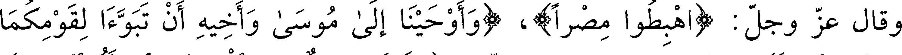
وقال عز وجل: (اهبطوا مصرا)، (وأوحينا إلى موسى وأخيه أن تبوءا لقومكما
File: a_000008.gt.txt (if the image is defective, simply delete all Arabic text and the line will be excluded)
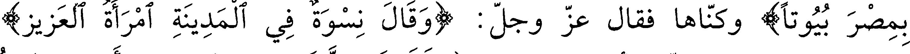
بمصر بيوتا) وكناها فقال عز وجل: (وقال نسوة في المدينة امرأة العزيز)
File: a_000009.gt.txt (if the image is defective, simply delete all Arabic text and the line will be excluded)
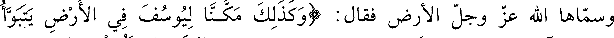
وسماها الله عز وجل الأرض فقال: (وكذلك مكنا ليوسف في الأرض يتبوأ
File: a_000010.gt.txt (if the image is defective, simply delete all Arabic text and the line will be excluded)

منها) الآية وسمى الله جل وعز ملكها العزيز فقال: (قالت امرأة العزيز) وقال:
File: a_000011.gt.txt (if the image is defective, simply delete all Arabic text and the line will be excluded)
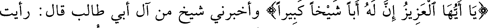
(يا أيها العزيز إن له أبا شيخا كبيرا) وأخبرني شيخ من آل أبي طالب قال: رأيت
File: a_000012.gt.txt (if the image is defective, simply delete all Arabic text and the line will be excluded)

بمنف من كور مصر دار فرعون، ودرت في مجالسه، ومشارفه وغرفه وصفافه فإذا
File: a_000013.gt.txt (if the image is defective, simply delete all Arabic text and the line will be excluded)
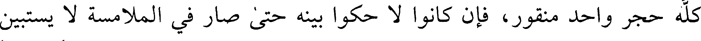
كله حجر واحد منقور، فإن كانوا لا حكوا بينه حتى صار في الملامسة لا يستبين
File: a_000014.gt.txt (if the image is defective, simply delete all Arabic text and the line will be excluded)
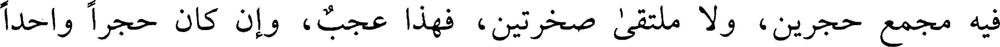
فيه مجمع حجرين، ولا ملتقى صخرتين، فهذا عجب، وإن كان حجرا واحدا
File: a_000015.gt.txt (if the image is defective, simply delete all Arabic text and the line will be excluded)

ذات عيون سفاحة.
File: a_000016.gt.txt (if the image is defective, simply delete all Arabic text and the line will be excluded)

ومن مفاخر أهل مصر مارية القبطية أم إبراهيم بن رسول الله (صعلم) ، وتزوج
File: a_000017.gt.txt (if the image is defective, simply delete all Arabic text and the line will be excluded)

خمس عشرة امرأة، وتوفي (صعلم) عن تسع، وحرم الله جل وعز مارية على الرجال
File: a_000018.gt.txt (if the image is defective, simply delete all Arabic text and the line will be excluded)

بعد أن ولدت إبراهيم من بعد وفاة النبي (عليه السلام) كما حرم سائر نسائه. من
File: a_000019.gt.txt (if the image is defective, simply delete all Arabic text and the line will be excluded)

مفاخر مصر هاجر أم إسماعيل (صعلم) الصادق الوعد. وقال النبي (صعلم) : «إذا
File: a_000020.gt.txt (if the image is defective, simply delete all Arabic text and the line will be excluded)
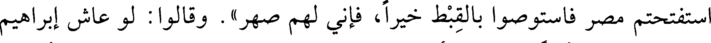
استفتحتم مصر فاستوصوا بالقبط خيرا، فإني لهم صهر» . وقالوا: لو عاش إبراهيم
File: a_000023.gt.txt (if the image is defective, simply delete all Arabic text and the line will be excluded)

إلى مصر، وأرض مصر جزء من ستين جزءا من أرض السودان، وأرض السودان
File: a_000024.gt.txt (if the image is defective, simply delete all Arabic text and the line will be excluded)

جزء من ستين جزءا من الأرض.
File: a_000025.gt.txt (if the image is defective, simply delete all Arabic text and the line will be excluded)
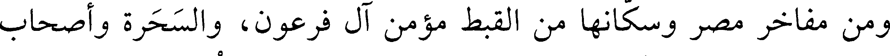
ومن مفاخر مصر وسكانها من القبط مؤمن آل فرعون، والسحرة وأصحاب
File: a_000026.gt.txt (if the image is defective, simply delete all Arabic text and the line will be excluded)
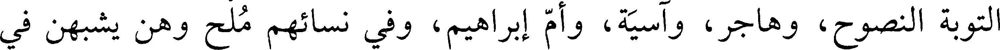
التوبة النصوح، وهاجر، وآسية، وأم إبراهيم، وفي نسائهم ملح وهن يشبهن في
File: a_000027.gt.txt (if the image is defective, simply delete all Arabic text and the line will be excluded)

الحظوة البربريات، والقبط أحذق في الكمانكية (1) واللعب من السند، ومع القبط
File: a_000028.gt.txt (if the image is defective, simply delete all Arabic text and the line will be excluded)
خفة عجيبة.
File: a_000029.gt.txt (if the image is defective, simply delete all Arabic text and the line will be excluded)
وبمصر جبل المقطم، ويروى عن كعب أنه قال: جبل مصر مقدس من
File: a_000030.gt.txt (if the image is defective, simply delete all Arabic text and the line will be excluded)

القصير إلى اليحموم، وسأل كعب رجلا يريد مصر فقال: أهد لي تربة من سفح
File: a_000031.gt.txt (if the image is defective, simply delete all Arabic text and the line will be excluded)

مقطمها، فأتاه بجراب، فلما توفي أمر به ففرش تحت جنبه في قبره. وقالوا: جبل
File: a_000032.gt.txt (if the image is defective, simply delete all Arabic text and the line will be excluded)
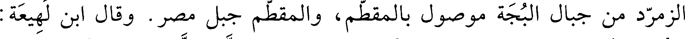
الزمرد من جبال البجة موصول بالمقطم، والمقطم جبل مصر. وقال ابن لهيعة:
File: a_000033.gt.txt (if the image is defective, simply delete all Arabic text and the line will be excluded)
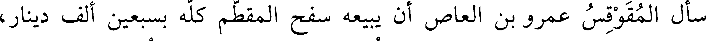
سأل المقوقس عمرو بن العاص أن يبيعه سفح المقطم كله بسبعين ألف دينار،
File: a_000034.gt.txt (if the image is defective, simply delete all Arabic text and the line will be excluded)

فكتب عمرو إلى عمر فقال عمر: سله لم أعطانا بها وهي لا تستنبط، ولا تزرع
File: a_000035.gt.txt (if the image is defective, simply delete all Arabic text and the line will be excluded)

فقال: إني أجد في الكتب أن فيه غرس الجنة، فأعلم عمرو عمر ذلك فكتب إليه:
File: a_000036.gt.txt (if the image is defective, simply delete all Arabic text and the line will be excluded)
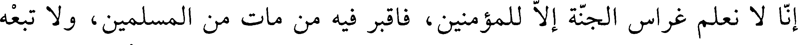
إنا لا نعلم غراس الجنة إلا للمؤمنين، فاقبر فيه من مات من المسلمين، ولا تبعه
File: a_000037.gt.txt (if the image is defective, simply delete all Arabic text and the line will be excluded)

بشيء، فكان أول من قبر فيه رجل من المعافر، يقال له عامر، فقيل عمرت.
File: a_000038.gt.txt (if the image is defective, simply delete all Arabic text and the line will be excluded)

ومدينة فسطاط: هي مدينة مصر سميت بذلك لأن عمرو بن العاص ضرب
File: a_000039.gt.txt (if the image is defective, simply delete all Arabic text and the line will be excluded)
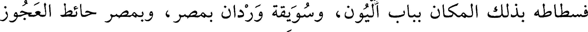
فسطاطه بذلك المكان بباب أليون، وسويقة وردان بمصر، وبمصر حائط العجوز
File: a_000040.gt.txt (if the image is defective, simply delete all Arabic text and the line will be excluded)

على شاطئ النيل، بنته عجوز كانت في أول الدهر ذات مال، وكان لها ابن وكان
File: a_000041.gt.txt (if the image is defective, simply delete all Arabic text and the line will be excluded)

واحدها فقتله السبع فقالت: لأمنعن السباع أن ترد النيل، فبنت ذلك الحائط حتى
File: a_000042.gt.txt (if the image is defective, simply delete all Arabic text and the line will be excluded)

لا تصل السباع إلى النيل؛ ويقال: إن ذلك الحائط كان طلسما وكان فيه تماثيل،
File: a_000043.gt.txt (if the image is defective, simply delete all Arabic text and the line will be excluded)

كل إقليم على هيئتهم وزيهم، والدواب والسلاح، وكل أمة مصورة في طرقها التي
File: a_000044.gt.txt (if the image is defective, simply delete all Arabic text and the line will be excluded)

تجيء منها، فإذا أراد أهل إقليم غزو مصر وانتهوا إلى تلك الصور انصرفوا،
File: a_000045.gt.txt (if the image is defective, simply delete all Arabic text and the line will be excluded)

ويقال: بني ذلك ليكون حاجزا بين أهل الصعيد والنوبة، لأنهم كانوا يغيرون على
File: a_000046.gt.txt (if the image is defective, simply delete all Arabic text and the line will be excluded)

أهل الصعيد ولا يستعرفون، فبني ذلك من أهل النوبة. وقيل أمر بعض الملوك
File: a_000047.gt.txt (if the image is defective, simply delete all Arabic text and the line will be excluded)

أفلاطون فبني بناحية مصر مما يلي البر حائطا طوله ثلاثون فرسخا ما بين الفرما إلى
File: a_000048.gt.txt (if the image is defective, simply delete all Arabic text and the line will be excluded)

أسوان حاجزا بينهم وبين الحبشة.
File: a_000049.gt.txt (if the image is defective, simply delete all Arabic text and the line will be excluded)
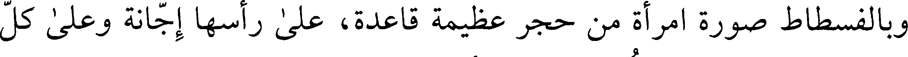
وبالفسطاط صورة امرأة من حجر عظيمة قاعدة، على رأسها إجانة وعلى كل
File: a_000050.gt.txt (if the image is defective, simply delete all Arabic text and the line will be excluded)
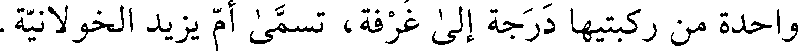
واحدة من ركبتيها درجة إلى غرفة، تسمى أم يزيد الخولانية.
File: a_000051.gt.txt (if the image is defective, simply delete all Arabic text and the line will be excluded)

وقالوا: البط ترعى بمصر كما ترعى الغنم، وبها الثعابين وليس هي في بلد
File: a_000052.gt.txt (if the image is defective, simply delete all Arabic text and the line will be excluded)

غيرها، وإليها حول الله عصا موسى، قال الله عز وجل: (فألقى عصاه فإذا هي
File: a_000053.gt.txt (if the image is defective, simply delete all Arabic text and the line will be excluded)

ثعبان مبين) يعني أنه حولها ثعبانا. ومن أعاجيب مصر النمس، وليس ذلك لأحد
File: a_000054.gt.txt (if the image is defective, simply delete all Arabic text and the line will be excluded)

غيرهم، وهي من عجائب الدنيا، وذلك أنها دويبة متحركة كأنها قديرة، فإذا رأت
File: a_000055.gt.txt (if the image is defective, simply delete all Arabic text and the line will be excluded)

الثعبان دنت منه، فينطوي الثعبان عليها يريد أن يعضها ويأكلها، فتزفر زفرة تقد
File: a_000056.gt.txt (if the image is defective, simply delete all Arabic text and the line will be excluded)
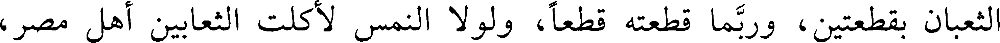
الثعبان بقطعتين، وربما قطعته قطعا، ولولا النمس لأكلت الثعابين أهل مصر،
File: a_000057.gt.txt (if the image is defective, simply delete all Arabic text and the line will be excluded)
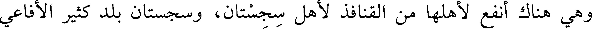
وهي هناك أنفع لأهلها من القنافذ لأهل سجستان، وسجستان بلد كثير الأفاعي
File: a_000058.gt.txt (if the image is defective, simply delete all Arabic text and the line will be excluded)

وفي شروطهم أن لا يقتل لهم قنفذ ولا يصاد. وبمصر أعجوبة أخرى وهي
File: a_000059.gt.txt (if the image is defective, simply delete all Arabic text and the line will be excluded)

التمساح، لا يكون إلا في النيل، ويكون في نهر السند مهران (1) ، فإذا عض أوغل
File: a_000060.gt.txt (if the image is defective, simply delete all Arabic text and the line will be excluded)

أسنانه واختلفت، فلم يدع ما أخذه حتى يقطع بأسنانه ما قبض من شيء، وحنكه
File: a_000061.gt.txt (if the image is defective, simply delete all Arabic text and the line will be excluded)

الأعلى يتحرك ولا يتحرك الأسفل، وليس ذلك في غيره من الدواب، ولا يعمل
File: a_000062.gt.txt (if the image is defective, simply delete all Arabic text and the line will be excluded)

الحديد في جلده، وما بين رأسه وذنبه عظم واحد، وليس يلتوي ولا ينقبض لأنه
File: a_000063.gt.txt (if the image is defective, simply delete all Arabic text and the line will be excluded)

ليس في ظهره خرز، وإذا انقلب لم يستطع أن يتحرك، وإذا سفد الذكر الأنثى خرج
File: a_000064.gt.txt (if the image is defective, simply delete all Arabic text and the line will be excluded)

من النيل فيلقيها على ظهرها ثم يأتيها مثل ما يفعل الرجل بالمرأة، فإذا فرغ أقلبها،
File: a_000065.gt.txt (if the image is defective, simply delete all Arabic text and the line will be excluded)

وإن أقرها على ظهرها صيدت، لأنها لا تقدر أن تنقلب، وذنب التمساح حاد جدا،
File: a_000066.gt.txt (if the image is defective, simply delete all Arabic text and the line will be excluded)

فربما قتل من الضربة، وربما جر الثور إلى نفسه فيأكله، وله بيض مثل بيض
File: a_000067.gt.txt (if the image is defective, simply delete all Arabic text and the line will be excluded)

الأوز، ويبيض ستين بيضة، وله ستون فإذا سفد ففي ستين مرة، فإذا خرج التمساح
File: a_000068.gt.txt (if the image is defective, simply delete all Arabic text and the line will be excluded)

من بيضة خرج مثل الحرذون في خلقه وجسمه، فيعظم حتى يكون عشرة أذرع أو
File: a_000069.gt.txt (if the image is defective, simply delete all Arabic text and the line will be excluded)

أكثر، وهو يزيد كلما عاش، وإن أخذ من جانب حنكه الأيمن، أول سن في
File: a_000070.gt.txt (if the image is defective, simply delete all Arabic text and the line will be excluded)

الحنك وعلق على من به حمى نافض تركته من ساعته، وربما دخل اللحم في
File: a_000071.gt.txt (if the image is defective, simply delete all Arabic text and the line will be excluded)

خلال أسنانه فيفتح فاه، وله صديق من الطير يشبه بالطيطوى، يجيئه حتى يسقط
File: a_000072.gt.txt (if the image is defective, simply delete all Arabic text and the line will be excluded)

على شدقه فيخلل بمنقاره ذلك اللحم، فيكون ذلك طعاما للطير، وترفيها للتمساح
File: a_000073.gt.txt (if the image is defective, simply delete all Arabic text and the line will be excluded)

لأنه ينقى ما في أسنانه من اللحم ويحرسه هذا الطائر ما دام ينقى أسنانه فإن رأى
File: a_000074.gt.txt (if the image is defective, simply delete all Arabic text and the line will be excluded)
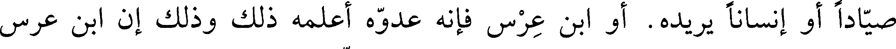
صيادا أو إنسانا يريده. أو ابن عرس فإنه عدوه أعلمه ذلك وذلك إن ابن عرس
File: a_000075.gt.txt (if the image is defective, simply delete all Arabic text and the line will be excluded)
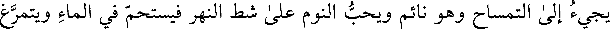
يجيء إلى التمساح وهو نائم ويحب النوم على شط النهر فيستحم في الماء ويتمرغ
File: a_000076.gt.txt (if the image is defective, simply delete all Arabic text and the line will be excluded)

في الطين ثم ينتفض حتى يقوم شعره في فم التمساح فيقتله قتلا عنيفا أو يأكل ما
File: a_000077.gt.txt (if the image is defective, simply delete all Arabic text and the line will be excluded)

في جوفه فلذلك الطير يحرس التمساح وإذا رأى ابن عرس مقبلا أنبه التمساح وآذنه
File: a_000078.gt.txt (if the image is defective, simply delete all Arabic text and the line will be excluded)

فيهرب التمساح إلى الماء وليس هذا بأعجب من الخلد وهي دابة عمياء فتخرج من
File: a_000079.gt.txt (if the image is defective, simply delete all Arabic text and the line will be excluded)

جحرها فتفتح فاها فيتساقط الذبان في فيها وأشداقها ولا تزال تضم فاها على الذبان
File: a_000080.gt.txt (if the image is defective, simply delete all Arabic text and the line will be excluded)

وتبلعه حتى تشبع ثم تدخل جحرها وليس هذا بأعجب من طائرين يراهما الناس من
File: a_000081.gt.txt (if the image is defective, simply delete all Arabic text and the line will be excluded)

أدنى حدود البحر من شق البصرة إلى غاية البحر من شق السند أحدهما كبير
File: a_000082.gt.txt (if the image is defective, simply delete all Arabic text and the line will be excluded)

والآخر صغير يقال لأحدهما جوانكرك ويسمى الآخر جرشي فلا يزال الصغير يرنق
File: a_000083.gt.txt (if the image is defective, simply delete all Arabic text and the line will be excluded)

على رأس الكبير ويعبث به ويطوف حوله ويخرج من بين رجليه ويغمه ويكربه حتى
File: a_000084.gt.txt (if the image is defective, simply delete all Arabic text and the line will be excluded)
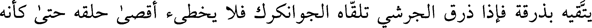
يتقيه بذرقة فإذا ذرق الجرشي تلقاه الجوانكرك فلا يخطئ أقصى حلقه حتى كأنه
File: a_000085.gt.txt (if the image is defective, simply delete all Arabic text and the line will be excluded)
ردى به في بئر فإذا استوفى ذلك الذرق رجع شبعان ريان بقوت يومه ومضى ذلك
File: a_000086.gt.txt (if the image is defective, simply delete all Arabic text and the line will be excluded)

الكبير لطيته وأمرهما مشهور ظاهر، وأعجوبة أخرى وهو إن الدخس من دواب
File: a_000087.gt.txt (if the image is defective, simply delete all Arabic text and the line will be excluded)

الماء مما يقايس السمك وليس بسمك يعرض للغريق فيدنو منه حتى يضع الغريق
File: a_000088.gt.txt (if the image is defective, simply delete all Arabic text and the line will be excluded)

يده على ظهره فيسبح والغريق يذهب معه ويستعين بالاتكاء عليه والتعلق به حتى
File: a_000089.gt.txt (if the image is defective, simply delete all Arabic text and the line will be excluded)

ينجيه، وهو عند البحريين مشهور، قالوا ومن ادهن بشحم حرذون ثم ألقى نفسه
File: a_000090.gt.txt (if the image is defective, simply delete all Arabic text and the line will be excluded)

على التمساح في الماء صاده والحرذون دويبة تكون بمصر وزبله ينفع من وجع
File: a_000091.gt.txt (if the image is defective, simply delete all Arabic text and the line will be excluded)

العين ويقاتل العقرب وإذا ظفر بالجدي أكل أذنه، وأهل مصر يعدون كون التمساح
File: a_000092.gt.txt (if the image is defective, simply delete all Arabic text and the line will be excluded)
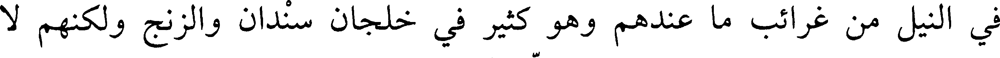
في النيل من غرائب ما عندهم وهو كثير في خلجان سندان والزنج ولكنهم لا
File: a_000093.gt.txt (if the image is defective, simply delete all Arabic text and the line will be excluded)

يعرفون له هناك هذا الطائر الذي يخلل أسنانه، وكون التمساح موصول في نيل
File: a_000094.gt.txt (if the image is defective, simply delete all Arabic text and the line will be excluded)

مصر بوادي مهران وهو وادي السند ومن هناك أتاه. وبمصر من العجائب الفرس
File: a_000095.gt.txt (if the image is defective, simply delete all Arabic text and the line will be excluded)

الذي يكون في النيل يأكل التماسيح وغيره من الدواب ويربي هذا الفرس إذا كان
File: a_000096.gt.txt (if the image is defective, simply delete all Arabic text and the line will be excluded)
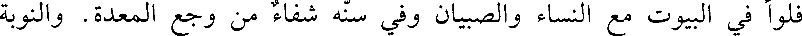
فلوا في البيوت مع النساء والصبيان وفي سنه شفاء من وجع المعدة. والنوبة
File: a_000097.gt.txt (if the image is defective, simply delete all Arabic text and the line will be excluded)

والحبشة تتعالج به لأنهم يأكلون الأطعمة الغليظة فيشرفون على الموت من وجع
File: a_000098.gt.txt (if the image is defective, simply delete all Arabic text and the line will be excluded)

المعدة فيأخذون سن هذا ويتعالجون به فيبرؤون وأعفاجه تبرئ من الجنون الذي
File: a_000099.gt.txt (if the image is defective, simply delete all Arabic text and the line will be excluded)
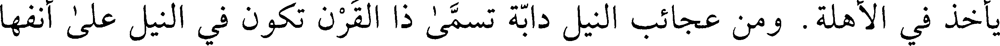
يأخذ في الأهلة. ومن عجائب النيل دابة تسمى ذا القرن تكون في النيل على أنفها
File: a_000100.gt.txt (if the image is defective, simply delete all Arabic text and the line will be excluded)
مثل السيف الحاد تقطع الصخرة إذا ضربتها وربما قتلت به الفيل.
File: a_000101.gt.txt (if the image is defective, simply delete all Arabic text and the line will be excluded)
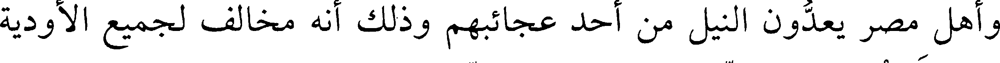
وأهل مصر يعدون النيل من أحد عجائبهم وذلك أنه مخالف لجميع الأودية
File: a_000102.gt.txt (if the image is defective, simply delete all Arabic text and the line will be excluded)

التي عليها ضبع العالم وكل سرب ومغيض فإنما استقباله من ناحية الشمال وليس
File: a_000103.gt.txt (if the image is defective, simply delete all Arabic text and the line will be excluded)

النيل كذلك لأن مجراه من ناحية الجنوب وليست التماسيح في شيء من هذه
File: a_000104.gt.txt (if the image is defective, simply delete all Arabic text and the line will be excluded)

الأودية المعروفة لا ترى بالفرات ولا دجلة ولا سيحان ولا جيحان ولا نهر بلخ،
File: a_000105.gt.txt (if the image is defective, simply delete all Arabic text and the line will be excluded)

ولا فيها من الفساد والدواب الخبيثة، وشرب أهل مصر في البواقيل (1) ، وقال
File: a_000106.gt.txt (if the image is defective, simply delete all Arabic text and the line will be excluded)

النبي (صعلم) : «تغور المياه كلها وترجع إلى أماكنها، إلا نهر الأردن ونيل مصر
File: a_000107.gt.txt (if the image is defective, simply delete all Arabic text and the line will be excluded)

والحجرات وعرفات ومنا» . وقال ابن الكلبي: إذا طلع العيوق غارت المياه كلها
File: a_000108.gt.txt (if the image is defective, simply delete all Arabic text and the line will be excluded)
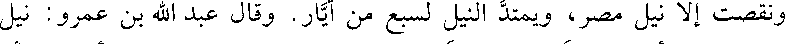
ونقصت إلا نيل مصر، ويمتد النيل لسبع من أيار. وقال عبد الله بن عمرو: نيل
File: a_000109.gt.txt (if the image is defective, simply delete all Arabic text and the line will be excluded)

مصر سيد الأنهار، سخر الله له كل نهر بين المشرق والمغرب، فإذا أراد الله أن
File: a_000110.gt.txt (if the image is defective, simply delete all Arabic text and the line will be excluded)

يجريه أمر كل نهر أن يمده، فأمدته الأنهار بمائها، فإذا فجر الله به الأرض عيونا
File: a_000111.gt.txt (if the image is defective, simply delete all Arabic text and the line will be excluded)

وانتهى من جريته إلى ما أراد الله، أوحى الله عز وجل إلى كل ماء أن يرجع إلى
File: a_000112.gt.txt (if the image is defective, simply delete all Arabic text and the line will be excluded)

عنصره، وفي الخبر أربعة أنهار من الجنة: النيل، والفرات، وسيحان، وجيحان.
File: a_000113.gt.txt (if the image is defective, simply delete all Arabic text and the line will be excluded)

وقال بعضهم: النيل يخرج من خلف خط الاستواء من بحيرتين يقال لهما بحيرتا
File: a_000114.gt.txt (if the image is defective, simply delete all Arabic text and the line will be excluded)

النيل، وهو يطيف أرض الحبشة ويجيء فيمر بين بحر القلزم- وهو بحر الفرما-
File: a_000115.gt.txt (if the image is defective, simply delete all Arabic text and the line will be excluded)

وبين المفازة، فيجيء فيصب بدمياط، ويخرج إلى البحر الرومي المغربي، ودمياط
File: a_000116.gt.txt (if the image is defective, simply delete all Arabic text and the line will be excluded)
على البحر الرومي المغربي. وقال أبو الخطاب: قال المشتري ابن الأسود: غزوت
File: a_000117.gt.txt (if the image is defective, simply delete all Arabic text and the line will be excluded)

بلاد أنبية عشرين غزاة، من السوس الأقصى، فرأيت النيل بينه وبين البحر الأجاج
File: a_000118.gt.txt (if the image is defective, simply delete all Arabic text and the line will be excluded)

القول في فارس
File: a_000119.gt.txt (if the image is defective, simply delete all Arabic text and the line will be excluded)

حدثنا أبو عمرو عبد العزيز بن محمد بن الفضل، حدثنا إبراهيم بن الجنيد
File: a_000120.gt.txt (if the image is defective, simply delete all Arabic text and the line will be excluded)

حدثنا بشر بن محمد بن أبان عن داود بن المخير عن الصلت [89 أ] بن دينار عن
File: a_000121.gt.txt (if the image is defective, simply delete all Arabic text and the line will be excluded)

عبد الله بن أبي مليكة قال: قال رسول الله (صعلم) : أهل فارس عصبتنا. ويروى عن
File: a_000122.gt.txt (if the image is defective, simply delete all Arabic text and the line will be excluded)
أنس بن مالك قال: إن الله خير بين خلقه، فخيرته من العرب قريش وخيرته من
File: a_000123.gt.txt (if the image is defective, simply delete all Arabic text and the line will be excluded)
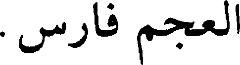
العجم فارس.
File: a_000124.gt.txt (if the image is defective, simply delete all Arabic text and the line will be excluded)

ويروى عن النبي (صعلم) أنه قال: أسعد الناس بالإسلام أهل فارس. وأشقى
File: a_000125.gt.txt (if the image is defective, simply delete all Arabic text and the line will be excluded)

العرب به بهراء وتغلب
File: a_000126.gt.txt (if the image is defective, simply delete all Arabic text and the line will be excluded)

وقال ابن لهيعة: فارس والروم قريش العجم
File: a_000127.gt.txt (if the image is defective, simply delete all Arabic text and the line will be excluded)
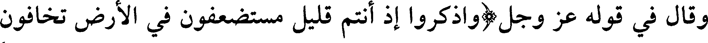
وقال في قوله عز وجل (واذكروا إذ أنتم قليل مستضعفون في الأرض تخافون
File: a_000128.gt.txt (if the image is defective, simply delete all Arabic text and the line will be excluded)

أن يتخطفكم الناس) قال: الناس إذ ذاك فارس والروم. وفي قوله (يستبدل قوما
File: a_000129.gt.txt (if the image is defective, simply delete all Arabic text and the line will be excluded)

غيركم ثم لا يكونوا أمثالكم) قال: فارس
File: a_000130.gt.txt (if the image is defective, simply delete all Arabic text and the line will be excluded)
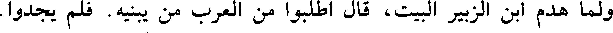
ولما هدم ابن الزبير البيت، قال اطلبوا من العرب من يبنيه. فلم يجدوا
File: a_000131.gt.txt (if the image is defective, simply delete all Arabic text and the line will be excluded)
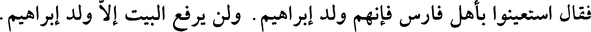
فقال استعينوا بأهل فارس فإنهم ولد إبراهيم. ولن يرفع البيت إلا ولد إبراهيم
File: a_000132.gt.txt (if the image is defective, simply delete all Arabic text and the line will be excluded)

وقال رسول الله (صعلم) : أبعد الناس من الإسلام الروم، ولو كان معلقا بالثريا
File: a_000133.gt.txt (if the image is defective, simply delete all Arabic text and the line will be excluded)

لتناولته فارس. يعني الإسلام
File: a_000134.gt.txt (if the image is defective, simply delete all Arabic text and the line will be excluded)

[قال وذكر النبي (صعلم) كسرى أنوشروان فقال: ويل أمه، ما أعمق سلمه لو
File: a_000137.gt.txt (if the image is defective, simply delete all Arabic text and the line will be excluded)

إلى القبط والبرابر. وجزء منها أرض كور السواد، ما بين البرابر إلى الهند. والجزء
File: a_000138.gt.txt (if the image is defective, simply delete all Arabic text and the line will be excluded)

الرابع هذه الأرض التي تنسب إلى فارس ما بين نهر بلخ إلى منقطع آذربيجان
File: a_000139.gt.txt (if the image is defective, simply delete all Arabic text and the line will be excluded)

وطخارستان. فكان هذا الجزء صفوة الأرض. وهو من الأرضين بمنزلة الرأس
File: a_000140.gt.txt (if the image is defective, simply delete all Arabic text and the line will be excluded)

والسرة والسنام والبطن. أما الرأس، فإن ملوك أقطار الأرض مذ كان ايرج بن
File: a_000141.gt.txt (if the image is defective, simply delete all Arabic text and the line will be excluded)

افريدون، كانت دائنة لملوكنا يسمونهم أملاك الأرض ويهدون لهم صفايا ما في
File: a_000142.gt.txt (if the image is defective, simply delete all Arabic text and the line will be excluded)
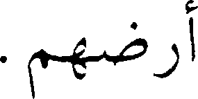
أرضهم
File: a_000143.gt.txt (if the image is defective, simply delete all Arabic text and the line will be excluded)
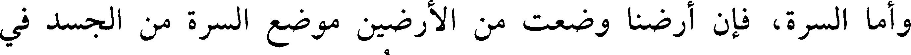
وأما السرة، فإن أرضنا وضعت من الأرضين موضع السرة من الجسد في
File: a_000144.gt.txt (if the image is defective, simply delete all Arabic text and the line will be excluded)

البسطة والكرم وفيما جمع لنا مما نرئسهم به. فأعطينا فروسية الترك وفطنة الهند
File: a_000145.gt.txt (if the image is defective, simply delete all Arabic text and the line will be excluded)

وصناعة الروم، وأعطينا في كل شيء من ذلك الزيادة على ما أعطوا، وأصفينا ما
File: a_000146.gt.txt (if the image is defective, simply delete all Arabic text and the line will be excluded)

حرموا بأدب الدين في أدب الملك. وأعفينا إلى مسام سيماء مشترعة في صورنا
File: a_000147.gt.txt (if the image is defective, simply delete all Arabic text and the line will be excluded)

وألواننا وشعورنا كما شوهت سائر الأمم بصنوف الشهرة من لون السواد وشدة
File: a_000148.gt.txt (if the image is defective, simply delete all Arabic text and the line will be excluded)

الجعودة والسبوطة وصغر العيون وقلة اللحى. فأعطينا الأوساط من المحاسن
File: a_000149.gt.txt (if the image is defective, simply delete all Arabic text and the line will be excluded)
والشعور والألوان والصور والأجسام
File: a_000150.gt.txt (if the image is defective, simply delete all Arabic text and the line will be excluded)

وأما السنام، فإن أرضنا على صغرها عند بقية الأرضين هي أكثر منافع والين
File: a_000151.gt.txt (if the image is defective, simply delete all Arabic text and the line will be excluded)
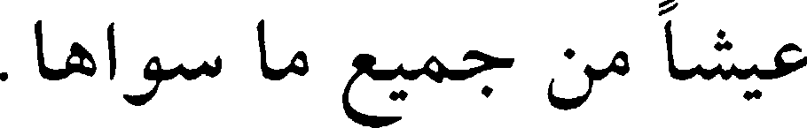
عيشا من جميع ما سواها
File: a_000152.gt.txt (if the image is defective, simply delete all Arabic text and the line will be excluded)

وأما البطن، فإن الأرضين كلها تجلب إليها منافعها من علمها ورفقها
File: a_000153.gt.txt (if the image is defective, simply delete all Arabic text and the line will be excluded)
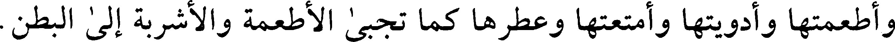
وأطعمتها وأدويتها وأمتعتها وعطرها كما تجبى الأطعمة والأشربة إلى البطن
File: a_000154.gt.txt (if the image is defective, simply delete all Arabic text and the line will be excluded)

وقال الواقدي: شاور عمر بن الخطاب رضي الله عنه الهرمزان في فارس
File: a_000155.gt.txt (if the image is defective, simply delete all Arabic text and the line will be excluded)

وإصبهان وآذربيجان. فقال الهرمزان: إن إصبهان وآذربيجان الجناحان. فإن
File: a_000156.gt.txt (if the image is defective, simply delete all Arabic text and the line will be excluded)

قطعت الجناحين، بقي الرأس. وإن قطعت الرأس وقع الجناحان، فابدأ بالرأس
File: a_000157.gt.txt (if the image is defective, simply delete all Arabic text and the line will be excluded)

وكان أول من جمع فارس وملكها، أردشير بن بابك بن ساسان، وهو أحد
File: a_000158.gt.txt (if the image is defective, simply delete all Arabic text and the line will be excluded)

ملوك الطوائف وكان على إصطخر، وهو من أولاد [90 أ] الملوك المتقدمين قبل
File: a_000159.gt.txt (if the image is defective, simply delete all Arabic text and the line will be excluded)

ملوك الطوائف. فرأى أنه وارث ملكهم فكتب إلى من بقربه من ملوك فارس ومن
File: a_000160.gt.txt (if the image is defective, simply delete all Arabic text and the line will be excluded)

405
File: a_000161.gt.txt (if the image is defective, simply delete all Arabic text and the line will be excluded)

نأى عنه من ملوك الطوائف يخبرهم بالذي أجمع عليه من الطلب بالملك لما فيه من
File: a_000162.gt.txt (if the image is defective, simply delete all Arabic text and the line will be excluded)

صلاح أمور الرعية وإقامة الدين والسنة. فمنهم من أقر له بالطاعة، ومنهم من لم
File: a_000163.gt.txt (if the image is defective, simply delete all Arabic text and the line will be excluded)
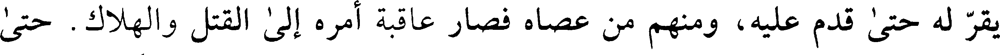
يقر له حتى قدم عليه، ومنهم من عصاه فصار عاقبة أمره إلى القتل والهلاك. حتى
File: a_000164.gt.txt (if the image is defective, simply delete all Arabic text and the line will be excluded)

استوسق له ملكه. وهو الذي افتتح الحضر. وكان ملك السواد متحصنا فيه وكانت
File: a_000165.gt.txt (if the image is defective, simply delete all Arabic text and the line will be excluded)

العرب تسميه الساطرون. وفيه يقول أبو داود
File: a_000166.gt.txt (if the image is defective, simply delete all Arabic text and the line will be excluded)
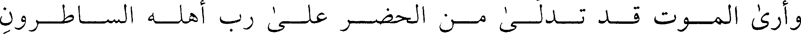
وأرى المـوت قـد تـدلـى مـن الحضـر علـى رب أهلـه السـاطـرون
File: a_000167.gt.txt (if the image is defective, simply delete all Arabic text and the line will be excluded)

وقد أتينا بخبره فيما تقدم
File: a_000168.gt.txt (if the image is defective, simply delete all Arabic text and the line will be excluded)

وهو أول من وضع السكك وحذف أذناب دواب البرد وبنى مدينة جور
File: a_000169.gt.txt (if the image is defective, simply delete all Arabic text and the line will be excluded)

بفارس وكان موضعها صحراء. فمر بها أردشير فأمر ببنائها وسماها أردشير خرة
File: a_000170.gt.txt (if the image is defective, simply delete all Arabic text and the line will be excluded)

وسمتها العرب جور. وهي مبنية على صورة دارابجرد. ونصب فيها بيت نار.
File: a_000171.gt.txt (if the image is defective, simply delete all Arabic text and the line will be excluded)

وبنى مدينة رام أردشير وبهمن أردشير خرة وهي فرات البصرة. واستاراباذ
File: a_000172.gt.txt (if the image is defective, simply delete all Arabic text and the line will be excluded)

وهي كرخ ميسان وهي من كور دجلة. ومدينة سوق الأهواز. وكانت مدة ملكه أربع
File: a_000173.gt.txt (if the image is defective, simply delete all Arabic text and the line will be excluded)

عشرة سنة وستة أشهر.
File: a_000174.gt.txt (if the image is defective, simply delete all Arabic text and the line will be excluded)

وقالوا: سمعوا فارس بفارس بن طهومرث وهو الذي تنسب الفرس إليه،
File: a_000175.gt.txt (if the image is defective, simply delete all Arabic text and the line will be excluded)
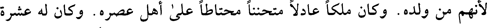
لأنهم من ولده. وكان ملكا عادلا متحننا محتاطا على أهل عصره. وكان له عشرة
File: a_000176.gt.txt (if the image is defective, simply delete all Arabic text and the line will be excluded)

بنين منهم: جم وشيراز واصطخر وفسا وجنابا وكسكر وكلواذى وقرقيسيا
File: a_000177.gt.txt (if the image is defective, simply delete all Arabic text and the line will be excluded)
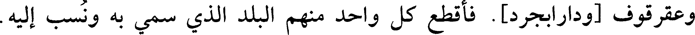
وعقرقوف [ودارابجرد] . فأقطع كل واحد منهم البلد الذي سمي به ونسب إليه .
File: a_000178.gt.txt (if the image is defective, simply delete all Arabic text and the line will be excluded)

وإنما كانوا قبل ذلك يسكنون الخيام. ويقال إن ملكه كان ثلاثمائة سنة.
File: a_000179.gt.txt (if the image is defective, simply delete all Arabic text and the line will be excluded)

ومن مدينة سوق الأهواز إلى مدينة أرجان أول عمل فارس من هذا الوجه
File: a_000180.gt.txt (if the image is defective, simply delete all Arabic text and the line will be excluded)

واحد وثلاثون فرسخا. وأرجان بناها قباذ بن فيروز لأنه لما استرجع الملك من أخيه
File: a_000181.gt.txt (if the image is defective, simply delete all Arabic text and the line will be excluded)

جاماسف غزا الروم فافتتح مدينتين من مدن الجزيرة مما كانت في أيدي الروم تدعى
File: a_000182.gt.txt (if the image is defective, simply delete all Arabic text and the line will be excluded)

واحدة آمد والأخرى ميافارقين. وأمر فبنيت فيما بين حد فارس والأهواز مدينة
File: a_000183.gt.txt (if the image is defective, simply delete all Arabic text and the line will be excluded)

وسماها ابرقباد، وهي التي تسمى أرجان. وأسكن فيها سبي [90 ب] همدان
File: a_000184.gt.txt (if the image is defective, simply delete all Arabic text and the line will be excluded)

406
File: a_000185.gt.txt (if the image is defective, simply delete all Arabic text and the line will be excluded)

وكورها كورة وضم إليها رساتيقها من كور رام هرمز وكورة سابور وكورة أردشير
File: a_000186.gt.txt (if the image is defective, simply delete all Arabic text and the line will be excluded)

خرة وكورة إصبهان
File: a_000187.gt.txt (if the image is defective, simply delete all Arabic text and the line will be excluded)

وبنى أيضا مدينة حلوان مما يلي الماهات. وبنى مدينة يقال لها قباد خرة
File: a_000188.gt.txt (if the image is defective, simply delete all Arabic text and the line will be excluded)

وكور أيضا كورة أخرى بأرض ميسان وسماها شادقباذ، وهي التي تسمى
File: a_000189.gt.txt (if the image is defective, simply delete all Arabic text and the line will be excluded)

أستان العالي. ووضع لها أربعة طساسيج: طسوج فيروز شابور وهي الأنبار وكان
File: a_000190.gt.txt (if the image is defective, simply delete all Arabic text and the line will be excluded)

منها هيت وعانات فأفردها يزيد بن معاوية (1) في أيامه إلى الجزيرة. وطسوج
File: a_000191.gt.txt (if the image is defective, simply delete all Arabic text and the line will be excluded)
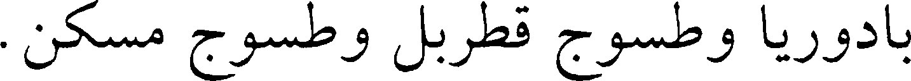
بادوريا وطسوج قطربل وطسوج مسكن
File: a_000192.gt.txt (if the image is defective, simply delete all Arabic text and the line will be excluded)
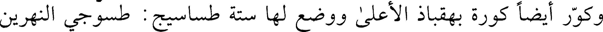
وكور أيضا كورة بهقباذ الأعلى ووضع لها ستة طساسيج: طسوجي النهرين
File: a_000193.gt.txt (if the image is defective, simply delete all Arabic text and the line will be excluded)

وطسوج عين التمر والفلوجتين العليا والسفلى وطسوجي بابل وخطرنية.
File: a_000194.gt.txt (if the image is defective, simply delete all Arabic text and the line will be excluded)

وكور أيضا بهقباد الأوسط ووضع لها أربعة طساسيج: طسوج سورا
File: a_000195.gt.txt (if the image is defective, simply delete all Arabic text and the line will be excluded)

وطسوج باروسما والجبه والبداة. وطسوج نهر الملك.
File: a_000196.gt.txt (if the image is defective, simply delete all Arabic text and the line will be excluded)

وكور أيضا بهقباد الأسفل ووضع لها خمسة طساسيج: فرات بادقلى
File: a_000197.gt.txt (if the image is defective, simply delete all Arabic text and the line will be excluded)

والسيلحين. وطسوج الحيرة وطسوج تستر وطسوج هرمزجرد.
File: a_000198.gt.txt (if the image is defective, simply delete all Arabic text and the line will be excluded)

وفرق كورة إصبهان على شقين: شق جي وشق التيمرة.
File: a_000199.gt.txt (if the image is defective, simply delete all Arabic text and the line will be excluded)

وأمر فبنيت مدينة شهرزور وهي بأرض به. وفيما بين جرجان وإيران شهر
File: a_000200.gt.txt (if the image is defective, simply delete all Arabic text and the line will be excluded)

مدينة أسماها شهرقباد.
File: a_000201.gt.txt (if the image is defective, simply delete all Arabic text and the line will be excluded)

وبأرجان قنطرة كسروية طويلة أكثر من ثلاثمائة ذراع مبنية بالحجارة على
File: a_000202.gt.txt (if the image is defective, simply delete all Arabic text and the line will be excluded)

وادي أرجان.
File: a_000203.gt.txt (if the image is defective, simply delete all Arabic text and the line will be excluded)

قال: وأخبرني محمد بن أحمد الأصبهاني قال: بأرجان كهف في جبل ينبع
File: a_000204.gt.txt (if the image is defective, simply delete all Arabic text and the line will be excluded)

منه ماء يشبه بالعرق من حجارته فيكون منه هذا المومياي الأبيض الجيد. وعلى هذا
File: a_000205.gt.txt (if the image is defective, simply delete all Arabic text and the line will be excluded)

الكهف باب حديد وحفظة ويغلق ويختم بخاتم السلطان وقاضي البلد إلى يوم من
File: a_000206.gt.txt (if the image is defective, simply delete all Arabic text and the line will be excluded)
السنة يفتح فيه. ويجتمع القاضي وشيوخ البلد حتى يفتح بحضرتهم ويدخل إليه
File: a_000207.gt.txt (if the image is defective, simply delete all Arabic text and the line will be excluded)

407
File: a_000208.gt.txt (if the image is defective, simply delete all Arabic text and the line will be excluded)
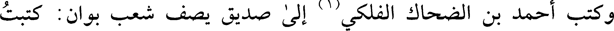
وكتب أحمد بن الضحاك الفلكي (1) إلى صديق يصف شعب بوان: كتبت
File: a_000209.gt.txt (if the image is defective, simply delete all Arabic text and the line will be excluded)

إليك من شعب بوان وله عندي يد بيضاء مذكورة، ومنة غراء مشهورة بما أولانيه
File: a_000210.gt.txt (if the image is defective, simply delete all Arabic text and the line will be excluded)

من منظر أعدى على الأحزان، وأقال من صروف الزمان. وسرح طرفي في جداول
File: a_000211.gt.txt (if the image is defective, simply delete all Arabic text and the line will be excluded)
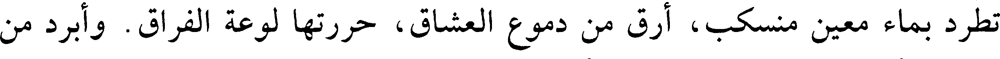
تطرد بماء معين منسكب، أرق من دموع العشاق، حررتها لوعة الفراق. وأبرد من
File: a_000212.gt.txt (if the image is defective, simply delete all Arabic text and the line will be excluded)
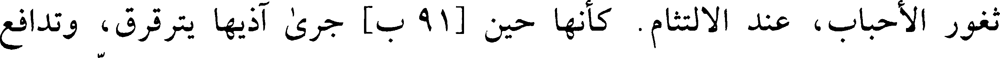
ثغور الأحباب، عند الالتثام. كأنها حين [91 ب] جرى آذيها يترقرق، وتدافع
File: a_000213.gt.txt (if the image is defective, simply delete all Arabic text and the line will be excluded)

تيارها يتدفق. وارتج حبابها يتكسر في خلال زهر ورياض ترنو بحدق تولد قصب
File: a_000214.gt.txt (if the image is defective, simply delete all Arabic text and the line will be excluded)
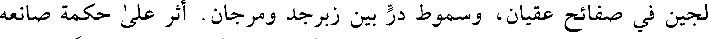
لجين في صفائح عقيان، وسموط در بين زبرجد ومرجان. أثر على حكمة صانعه
File: a_000215.gt.txt (if the image is defective, simply delete all Arabic text and the line will be excluded)

شهيد، وعلم على لطف خالقه دليل. إلى ظل سجسج أحوى، وخضل ألمى. قد
File: a_000216.gt.txt (if the image is defective, simply delete all Arabic text and the line will be excluded)

غنت عليه أغصان فينانة وقضب غيدانة. تشورت لها القدود المهفهفة خجلا،
File: a_000217.gt.txt (if the image is defective, simply delete all Arabic text and the line will be excluded)

وتقيلتها الخصور المرهفة تشبها. يستقيدها النسيم فتنقاد، ويعدل بها فتنعدل. فمن
File: a_000218.gt.txt (if the image is defective, simply delete all Arabic text and the line will be excluded)

متورد يروق منظره، ومرتج يتهدل مثمره. مشتركة فيه حمرة نضج الثمار، بنفحة
File: a_000219.gt.txt (if the image is defective, simply delete all Arabic text and the line will be excluded)

نسيم النوار. وقد أقمت به يوما لخيالك منادما ولشوقك مسامرا. وشربت لك
File: a_000220.gt.txt (if the image is defective, simply delete all Arabic text and the line will be excluded)
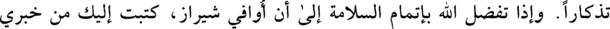
تذكارا. وإذا تفضل الله بإتمام السلامة إلى أن أوافي شيراز، كتبت إليك من خبري
File: a_000221.gt.txt (if the image is defective, simply delete all Arabic text and the line will be excluded)
بما تقف عليه إن شاء الله.
File: a_000222.gt.txt (if the image is defective, simply delete all Arabic text and the line will be excluded)

ومن النوبندجان إلى شيراز نيف وعشرون فرسخا.
File: a_000223.gt.txt (if the image is defective, simply delete all Arabic text and the line will be excluded)

وهي (2) من كورة أردشير خرة ورساتيقها: جور والخبر والصيحكان والبرجان
File: a_000224.gt.txt (if the image is defective, simply delete all Arabic text and the line will be excluded)

والكهرجان والخواروستان وكير وسينيز وسيراف والرويحان وكان فيروز وكازرون
File: a_000225.gt.txt (if the image is defective, simply delete all Arabic text and the line will be excluded)

وكران وابزر وتوج.
File: a_000226.gt.txt (if the image is defective, simply delete all Arabic text and the line will be excluded)
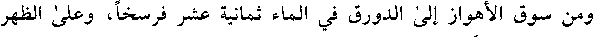
ومن سوق الأهواز إلى الدورق في الماء ثمانية عشر فرسخا، وعلى الظهر
File: a_000227.gt.txt (if the image is defective, simply delete all Arabic text and the line will be excluded)

أربعة وعشرون فرسخا.
File: a_000228.gt.txt (if the image is defective, simply delete all Arabic text and the line will be excluded)

409
File: a_000229.gt.txt (if the image is defective, simply delete all Arabic text and the line will be excluded)

كورة سابور ومدينتها النوبندجان ورساتيقها: الخشن والكيمارج وكازرون
File: a_000230.gt.txt (if the image is defective, simply delete all Arabic text and the line will be excluded)
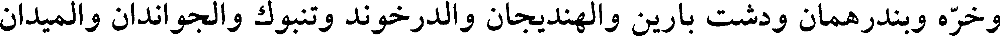
وخره وبندر همان ودشت بارين والهنديجان والدرخوند وتنبوك والجواندان والميدان
File: a_000231.gt.txt (if the image is defective, simply delete all Arabic text and the line will be excluded)

والمذار وماهان والجنيد والرامجان والشاهجان ومور ودادين وخمايجان السفلى
File: a_000232.gt.txt (if the image is defective, simply delete all Arabic text and the line will be excluded)

وخمايجان العليا وتيرمردان وجنحان والسياه مص وانبوران.
File: a_000233.gt.txt (if the image is defective, simply delete all Arabic text and the line will be excluded)
كورة إصطخر والمدينة ورساتيقها: مدينة البيضاء وبهران وأسار وإيرج
File: a_000234.gt.txt (if the image is defective, simply delete all Arabic text and the line will be excluded)

ومائين وخبر إصطخر ونيرز وأبرقويه والبرانجان والميان روذان والكاسكان والهزار.
File: a_000235.gt.txt (if the image is defective, simply delete all Arabic text and the line will be excluded)

ومن شيراز إلى مدينة فسا ثلاثون فرسخا. ومن مدينة فسا إلى مدينة داربجرد
File: a_000236.gt.txt (if the image is defective, simply delete all Arabic text and the line will be excluded)

ثمانية عشر فرسخا ورساتيقها: كرم وجهرم ونيريز والفستجان والابجرد والانديان
File: a_000237.gt.txt (if the image is defective, simply delete all Arabic text and the line will be excluded)

وجويم وفرج ويارم وطسان.
File: a_000238.gt.txt (if the image is defective, simply delete all Arabic text and the line will be excluded)

كورة أرجان ورساتيقها: قاش وريشهر والسلجان والبحار وفرزن (1).
File: a_000239.gt.txt (if the image is defective, simply delete all Arabic text and the line will be excluded)
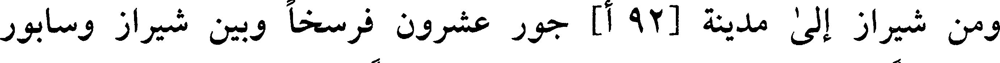
ومن شيراز إلى مدينة [92 أ] جور عشرون فرسخا وبين شيراز وسابور
File: a_000240.gt.txt (if the image is defective, simply delete all Arabic text and the line will be excluded)

عشرون فرسخا. وبين شيراز واصطخر اثنا عشر فرسخا.
File: a_000241.gt.txt (if the image is defective, simply delete all Arabic text and the line will be excluded)

زموم (2) الأكراد بفارس وتفسير الزموم محال الأكراد. قال صاحب كتاب
File: a_000242.gt.txt (if the image is defective, simply delete all Arabic text and the line will be excluded)
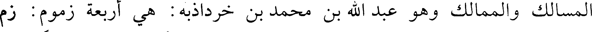
المسالك والممالك وهو عبد الله بن محمد بن خرداذبه: هي أربعة زموم: زم
File: a_000243.gt.txt (if the image is defective, simply delete all Arabic text and the line will be excluded)

الحسين بن جيلويه ويسمى البازنجان، وهو من شيراز على أربعة عشر فرسخا. وزم
File: a_000244.gt.txt (if the image is defective, simply delete all Arabic text and the line will be excluded)

ازدم بن جوانانه من شيراز على ستة وعشرين فرسخا. وزم القاسم بن شهريار
File: a_000245.gt.txt (if the image is defective, simply delete all Arabic text and the line will be excluded)

ويسمى الكوريان، من شيراز على خمسين فرسخا. وزم الحسين بن صالح يسمى
File: a_000246.gt.txt (if the image is defective, simply delete all Arabic text and the line will be excluded)

السوران من شيراز على سبعة فراسخ.
File: a_000247.gt.txt (if the image is defective, simply delete all Arabic text and the line will be excluded)

وقال المدائني: كانت اصطخر تجبى ستة عشر ألف ألف درهم. وسابور
File: a_000248.gt.txt (if the image is defective, simply delete all Arabic text and the line will be excluded)

410
File: a_000249.gt.txt (if the image is defective, simply delete all Arabic text and the line will be excluded)
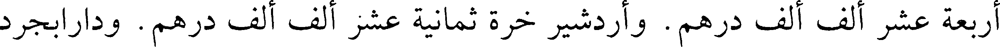
أربعة عشر ألف ألف درهم. وأردشير خرة ثمانية عشر ألف ألف درهم. ودارابجرد
File: a_000250.gt.txt (if the image is defective, simply delete all Arabic text and the line will be excluded)
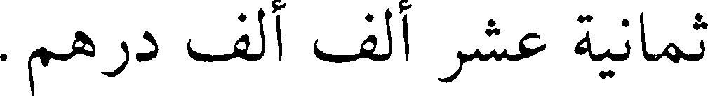
ثمانية عشر ألف ألف درهم.
File: a_000251.gt.txt (if the image is defective, simply delete all Arabic text and the line will be excluded)

وكانت أرجان بعضها إلى إصبهان وبعضها إلى اصطخر وبعضها إلى رام
File: a_000252.gt.txt (if the image is defective, simply delete all Arabic text and the line will be excluded)
هرمز. فصيرت في الإسلام كورة واحدة.
File: a_000253.gt.txt (if the image is defective, simply delete all Arabic text and the line will be excluded)

فصارت فارس خمس كور وهي إصطخر وشابور وأردشيرخره ودارابجرد
File: a_000254.gt.txt (if the image is defective, simply delete all Arabic text and the line will be excluded)

وفسا وأرجان. وفارس مائة وخمسون في فرسخا في مثلها.
File: a_000255.gt.txt (if the image is defective, simply delete all Arabic text and the line will be excluded)

وافتتحت عنوة على يدي أبي موسى الأشعري وعثمان بن أبي العاص رضي
File: a_000256.gt.txt (if the image is defective, simply delete all Arabic text and the line will be excluded)

الله عنهما.
File: a_000257.gt.txt (if the image is defective, simply delete all Arabic text and the line will be excluded)
ويقال إن نمرود إبراهيم عليه السلام من إصطخر. ويقال بل كان من قرية
File: a_000258.gt.txt (if the image is defective, simply delete all Arabic text and the line will be excluded)

يقال لها أبرقوية.
File: a_000259.gt.txt (if the image is defective, simply delete all Arabic text and the line will be excluded)

وخراج فارس ثلاثة وثلاثون ألف ألف درهم بالكفاية. وذكر الفضل بن
File: a_000260.gt.txt (if the image is defective, simply delete all Arabic text and the line will be excluded)

مروان (1) أنه قبلها بخمسة وثلاثين ألف ألف درهم بالكفاية على أنه لا مؤونة على
File: a_000261.gt.txt (if the image is defective, simply delete all Arabic text and the line will be excluded)

السلطان. وجباها الحجاج بن يوسف والأهواز ثمانية عشر ألف ألف درهم. وكان
File: a_000262.gt.txt (if the image is defective, simply delete all Arabic text and the line will be excluded)

عمرو بن الليث يجبي من خراجها إحدى وثلاثين ألف ألف درهم، ومن ضياعها
File: a_000263.gt.txt (if the image is defective, simply delete all Arabic text and the line will be excluded)

تسعة عشر ألف ألف درهم، فجميعه خمسون ألف ألف درهم. ويحمل إلى
File: a_000264.gt.txt (if the image is defective, simply delete all Arabic text and the line will be excluded)

السلطان في كل سنة خمسة عشر ألف ألف درهم. وجباها الناصر في سنة ثمان
File: a_000265.gt.txt (if the image is defective, simply delete all Arabic text and the line will be excluded)

وسبعين ومائتين ستين ألف ألف درهم. وكانت الفرس قسطت على كور فارس
File: a_000266.gt.txt (if the image is defective, simply delete all Arabic text and the line will be excluded)

أربعين ألف ألف مثاقيل.
File: a_000267.gt.txt (if the image is defective, simply delete all Arabic text and the line will be excluded)
411
File: a_000268.gt.txt (if the image is defective, simply delete all Arabic text and the line will be excluded)

ومن العجائب بفارس شجرة تفاح بشيراز، نصف التفاحة حلو في نهاية
File: a_000269.gt.txt (if the image is defective, simply delete all Arabic text and the line will be excluded)

الحلاوة ونصفها حامض في غاية الحموضة. وليس بفارس كلها من هذا النوع إلا
File: a_000270.gt.txt (if the image is defective, simply delete all Arabic text and the line will be excluded)

هذه الشجرة الواحدة.
File: a_000271.gt.txt (if the image is defective, simply delete all Arabic text and the line will be excluded)

ولهم سابور وفيها الأدهان الكثيرة ومن [92 ب] دخلها لم يزل يشم ريحا
File: a_000272.gt.txt (if the image is defective, simply delete all Arabic text and the line will be excluded)

طيبة حتى يخرج منها، وذلك لكثرة رياحينها وأنوارها وبساتينها.
File: a_000273.gt.txt (if the image is defective, simply delete all Arabic text and the line will be excluded)

ولهم جور وبها يعمل الماورد الجوري وهو النهاية من الماورد.
File: a_000274.gt.txt (if the image is defective, simply delete all Arabic text and the line will be excluded)

ولهم الثياب السينيزية (1) والجنابية والنوزية والسابورية. وهم أحذق الناس
File: a_000275.gt.txt (if the image is defective, simply delete all Arabic text and the line will be excluded)

باتخاذ المرايا والمجامع وغير ذلك من الآلات الحديد.
File: a_000276.gt.txt (if the image is defective, simply delete all Arabic text and the line will be excluded)

وقال الأصمعي: حشوش الدنيا ثلاثة: عمان والأبلة وسيراف.
File: a_000277.gt.txt (if the image is defective, simply delete all Arabic text and the line will be excluded)

412
File: a_000278.gt.txt (if the image is defective, simply delete all Arabic text and the line will be excluded)
القول في كرمان
File: a_000279.gt.txt (if the image is defective, simply delete all Arabic text and the line will be excluded)

قال ابن الكلبي: سميت كرمان بكرمان بن فلوج من بني ليطي بن يافث بن
File: a_000280.gt.txt (if the image is defective, simply delete all Arabic text and the line will be excluded)

نوح عليه السلام. ويقال إن بعض ملوك الفرس أخذ قوما فلاسفة (1) فحبسهم وقال:
File: a_000281.gt.txt (if the image is defective, simply delete all Arabic text and the line will be excluded)
لا يدخل إليكم إلا الخبز وحده وخيروهم في إدام واحد. فاختاروا الأترج فقيل
File: a_000282.gt.txt (if the image is defective, simply delete all Arabic text and the line will be excluded)

لهم: كيف اخترتم الأترج دون غيره؟ قالوا: لأن قشره الظاهر طيب فنشمه. وأما
File: a_000283.gt.txt (if the image is defective, simply delete all Arabic text and the line will be excluded)

داخله ففاكهة. وأما حماضة فأدم، وأما حبة فدهن. فأمر بهم فاسكنوا كرمان.
File: a_000284.gt.txt (if the image is defective, simply delete all Arabic text and the line will be excluded)

وكان ماؤها لا يخرج إلا على خمسين ذراعا. فهندسوه حتى أظهروه على وجه
File: a_000285.gt.txt (if the image is defective, simply delete all Arabic text and the line will be excluded)
الأرض. ثم غرسوا بها الأشجار فالتفت كرمان كلها بالشجر. فعرف الملك ذلك
File: a_000286.gt.txt (if the image is defective, simply delete all Arabic text and the line will be excluded)

فقال: اسكنوهم الجبال فاسكنوها، فعملوا الفوارات وأظهروا الماء على رؤوس
File: a_000287.gt.txt (if the image is defective, simply delete all Arabic text and the line will be excluded)

الجبال فقال الملك: اسجنوهم. فعملوا في السجن الكيمياء. وقالوا: هذا علم لا
File: a_000288.gt.txt (if the image is defective, simply delete all Arabic text and the line will be excluded)

نخرجه إلى أحد. وعملوا منه ما علموا أنه يكفيهم مدة أعمارهم ثم أحرقوا كتبهم
File: a_000289.gt.txt (if the image is defective, simply delete all Arabic text and the line will be excluded)

وانقطع علم الكيمياء
File: a_000290.gt.txt (if the image is defective, simply delete all Arabic text and the line will be excluded)

وقال بعض علماء الفرس: كانت الأكاسرة تجبي السواد مائة ألف ألف
File: a_000291.gt.txt (if the image is defective, simply delete all Arabic text and the line will be excluded)

وعشرين ألف ألف درهم سوى ثلاثين ألف ألف من الوضائع لموائد الملوك.
File: a_000292.gt.txt (if the image is defective, simply delete all Arabic text and the line will be excluded)
وكانوا يجبون فارس أربعين ألف ألف. وكانوا يجبون كرمان ستين ألف ألف
File: a_000293.gt.txt (if the image is defective, simply delete all Arabic text and the line will be excluded)

لسعتها. وهي ثمانون ومائة فرسخ في مثلها. وكانت كلها عامرة. وبلغ من عمارتها
File: a_000294.gt.txt (if the image is defective, simply delete all Arabic text and the line will be excluded)

أن القناة تجري من مسيرة خمس ليال. وكانت كرمان ذات أشجار وعيون وأنهار.
File: a_000295.gt.txt (if the image is defective, simply delete all Arabic text and the line will be excluded)

ومن شيراز إلى مدينة السيرجان، مدينة كرمان، أربعة وستون فرسخا.
File: a_000296.gt.txt (if the image is defective, simply delete all Arabic text and the line will be excluded)
413
File: a_000297.gt.txt (if the image is defective, simply delete all Arabic text and the line will be excluded)

وكرمان خمسة وأربعون منبرا صغارا وكبارا. ومن مدنها: القفص والبارز
File: a_000298.gt.txt (if the image is defective, simply delete all Arabic text and the line will be excluded)

والمراح (1) والبلوص [93 أ] وجيرفت - وهي من أعظم مدنها - والسيرجان وبها
File: a_000299.gt.txt (if the image is defective, simply delete all Arabic text and the line will be excluded)

تنزل الولاة، وهزوركند ولافث وهي الرباط وقلعة بني عبد الله. إلا أن قصبتي البلد
File: a_000300.gt.txt (if the image is defective, simply delete all Arabic text and the line will be excluded)
جيرفت والسيرجان.
File: a_000301.gt.txt (if the image is defective, simply delete all Arabic text and the line will be excluded)

قال: وبكرمان مدينة يقال لها دمندان، وهي مدينة كبيرة واسعة وبها أكثر
File: a_000302.gt.txt (if the image is defective, simply delete all Arabic text and the line will be excluded)

معادن كرمان، بها معادن الحديد والنحاس والذهب والفضة والنوشادر والصفر
File: a_000303.gt.txt (if the image is defective, simply delete all Arabic text and the line will be excluded)
ومعدنه بجبل يقال له دنباوند، مرتفع شاهق، ارتفاعه ثلاثة فراسخ. وهذا الجبل
File: a_000304.gt.txt (if the image is defective, simply delete all Arabic text and the line will be excluded)
بالقرب من مدينة يقال لها خواش. على سبعة فراسخ من المدينة. وفي هذا الجبل
File: a_000305.gt.txt (if the image is defective, simply delete all Arabic text and the line will be excluded)

كهف عظيم يسمع من داخله دوي وخرير مثل خرير الماء، ويرتفع منه بخار مثل
File: a_000306.gt.txt (if the image is defective, simply delete all Arabic text and the line will be excluded)

الدخان، فليتصق حواليه. فإذا كثف وكثر، خرج إليه أهل تلك الناحية، فيقلع في
File: a_000307.gt.txt (if the image is defective, simply delete all Arabic text and the line will be excluded)

كل شهر أو شهرين. وقد وكل السلطان به قوما، حتى إذا اجتمع سائره أخذ
File: a_000308.gt.txt (if the image is defective, simply delete all Arabic text and the line will be excluded)

السلطان منه الخمس وأخذ أهل البلد باقيه فاقتسموه بينهم على سهام قد تراضوا
File: a_000309.gt.txt (if the image is defective, simply delete all Arabic text and the line will be excluded)
[بها] فهو النوشادر الذي يحمل إلى سائر الآفاق.
File: a_000310.gt.txt (if the image is defective, simply delete all Arabic text and the line will be excluded)

وبها مدينة يقال لها خبيص، لم تمطر داخلها قط وتمطر خارجها. فربما
File: a_000311.gt.txt (if the image is defective, simply delete all Arabic text and the line will be excluded)

أخرج الإنسان يده من السور فيصيبها المطر ولا تقطر داخلها قطرة.
File: a_000312.gt.txt (if the image is defective, simply delete all Arabic text and the line will be excluded)
وبها خشب لا تحرقه الناس، يلقى فيها ويترك الوقت الطويل ثم يخرج منها
File: a_000313.gt.txt (if the image is defective, simply delete all Arabic text and the line will be excluded)

وهو صحيح ما احترق. والنصارى يموهون الخشب ويزعمون أنه من الخشب الذي
File: a_000314.gt.txt (if the image is defective, simply delete all Arabic text and the line will be excluded)

صلب عليه - بقولهم - المسيح عليه السلام. وكان مع بعض الرهبان صليب من هذا
File: a_000315.gt.txt (if the image is defective, simply delete all Arabic text and the line will be excluded)
الخشب، فافتتن به خلقا من الناس، وذلك أنه كان يلقيه في النار ساعات من النهار
File: a_000316.gt.txt (if the image is defective, simply delete all Arabic text and the line will be excluded)

ثم يخرجه عنها ولم تعمل فيه شيئا. فلم يزل على ذلك حتى فطن له رجل من أهل
File: a_000317.gt.txt (if the image is defective, simply delete all Arabic text and the line will be excluded)
هذه المدينة. فأتى بقطعة خشبة كانت معه ففعل بها كفعل الراهب فبطل ما كان
File: a_000319.gt.txt (if the image is defective, simply delete all Arabic text and the line will be excluded)
وقال المأمون: لو أخذ الطحلب فجفف في الظل وطرح في النار لم يحترق.
File: a_000320.gt.txt (if the image is defective, simply delete all Arabic text and the line will be excluded)
414
File: a_000321.gt.txt (if the image is defective, simply delete all Arabic text and the line will be excluded)

وطائر يعرف بالسمندل (1) يدخل النار فيتمرغ فيها ثم يخرج منها كما دخل لم
File: a_000322.gt.txt (if the image is defective, simply delete all Arabic text and the line will be excluded)

تحترق من ريشه ولا واحدة. وذكر طمياث الحكيم في كتاب الحيوان: إن بالمشرق
File: a_000323.gt.txt (if the image is defective, simply delete all Arabic text and the line will be excluded)

طائرا يقال له بنجس في مدينة يقال لها مدينة الشمس وليس له أنثى ولا شكل
File: a_000324.gt.txt (if the image is defective, simply delete all Arabic text and the line will be excluded)
يشبهه. وأهل تلك المدينة يعبدون الشمس ويسجدون [93 ب] لها عند طلوعها.
File: a_000325.gt.txt (if the image is defective, simply delete all Arabic text and the line will be excluded)

وتسمى المدينة اغفطوس. وهذا الطائر يكون بها ويعرف في غيرها. فإذا أراد الله
File: a_000326.gt.txt (if the image is defective, simply delete all Arabic text and the line will be excluded)
بإذنه فيجمع بمنقاره شيئا كثيرا من عيدان الدارصيني. ثم لا يزال يضرب تلك
File: a_000327.gt.txt (if the image is defective, simply delete all Arabic text and the line will be excluded)

العيدان بجناحيه مكبا على ذلك لا يفتر، حتى تشتعل نارا. فإذا علا لهبها قذف
File: a_000328.gt.txt (if the image is defective, simply delete all Arabic text and the line will be excluded)

نفسه فيها حتى يحترق وتأكله النار فيصير رمادا. فإذا كان بعد أيام يعرفون عددها،
File: a_000329.gt.txt (if the image is defective, simply delete all Arabic text and the line will be excluded)

تصور من ذلك الرماد دودة كبيرة فلا تزال تكبر حتى تصير مثل الفرخ ثم ينبت الله له
File: a_000330.gt.txt (if the image is defective, simply delete all Arabic text and the line will be excluded)
جناحين (2) وريشا وتعود صورة ذلك الطائر لا يغادر منه شيئا. وأهل هذه المدينة
File: a_000331.gt.txt (if the image is defective, simply delete all Arabic text and the line will be excluded)
يذكرون أن ذلك يكون في كل خمسمائة سنة.
File: a_000332.gt.txt (if the image is defective, simply delete all Arabic text and the line will be excluded)
وفي بعض مدن خراسان هوة عظيمة في جبل فيها نار تتقد ولا تطفأ شتاء ولا
File: a_000333.gt.txt (if the image is defective, simply delete all Arabic text and the line will be excluded)

صيفا. وفي هذه الهوة جرذان كبار بيض تخترق النار في دخولها وخروجها، فإذا
File: a_000334.gt.txt (if the image is defective, simply delete all Arabic text and the line will be excluded)

كانت خارجة من الهوة ونظرت إلى إنسان بادرت فخاضت النار مخترقة للهوة إلى
File: a_000335.gt.txt (if the image is defective, simply delete all Arabic text and the line will be excluded)

مواضعها لا تؤذيها النار ولا تحرقها.
File: a_000336.gt.txt (if the image is defective, simply delete all Arabic text and the line will be excluded)

ومن كرمان إلى سجستان مائة وثمانون فرسخا. ولها من المدن (3) : زالق
File: a_000337.gt.txt (if the image is defective, simply delete all Arabic text and the line will be excluded)

415
File: a_000338.gt.txt (if the image is defective, simply delete all Arabic text and the line will be excluded)

القول في الجبل
File: a_000339.gt.txt (if the image is defective, simply delete all Arabic text and the line will be excluded)

ويسمى هذا الصقع بلاد البهلويين وهي همذان وماسبندان ومهرجانقذق -
File: a_000340.gt.txt (if the image is defective, simply delete all Arabic text and the line will be excluded)

وهي الصيمرة - وقم وماه البصرة وماه الكوفة وقرميسين وما ينسب إلى الجبل.
File: a_000341.gt.txt (if the image is defective, simply delete all Arabic text and the line will be excluded)

وليس منه: الري وإصبهان وقومس وطبرستان وجرجان وسجستان وكرمان ومكران
File: a_000342.gt.txt (if the image is defective, simply delete all Arabic text and the line will be excluded)

وقزوين والديلم والطيلسان والببر.
File: a_000343.gt.txt (if the image is defective, simply delete all Arabic text and the line will be excluded)

القول في قرميسين:
File: a_000344.gt.txt (if the image is defective, simply delete all Arabic text and the line will be excluded)

قال أبو المنذر هشام بن السائب الكلبي: لما ظفر قتيبة بن مسلم بفيروز بن
File: a_000345.gt.txt (if the image is defective, simply delete all Arabic text and the line will be excluded)
كسرى يزدجرد حيث افتتح خراسان أخذ ابنته شاه آفريد (1) ومعها سفط مختوم فوجه
File: a_000346.gt.txt (if the image is defective, simply delete all Arabic text and the line will be excluded)

بها إلى الحجاج. فحملها الحجاج إلى الوليد بن عبد الملك. فولدت له يزيد
File: a_000347.gt.txt (if the image is defective, simply delete all Arabic text and the line will be excluded)

الناقص. وفض الحجاج السفط فإذا فيه كتاب بالفارسية. فدعا زادانفروخ بن بيري
File: a_000348.gt.txt (if the image is defective, simply delete all Arabic text and the line will be excluded)

الكسكري فقرأه، فإذا فيه: بسم الله المصور، ميز قباذ بن فيروز إقليمه ووزن المياه
File: a_000349.gt.txt (if the image is defective, simply delete all Arabic text and the line will be excluded)
والترب ليبني لنفسه مدينة ينزلها فوجد أنزه بقاع إقليمه بعد أن بدأ بالعراق التي هي
File: a_000350.gt.txt (if the image is defective, simply delete all Arabic text and the line will be excluded)

سرة الأقاليم ثلاثة عشر موضعا: المدائن والسوس وجنديسابور وتستر وسابور
File: a_000351.gt.txt (if the image is defective, simply delete all Arabic text and the line will be excluded)

وإصبهان والري وبلخ وسمرقند وباورد وبطن بنهاوند - يعني روذراور - وماسبندان
File: a_000352.gt.txt (if the image is defective, simply delete all Arabic text and the line will be excluded)
ومهر جانقذق وتل ماسير.
File: a_000353.gt.txt (if the image is defective, simply delete all Arabic text and the line will be excluded)

ووجد أبرد بقاع إقليمه سبعة مواضع: قاليقلا وأردبيل وهمذان وقزوين
File: a_000354.gt.txt (if the image is defective, simply delete all Arabic text and the line will be excluded)

وجوالق وخوارزم ومرو.
File: a_000355.gt.txt (if the image is defective, simply delete all Arabic text and the line will be excluded)
417
File: a_000356.gt.txt (if the image is defective, simply delete all Arabic text and the line will be excluded)

ووجد أوبأ بقاع إقليمه ستة مواضع: البندنيجين وبطن ماستون - وهو شابور
File: a_000357.gt.txt (if the image is defective, simply delete all Arabic text and the line will be excluded)

خواست - وجرجان والخوار وبرذعة وزنجان.
File: a_000358.gt.txt (if the image is defective, simply delete all Arabic text and the line will be excluded)
ووجد أقحط بقاع إقليمه ثمانية مواضع: ميسان وبادرايا ودستميسان
File: a_000359.gt.txt (if the image is defective, simply delete all Arabic text and the line will be excluded)

والكلتانية وباكسايا وما سبندان والري وإصبهان.
File: a_000360.gt.txt (if the image is defective, simply delete all Arabic text and the line will be excluded)

ووجد أبخل أهل إقليمه تسعة مواضع: خراسان وإصبهان وأردبيل وماسبندان
File: a_000361.gt.txt (if the image is defective, simply delete all Arabic text and the line will be excluded)

وبادرايا وباكسايا وإصطخر وشيراز وفسا.
File: a_000362.gt.txt (if the image is defective, simply delete all Arabic text and the line will be excluded)

وأخصب بقاع إقليمه عشرة مواضع أرمينية وآذربيجان وجور ومكران وكرمان
File: a_000363.gt.txt (if the image is defective, simply delete all Arabic text and the line will be excluded)

ودستبى [94 ب] وماه الكوفة وماه البصرة وأرجان ودورق.
File: a_000364.gt.txt (if the image is defective, simply delete all Arabic text and the line will be excluded)
ووجد أجمل بقاع إقليمه عشرة مواضع: الحيرة والمدائن وكلواذى وسابور
File: a_000365.gt.txt (if the image is defective, simply delete all Arabic text and the line will be excluded)

وإصطخر وجنابا والري وإصبهان وقم والنشوى.
File: a_000366.gt.txt (if the image is defective, simply delete all Arabic text and the line will be excluded)

ووجد أعقل سبعة مواضع: عكبرا وقطربل وعقرقوف والري وإصبهان
File: a_000367.gt.txt (if the image is defective, simply delete all Arabic text and the line will be excluded)
وماسبندان ومهرجانقذق.
File: a_000368.gt.txt (if the image is defective, simply delete all Arabic text and the line will be excluded)
وأفطن أهل إقليمه ستة مواضع: إسكاف العليا وإسكاف السفلى ونفر وسمر
File: a_000369.gt.txt (if the image is defective, simply delete all Arabic text and the line will be excluded)

وكسكر وعبدسي.
File: a_000370.gt.txt (if the image is defective, simply delete all Arabic text and the line will be excluded)

ووجد أحسد أهل إقليمه خمسة مواضع: جرجرايا وحلوان وسحاران (
File: a_000371.gt.txt (if the image is defective, simply delete all Arabic text and the line will be excluded)

وهمذان وما سبندان.
File: a_000372.gt.txt (if the image is defective, simply delete all Arabic text and the line will be excluded)
ووجد أعلم أهل إقليمه بالسلاح أربعة مواضع: همذان وحلوان وإصبهان
File: a_000373.gt.txt (if the image is defective, simply delete all Arabic text and the line will be excluded)

وشهرزور.
File: a_000374.gt.txt (if the image is defective, simply delete all Arabic text and the line will be excluded)

ووجد أخف مياه إقليمه عشرة مواضع: دجلة والفرات وجنديسابور
File: a_000375.gt.txt (if the image is defective, simply delete all Arabic text and the line will be excluded)

وماسبندان وبلخ وسمرقند وقزوين وماسورا وهي عين بقرميسين وماء ذات المطامير
File: a_000376.gt.txt (if the image is defective, simply delete all Arabic text and the line will be excluded)

وماء ملجان قرية الثلج بماسبندان.
File: a_000377.gt.txt (if the image is defective, simply delete all Arabic text and the line will be excluded)

418
File: a_000378.gt.txt (if the image is defective, simply delete all Arabic text and the line will be excluded)
ووجد أمكر أهل إقليمه أحد عشر موضعا: خراسان وإصبهان والري وهمذان
File: a_000379.gt.txt (if the image is defective, simply delete all Arabic text and the line will be excluded)

وأرمينية وآذربيجان وماسبندان ومهرجانقذق وتستر والمذار وأرتوى.
File: a_000380.gt.txt (if the image is defective, simply delete all Arabic text and the line will be excluded)

ووجود أسرى فواكه إقليمه سبعة مواضع: المدائن وسابور وأرجان والري
File: a_000381.gt.txt (if the image is defective, simply delete all Arabic text and the line will be excluded)
ونهاوند وماسبندان وحلوان الجبل.
File: a_000382.gt.txt (if the image is defective, simply delete all Arabic text and the line will be excluded)
ووجد أقل أهل إقليمه نظرا في العواقب أهل ثمانية مواضع: البندنيجين
File: a_000383.gt.txt (if the image is defective, simply delete all Arabic text and the line will be excluded)

وماسبندان ومهرجانقذق وأردشيرخره ورامهرمز وأرمينية وآذربيجان وطخرود (1)،
File: a_000384.gt.txt (if the image is defective, simply delete all Arabic text and the line will be excluded)
قرية من قرى قم خرج منهم في وقت موافاة العرب أربعة ألف رجل مع كل رجل
File: a_000385.gt.txt (if the image is defective, simply delete all Arabic text and the line will be excluded)

خادم وسائس وخباز وطباخ إلى نهاوند ليقاتلوا العرب ويمنعوهم من المقام. فقتلوا
File: a_000386.gt.txt (if the image is defective, simply delete all Arabic text and the line will be excluded)

كلهم بالاسفيذهان فلم يفلت منهم إلا رجل واحد.
File: a_000387.gt.txt (if the image is defective, simply delete all Arabic text and the line will be excluded)

ووجد أسفل أهل إقليمه أهل ستة مواضع: البندنيجين وبادرايا وباكسايا
File: a_000388.gt.txt (if the image is defective, simply delete all Arabic text and the line will be excluded)

وبهندف وقهقور - بطن بماسبندان - وجرود - بطن بنهاوند - .
File: a_000389.gt.txt (if the image is defective, simply delete all Arabic text and the line will be excluded)
ولم يجد ما بين المدائن إلى نهر بلخ بقعة على الجادة أنزه ولا أعذب ماء ولا
File: a_000390.gt.txt (if the image is defective, simply delete all Arabic text and the line will be excluded)

نسيما من قرميسين إلى عقبة همذان. فأنشأ قرميسين [95 أ] وبنى لنفسه بناء معمدا
File: a_000391.gt.txt (if the image is defective, simply delete all Arabic text and the line will be excluded)

على ألف كرم. فقرميسين كلمة فارسية معناها كرمانشاهان.
File: a_000392.gt.txt (if the image is defective, simply delete all Arabic text and the line will be excluded)

وبنى الأكاسرة من المدائن إلى عقبة همذان وقصر شيرين مقبرة آل ساسان
File: a_000393.gt.txt (if the image is defective, simply delete all Arabic text and the line will be excluded)
وبعقرقوف مقبرة الكيانيين.
File: a_000394.gt.txt (if the image is defective, simply delete all Arabic text and the line will be excluded)

ثم نقل قباذ الأشراف من فارس وخراسان وكذلك أهل الجمال والأدب
File: a_000395.gt.txt (if the image is defective, simply delete all Arabic text and the line will be excluded)
والفروسية فأسكنهم حافتي دجلة وأنزل أصحاب الصناعات بطن جوخى وأنزل من
File: a_000396.gt.txt (if the image is defective, simply delete all Arabic text and the line will be excluded)

كان من وجوه الناس الذين هم دون الأشراف، النهروانات.
File: a_000397.gt.txt (if the image is defective, simply delete all Arabic text and the line will be excluded)

419
File: a_000398.gt.txt (if the image is defective, simply delete all Arabic text and the line will be excluded)

قال: ولما انتهى بليناس إلى طرازستان وعمل بإزاء القنطرة طلسما للغرق
File: a_000399.gt.txt (if the image is defective, simply delete all Arabic text and the line will be excluded)

فسلم أهلها منه. وآخر خلف القنطرة فاستتم بناؤها. وآخر عن يمينها، فجرى الماء
File: a_000400.gt.txt (if the image is defective, simply delete all Arabic text and the line will be excluded)
الذي عندها. وآخر عن يسارها فسلمت من السحر. وعمل بالبندنيجين طلسما
File: a_000401.gt.txt (if the image is defective, simply delete all Arabic text and the line will be excluded)

للغرق فأمنوا. وآخر للقيارة - عين القير - حتى نضبت. لولا ذلك ما أمكن أحد أن
File: a_000402.gt.txt (if the image is defective, simply delete all Arabic text and the line will be excluded)
يشرب من الماء الذي هناك. وكذلك عمل آخر للنفاطة حتى انصرف شعب النفط
File: a_000403.gt.txt (if the image is defective, simply delete all Arabic text and the line will be excluded)

إلى جهة أخرى عن الماء.
File: a_000404.gt.txt (if the image is defective, simply delete all Arabic text and the line will be excluded)

وعمل عن يسار البندنيجين طلسما للزنابير وآخر للذبة فقلت وكانت أكثر
File: a_000405.gt.txt (if the image is defective, simply delete all Arabic text and the line will be excluded)

الأرض ذبة (1) وزنابير.
File: a_000406.gt.txt (if the image is defective, simply delete all Arabic text and the line will be excluded)

وعمل بقرية من قرى ماسبندان تسمى تومان، طلسما لأجمة كانت هناك لا
File: a_000407.gt.txt (if the image is defective, simply delete all Arabic text and the line will be excluded)
يسلكها أحد في الشتاء إلا غرق في طينها.
File: a_000408.gt.txt (if the image is defective, simply delete all Arabic text and the line will be excluded)

وعمل في هذه القرية أيضا طلسما لحمة كانت هناك ماؤها شديد الحر.
File: a_000410.gt.txt (if the image is defective, simply delete all Arabic text and the line will be excluded)
وصيفا ولم ينقطع في وقت من أوقات السنة.
File: a_000411.gt.txt (if the image is defective, simply delete all Arabic text and the line will be excluded)
ومن عجائب قرميسين أن الهواء لم يكن يهب فيها في الصيف ليلا ولا نهارا.
File: a_000412.gt.txt (if the image is defective, simply delete all Arabic text and the line will be excluded)

فشكا قباذ إلى بليناس ذلك، فعمل لها طلسما حتى هب الهواء بها على ما يهب في
File: a_000413.gt.txt (if the image is defective, simply delete all Arabic text and the line will be excluded)

غيرها.
File: a_000414.gt.txt (if the image is defective, simply delete all Arabic text and the line will be excluded)

وطلسم أيضا قرية بالقرب منها يقال لها كركان. وكانت تقوم بها سوق في
File: a_000417.gt.txt (if the image is defective, simply delete all Arabic text and the line will be excluded)

بيده لم يخشها
File: a_000418.gt.txt (if the image is defective, simply delete all Arabic text and the line will be excluded)

422
File: a_000419.gt.txt (if the image is defective, simply delete all Arabic text and the line will be excluded)

ومن عجائبها وهو أحد عجائب الدنيا، صورة شبديز (1) . وهو في قرية يقال
File: a_000420.gt.txt (if the image is defective, simply delete all Arabic text and the line will be excluded)

لها جانان ومصوره فنطوس بن سنمار. وسنمار هو الذي [96 ب] بنى الخورنق
File: a_000421.gt.txt (if the image is defective, simply delete all Arabic text and the line will be excluded)
بالكوفة. وكان سبب صورته في هذه القرية أنه كان أزكى الدواب وأعظمها خلقا
File: a_000422.gt.txt (if the image is defective, simply delete all Arabic text and the line will be excluded)

وأظهرها خلقا وأصبرها على طول الركض. وكان ملك الهند أهداه إلى برويز
File: a_000423.gt.txt (if the image is defective, simply delete all Arabic text and the line will be excluded)
الملك. فكان لا يبول ولا يروث ما دام عليه سرجه ولجامه ولا ينخر ولا يزبد.
File: a_000424.gt.txt (if the image is defective, simply delete all Arabic text and the line will be excluded)

وكانت استدارة حافره ستة أشبار.
File: a_000425.gt.txt (if the image is defective, simply delete all Arabic text and the line will be excluded)

[فاتفق أن شبديز اشتكى وزادت شكواه، وعرف أبرويز ذلك وقال: لئن
File: a_000426.gt.txt (if the image is defective, simply delete all Arabic text and the line will be excluded)

أخبرني أحد بموته لأقتلنه. فلما مات شبديز خاف صاحب خيله أن يسأله عنه فلا
File: a_000427.gt.txt (if the image is defective, simply delete all Arabic text and the line will be excluded)

يجد بدا من أخباره بموته فيقتله. فجاء إلى البهلبند مغنيه - ولم يكن فيما تقدم من
File: a_000428.gt.txt (if the image is defective, simply delete all Arabic text and the line will be excluded)

الأزمان ولا ما تأخر أحذق منه بالضرب بالعود والغناء-، قالوا: كان لأبرويز ثلاث
File: a_000429.gt.txt (if the image is defective, simply delete all Arabic text and the line will be excluded)
خصائص لم تكن لأحد من قبله: فرسه شبديز وسريته شيرين ومغنيه بهلبند.
File: a_000430.gt.txt (if the image is defective, simply delete all Arabic text and the line will be excluded)

وقال: اعلم أن شبديز قد نفق ومات. وقد عرفت ما أوعد به الملك من أخبره
File: a_000431.gt.txt (if the image is defective, simply delete all Arabic text and the line will be excluded)

بموته، فاحتل لي حيلة ولك كذا وكذا. فوعده الحيلة.
File: a_000432.gt.txt (if the image is defective, simply delete all Arabic text and the line will be excluded)
فلما حضر بين يدي الملك غناه غناء ورى فيه عن القصة إلى أن فطن الملك
File: a_000433.gt.txt (if the image is defective, simply delete all Arabic text and the line will be excluded)

وقال له: ويحك! مات شبديز؟ فقال: الملك يقوله. فقال له: زه. ما أحسن ما
File: a_000434.gt.txt (if the image is defective, simply delete all Arabic text and the line will be excluded)

تخلصت وخلصت غيرك. وجزع عليه جزعا عظيما] (2) . فأمر قنطوس بن سنمار
File: a_000435.gt.txt (if the image is defective, simply delete all Arabic text and the line will be excluded)

بتصويره. فلما فرغ منه أعلم برويز بذلك. فجاء حتى وقف عليه ونظر إليه واستعبر
File: a_000436.gt.txt (if the image is defective, simply delete all Arabic text and the line will be excluded)

باكيا عند تأمله إياه وقال: لشد ما نعى هذا التمثال إلينا أنفسنا وذكرنا ما نصير إليه
File: a_000437.gt.txt (if the image is defective, simply delete all Arabic text and the line will be excluded)

من فساد حالنا. ولئن كان في الظاهر أمر من أمور الدنيا يخلو من أمور الآخرة، إن
File: a_000438.gt.txt (if the image is defective, simply delete all Arabic text and the line will be excluded)
فيه لدليلا على الإقرار بموت جسدنا وانهدام بدننا وطموس صورتنا ودرس أثرنا
File: a_000439.gt.txt (if the image is defective, simply delete all Arabic text and the line will be excluded)

423
File: a_000440.gt.txt (if the image is defective, simply delete all Arabic text and the line will be excluded)

للبلى الذي لا بد منه. مع الإقرار باليأس من البقاء الذي لا سبيل إليه أن يبقى من
File: a_000441.gt.txt (if the image is defective, simply delete all Arabic text and the line will be excluded)
جمال صورتنا ومثال بدننا إلا رسما يتجدد به من أمرنا من الباقين بعدنا مع ما
File: a_000442.gt.txt (if the image is defective, simply delete all Arabic text and the line will be excluded)
يدرس من آثارنا وذكرنا.
File: a_000443.gt.txt (if the image is defective, simply delete all Arabic text and the line will be excluded)

فمن خطر بباله هذا فلينظر إلى ما أمرنا به من هذا التمثال، وليستيقن بدروس
File: a_000444.gt.txt (if the image is defective, simply delete all Arabic text and the line will be excluded)

رسمه وذهاب بهجته وإلا فالهلاك غالب على أمره. وقد أحدث لنا وقوفنا على هذا
File: a_000445.gt.txt (if the image is defective, simply delete all Arabic text and the line will be excluded)

التمثال ذكرا لما يصير إليه حالنا، وتوهمنا وقوف الواقفين عليه بعدنا حتى كأننا
File: a_000446.gt.txt (if the image is defective, simply delete all Arabic text and the line will be excluded)

بعضهم ومشاهدون لهم أو من حضر ذلك منهم من ذكر الحالتين اللتين اختلفتا
File: a_000447.gt.txt (if the image is defective, simply delete all Arabic text and the line will be excluded)

بصاحبه من الحياة وصحة البدن ونفاذ الأمر وما حار إلى ذلك محاره.
File: a_000448.gt.txt (if the image is defective, simply delete all Arabic text and the line will be excluded)

ومن عجائب هذا التمثال أنه لم ير مثل صورته صورة ولم يقف عليه أحد منذ
File: a_000449.gt.txt (if the image is defective, simply delete all Arabic text and the line will be excluded)

صور، من أهل الفكر اللطيف والنظر الدقيق إلا استراب بصورته وعجب منها
File: a_000450.gt.txt (if the image is defective, simply delete all Arabic text and the line will be excluded)

وأطال الفكر فيها. حتى لقد سمعت كثيرا من هذا الصنف يحلفون أو يقاربون
File: a_000451.gt.txt (if the image is defective, simply delete all Arabic text and the line will be excluded)
اليمين انها ليست من صنعة العباد ولا تصوير المخلوقين.
File: a_000452.gt.txt (if the image is defective, simply delete all Arabic text and the line will be excluded)

وسمعت رجلا من كبار المعتزلة ومناظريهم (1) يحلف بالأيمان المغلظة أنه
File: a_000453.gt.txt (if the image is defective, simply delete all Arabic text and the line will be excluded)
ليس من صنعة العباد، وان لله عز وجل فيه خبيئة سوف يظهرها يوما ما.
File: a_000454.gt.txt (if the image is defective, simply delete all Arabic text and the line will be excluded)

وسمعت بعض الفقهاء العلماء يقول [97 أ] : لو أن رجلا خرج من فرغانة
File: a_000455.gt.txt (if the image is defective, simply delete all Arabic text and the line will be excluded)

القصوى وآخر من السوس الأبعد، قاصدين إلى شبديز حتى ينظرا إليه ما عنفا على
File: a_000457.gt.txt (if the image is defective, simply delete all Arabic text and the line will be excluded)

وأنت إذا فكرت في أمر صورة شبديز هذه وجدتها كما ذكر هذا المعتزلي.
File: a_000458.gt.txt (if the image is defective, simply delete all Arabic text and the line will be excluded)

فإنه إن كان من صنعة الآدميين، فقد أعطي ما لم يعط أحد من العالمين. فأي شيء
File: a_000459.gt.txt (if the image is defective, simply delete all Arabic text and the line will be excluded)
أعجب وأظرف أو أشد امتناعا من أنه سخرت له الحجارة كما يريد، ففي الموضع
File: a_000460.gt.txt (if the image is defective, simply delete all Arabic text and the line will be excluded)

الذي يحتاج إليه أن يكون أسود، أسود. وفي الموضع الذي يحتاج إليه أن يكون
File: a_000461.gt.txt (if the image is defective, simply delete all Arabic text and the line will be excluded)

أحمر، أحمر. وكذلك البياض وسائر الألوان. فتبارك الله أحسن الخالقين.
File: a_000462.gt.txt (if the image is defective, simply delete all Arabic text and the line will be excluded)
وقال لي أبو علي محمد بن هارون بن زياد - وكان حكيما فيلسوفا - وقد
File: a_000463.gt.txt (if the image is defective, simply delete all Arabic text and the line will be excluded)
424
File: a_000464.gt.txt (if the image is defective, simply delete all Arabic text and the line will be excluded)

في أبنية البلدان وخواصها وعجائبها
File: a_000465.gt.txt (if the image is defective, simply delete all Arabic text and the line will be excluded)

قال بطليموس: إن اختلاف الأمم في ألوانهم وأخلاقهم وأجسامهم
File: a_000466.gt.txt (if the image is defective, simply delete all Arabic text and the line will be excluded)

وطبائعهم وجميع حالاتهم من ثلاثة وجوه:
File: a_000467.gt.txt (if the image is defective, simply delete all Arabic text and the line will be excluded)

واحدها: من بعد الأرض من خط الاستواء. وهو مثل البلاد وانحرافها عن
File: a_000468.gt.txt (if the image is defective, simply delete all Arabic text and the line will be excluded)

الخط يمنة أو يسرة.
File: a_000469.gt.txt (if the image is defective, simply delete all Arabic text and the line will be excluded)

الثاني: من قبل طبائع البروج المحاذية لسمت تلك البلاد والغالبة على
File: a_000471.gt.txt (if the image is defective, simply delete all Arabic text and the line will be excluded)

والثالث: بعد البلاد من مدار الشمس وقربها منه.
File: a_000472.gt.txt (if the image is defective, simply delete all Arabic text and the line will be excluded)

فأما الأرض العامرة في ربع الأرض الشمالي، فما كان منها متيامنا وهو ما
File: a_000473.gt.txt (if the image is defective, simply delete all Arabic text and the line will be excluded)

بين تغير الربيع إلى تغير الصيف، وهو الذي محاذيها من البروج ما بين الحمل إلى
File: a_000474.gt.txt (if the image is defective, simply delete all Arabic text and the line will be excluded)
السرطان. فإذا توسطت الشمس وسط السماء كانت على سمت رؤوسهم
File: a_000475.gt.txt (if the image is defective, simply delete all Arabic text and the line will be excluded)

فأحرقتهم. فلذلك صارت أجسادهم سودا وشعورهم قططا وجثتهم ذابلة،
File: a_000476.gt.txt (if the image is defective, simply delete all Arabic text and the line will be excluded)
وطبائعهم حارة وعامة أشكالهم متوحشة لشدة حر أرضهم. وهم الحبشة والزنج
File: a_000477.gt.txt (if the image is defective, simply delete all Arabic text and the line will be excluded)
والنوبة وأنواع السودان. وليس يكون ذلك فيهم وحدهم، ولكنه يكون في الهواء
File: a_000478.gt.txt (if the image is defective, simply delete all Arabic text and the line will be excluded)
المحيط بهم، وكذلك يبس دواب أرضهم وشجرهم في جميع ذلك تحرقه
File: a_000480.gt.txt (if the image is defective, simply delete all Arabic text and the line will be excluded)

وأما ما كان متيامنا [99 أ] من الأرض فلتباعد سمت رؤوسهم عن مدار
File: a_000481.gt.txt (if the image is defective, simply delete all Arabic text and the line will be excluded)
الشمس وحرارتها ومدار البروج، كان مكانهم باردا تنالهم كثرة الرطوبة. وتكون
File: a_000482.gt.txt (if the image is defective, simply delete all Arabic text and the line will be excluded)

ألوانهم بيضا وشعورهم سبطة وأجسادهم عظاما وطبائعهم إلى البرد وشكلهم
File: a_000483.gt.txt (if the image is defective, simply delete all Arabic text and the line will be excluded)

متوحش لشدة برد أرضهم. وشتاؤهم شديد مفرط البرد، وشجرهم عظام ودوابهم
File: a_000484.gt.txt (if the image is defective, simply delete all Arabic text and the line will be excluded)

على مثل هواء أرضهم. وهم الترك.
File: a_000485.gt.txt (if the image is defective, simply delete all Arabic text and the line will be excluded)
وأما ما كان من الذين سمت رؤوسهم تحت السرطان ومن سمت رؤوسهم
File: a_000486.gt.txt (if the image is defective, simply delete all Arabic text and the line will be excluded)
تحت الدينة (1) فلأن الشمس لا تستوي على رؤوسهم، ولأنهم لم يميلوا إليها
File: a_000487.gt.txt (if the image is defective, simply delete all Arabic text and the line will be excluded)

جدا، فلذلك هواؤهم حسن التمزيج وموضعهم معتدل، ليس فيه برد شديد ولا حر
File: a_000488.gt.txt (if the image is defective, simply delete all Arabic text and the line will be excluded)

شديد. وألوانهم وأجسامهم وسط، وطبائعهم ممتزجة ومراتبهم في جميع حالاتهم
File: a_000490.gt.txt (if the image is defective, simply delete all Arabic text and the line will be excluded)

ومن كان من هؤلاء متيامنا فعامتهم أهل ذكاء وفطنة ودقة نظر وعلم بالنجوم
File: a_000491.gt.txt (if the image is defective, simply delete all Arabic text and the line will be excluded)

وغير ذلك من العلوم، لقرب سمت رؤوسهم من مدار الكواكب الجارية والبروج.
File: a_000492.gt.txt (if the image is defective, simply delete all Arabic text and the line will be excluded)
فمن أجل ذلك تنازعهم نفوسهم إلى طلب علم النجوم والآداب. ومن كان مشرقا
File: a_000493.gt.txt (if the image is defective, simply delete all Arabic text and the line will be excluded)

فهم مذكوون وأنفسهم شديدة وهم أهل تنافس في الشرف والزيادة. لأن المشرق
File: a_000494.gt.txt (if the image is defective, simply delete all Arabic text and the line will be excluded)

فيه طبيعة الشمس.
File: a_000495.gt.txt (if the image is defective, simply delete all Arabic text and the line will be excluded)

ومن يعزف منهم مغربا، فإنهم مؤنثون وأجسامهم لينة وعامة أعمالهم خفية.
File: a_000496.gt.txt (if the image is defective, simply delete all Arabic text and the line will be excluded)
لأن المغرب للقمر أو لدونية من مهلك من المغرب. فلذلك جعل المغرب مؤنثا
File: a_000497.gt.txt (if the image is defective, simply delete all Arabic text and the line will be excluded)
والشمال خلاف المشرق.
File: a_000498.gt.txt (if the image is defective, simply delete all Arabic text and the line will be excluded)

وفي هذه الأقسام قسم مختلفة في الشبه والطبائع والأدب على نحو ما يحيط
File: a_000500.gt.txt (if the image is defective, simply delete all Arabic text and the line will be excluded)

به من الهواء الحار والبارد والممتزج وذلك ينقص ويزيد في كل كوكب ومكان
File: a_000501.gt.txt (if the image is defective, simply delete all Arabic text and the line will be excluded)

على نحو ارتفاع الأرض وانخفاضها. والدليل على ذلك، أن بعض الناس صاروا
File: a_000502.gt.txt (if the image is defective, simply delete all Arabic text and the line will be excluded)
نواتية وهم أصحاب السفن البحرية لقرب أرضهم من البحر. وصار آخرون أهل
File: a_000503.gt.txt (if the image is defective, simply delete all Arabic text and the line will be excluded)

دعة وذلك لخصب بلادهم وكثرة خيرهم. وكذلك موافقة الأقاليم للبروج التي
File: a_000504.gt.txt (if the image is defective, simply delete all Arabic text and the line will be excluded)

عليها في الطبائع. فإن طبائع كل إقليم على مثل طبائع البروج التي تتولاه.
File: a_000505.gt.txt (if the image is defective, simply delete all Arabic text and the line will be excluded)

وقسمت [99 ب] الأرض العامرة على أربعة أجزاء:
File: a_000506.gt.txt (if the image is defective, simply delete all Arabic text and the line will be excluded)

فأول الأجزاء: أورس، وهي بين الشمال والدبور ويوافقها من مثلثات
File: a_000507.gt.txt (if the image is defective, simply delete all Arabic text and the line will be excluded)

البروج التي لها ما بين الشمال والدبور وهي مثلثة: الحمل والأسد والقوس
File: a_000508.gt.txt (if the image is defective, simply delete all Arabic text and the line will be excluded)
ويدبرها المشتري والمريخ. وجميع ما في هذا الربع من الأمم: بريطانية وعليا
File: a_000509.gt.txt (if the image is defective, simply delete all Arabic text and the line will be excluded)

وجرمانية وانوليه وصقلية وطونيا. وهم أعزاء غير خاضعين، يحسنون أخذ السلاح
File: a_000510.gt.txt (if the image is defective, simply delete all Arabic text and the line will be excluded)

والعمل به، وهم أصحاب زي ولباس، يحبون مجامعة الذكران ويغارون عليهم ولا
File: a_000511.gt.txt (if the image is defective, simply delete all Arabic text and the line will be excluded)
يرون ذلك شينا ولا مأثما. وأنفسهم مذكرة وليست لهم غيره على النساء، ويهون
File: a_000512.gt.txt (if the image is defective, simply delete all Arabic text and the line will be excluded)

عليهم الجماع.
File: a_000513.gt.txt (if the image is defective, simply delete all Arabic text and the line will be excluded)

والربع الثاني هو الذي من الجنوب والصبا. ولهم المثلثات: الثور والعذراء
File: a_000514.gt.txt (if the image is defective, simply delete all Arabic text and the line will be excluded)

والجدي. ووالي تدبيرهم: الزهرة وزحل مشرقين. وطبائع هذه الكواكب على نحو
File: a_000515.gt.txt (if the image is defective, simply delete all Arabic text and the line will be excluded)

طبائع الذي يدبرهم. فإنهم يسجدون لها ويسمعون الزهرة أنيس، والزحل يبسون،
File: a_000516.gt.txt (if the image is defective, simply delete all Arabic text and the line will be excluded)

وفيه كهنة يخبرون عن الأشياء قبل أن تحدث. ويعظمون أمهاتهم وأخواتهم
File: a_000517.gt.txt (if the image is defective, simply delete all Arabic text and the line will be excluded)

وجميع الإناث لتدبير الزهرة وزحل إياهم. وفيهم الورع، لأن الزهرة طبيعتها
File: a_000518.gt.txt (if the image is defective, simply delete all Arabic text and the line will be excluded)

الورع. وبلادهم حارة ويحبون المجامعة والرقى والرقص واللهو والمجون من
File: a_000519.gt.txt (if the image is defective, simply delete all Arabic text and the line will be excluded)

أجل الزهرة أيضا. ولا يجامعون الذكران، وينكحون أمهاتهم ويولدونهم ويرون أن
File: a_000520.gt.txt (if the image is defective, simply delete all Arabic text and the line will be excluded)

ذلك تعظيم لهن. وأنفسهم عظيمة. وهم أشداء مقاتلون لتشريق زحل. ونصيب
File: a_000521.gt.txt (if the image is defective, simply delete all Arabic text and the line will be excluded)

هذا الربع من وسط الأرض: أروميا وقيلسوسينا وتوريا وحلبايا. وهذه البلدان من
File: a_000522.gt.txt (if the image is defective, simply delete all Arabic text and the line will be excluded)

الشمال والدبور. وهو الحمل والأسد والقوس. ووالي تدبيرهم المشتري والمريخ
File: a_000523.gt.txt (if the image is defective, simply delete all Arabic text and the line will be excluded)

والشمس وعطارد. ولذلك صاروا أهل تدبير وصناعة وتجارة وعقل وسخاء
File: a_000524.gt.txt (if the image is defective, simply delete all Arabic text and the line will be excluded)

وكتابة. وفيهم غش وخبث.
File: a_000525.gt.txt (if the image is defective, simply delete all Arabic text and the line will be excluded)

وأما الربع الثالث:
File: a_000526.gt.txt (if the image is defective, simply delete all Arabic text and the line will be excluded)

فمنها: أرمينية الأولى والثانية والثالثة والرابعة. والبلدان التي بين الشمال
File: a_000527.gt.txt (if the image is defective, simply delete all Arabic text and the line will be excluded)

والصبا. وهو أحد ( ) (1) التي يقال لها الجامع. وواليها من المثلثات التي بين
File: a_000528.gt.txt (if the image is defective, simply delete all Arabic text and the line will be excluded)

432
File: a_000529.gt.txt (if the image is defective, simply delete all Arabic text and the line will be excluded)

الشمال والصبا وهي الجوزاء والميزان والدلو [100 أ] وأصحاب تدبيرها زحل
File: a_000530.gt.txt (if the image is defective, simply delete all Arabic text and the line will be excluded)

والمشتري مشرقين، فلذلك صار الذين في هذه الكور يسجدون للشمس والمشتري
File: a_000531.gt.txt (if the image is defective, simply delete all Arabic text and the line will be excluded)

وهم يشبهون المجوس وعباداتهم وآدابهم حسنة. ولهم ملاحة وقبول. ماضين
File: a_000532.gt.txt (if the image is defective, simply delete all Arabic text and the line will be excluded)

للحق، مقتصدين في مجامعة النساء. ويحبون البر والصلة. وعامة ذلك من تشريق
File: a_000533.gt.txt (if the image is defective, simply delete all Arabic text and the line will be excluded)

زحل والمشتري.
File: a_000534.gt.txt (if the image is defective, simply delete all Arabic text and the line will be excluded)

فأما الربع الرابع الذي بين الحوت والميزان واليه من المثلثات: السرطان
File: a_000535.gt.txt (if the image is defective, simply delete all Arabic text and the line will be excluded)

والعقرب والحوت. ومدبرهم من الكواكب: المريخ والزهرة مغربين. فأسماء
File: a_000536.gt.txt (if the image is defective, simply delete all Arabic text and the line will be excluded)

الأمم التي في هذا الربع: قونيه وميدنيه وأفريقيه ومورطلينا وطنجه ومراميه.
File: a_000537.gt.txt (if the image is defective, simply delete all Arabic text and the line will be excluded)

فلذلك أهل هذه البلاد يملكون رجلا وامرأة. فأما الرجل فيملك الرجال، والمرأة
File: a_000538.gt.txt (if the image is defective, simply delete all Arabic text and the line will be excluded)

تملك النساء. ويحبون مجامعة الإناث وعامة نكاحهم زنى. ويحبون الزينة
File: a_000539.gt.txt (if the image is defective, simply delete all Arabic text and the line will be excluded)

والمال، ويتزينون بزي النساء من أجل الزهرة. وهم أهل غش وسحر وجرأة [في
File: a_000540.gt.txt (if the image is defective, simply delete all Arabic text and the line will be excluded)

إلقاء] أنفسهم في المهلكة من أجل المريخ وولايته إياهم.
File: a_000541.gt.txt (if the image is defective, simply delete all Arabic text and the line will be excluded)

ونصيب هذا الربع من وسط الأرض وسقى وتمريقى والبرط السفلى واطرز
File: a_000542.gt.txt (if the image is defective, simply delete all Arabic text and the line will be excluded)

المغرب ومارثها والحبشة والاسطون وهم ما بين الشمال والصبا.
File: a_000543.gt.txt (if the image is defective, simply delete all Arabic text and the line will be excluded)

ولهم من المثلثات: التومين والميزان والدلو. ومدبرهم من الكواكب: زحل
File: a_000544.gt.txt (if the image is defective, simply delete all Arabic text and the line will be excluded)

والمشتري وعطارد. وهذه الكور قريبة من مدار الكواكب الخمسة الجارية إذا كانت
File: a_000545.gt.txt (if the image is defective, simply delete all Arabic text and the line will be excluded)

مغربة. ولذلك هم أهل تدين وتعظيم الآلهة. يعرفون حقها ويحبون النياحة. ولهم
File: a_000546.gt.txt (if the image is defective, simply delete all Arabic text and the line will be excluded)

آداب كبيرة مختلفة وأديان متفرقة. وإذا ملكوا كانوا أذلاء جبناء صابرين. وإذا
File: a_000547.gt.txt (if the image is defective, simply delete all Arabic text and the line will be excluded)

ملكوا كانوا أهل طيب أنفس وعطية كثيرة. وخلقهم على نحو طبيعة أرضهم.
File: a_000548.gt.txt (if the image is defective, simply delete all Arabic text and the line will be excluded)

وعامة ذكرانهم ضعفاء مؤنثون يتركون الجماع من حيث ينبغي ويأتون النساء من
File: a_000549.gt.txt (if the image is defective, simply delete all Arabic text and the line will be excluded)

حيث لا ينبغي لتقريب الزهرة.
File: a_000550.gt.txt (if the image is defective, simply delete all Arabic text and the line will be excluded)

وذكروا أن الأرض والماء وسائر الطبائع كرية. وان استدارة الأرض كلها
File: a_000551.gt.txt (if the image is defective, simply delete all Arabic text and the line will be excluded)

وجبالها وبحارها أربعة وعشرون ألف ميل. وان قطرها وعمقها وعرضها سبعة
File: a_000552.gt.txt (if the image is defective, simply delete all Arabic text and the line will be excluded)

آلاف وستة وثلاثين. وانهم استدركوا ذلك بأنهم أخذوا ارتفاع القطب الشمالي في
File: a_000553.gt.txt (if the image is defective, simply delete all Arabic text and the line will be excluded)

مدينتين هما على خط الاستواء مثل مدينة تدمر [100 ب] والرقة، فوجدوا ارتفاع
File: a_000554.gt.txt (if the image is defective, simply delete all Arabic text and the line will be excluded)

433
File: a_000555.gt.txt (if the image is defective, simply delete all Arabic text and the line will be excluded)

القطب في مدينة الرقة خمسة وثلاثين جزءا وثلثا. وارتفاع القطب في مدينة
File: a_000556.gt.txt (if the image is defective, simply delete all Arabic text and the line will be excluded)

التدمر، أربعة وثلاثين، بينهما زيادة جزء وثلث. ثم مسحوا ما بين الرقة وتدمر
File: a_000557.gt.txt (if the image is defective, simply delete all Arabic text and the line will be excluded)

فوجدوه سبعة وعشرين ميلا. فعلموا أن لكل جزء وثلث، جزء من أجزاء الفلك
File: a_000558.gt.txt (if the image is defective, simply delete all Arabic text and the line will be excluded)

الأعظم. فالظاهر من الفلك سبعة وستون (1) ميلا من الأرض، والفلك ثلاثمائة
File: a_000559.gt.txt (if the image is defective, simply delete all Arabic text and the line will be excluded)

وستون جزءا على ما اتفق عليه علماء الروم والهند وبابل. وإنما قسموه هكذا،
File: a_000560.gt.txt (if the image is defective, simply delete all Arabic text and the line will be excluded)

لأنهم وجدوا الفلك قد اقتسمته البروج الاثنا عشر، ووجدوا الشمس تقطع كل برج
File: a_000561.gt.txt (if the image is defective, simply delete all Arabic text and the line will be excluded)

منها في شهر وتقطع البروج في ثلاثمائة وستين يوما. فبهذه القسمة والمقاييس
File: a_000562.gt.txt (if the image is defective, simply delete all Arabic text and the line will be excluded)

استدركوا علم الساعات والكسوفين. وبها استخرجوا الآلات والاصطرلابات
File: a_000563.gt.txt (if the image is defective, simply delete all Arabic text and the line will be excluded)

وعليها وضعوا كتبهم.
File: a_000564.gt.txt (if the image is defective, simply delete all Arabic text and the line will be excluded)

وقالوا أيضا: الفلك مستدير. واستدلوا بذلك لأنه يدور على محورين
File: a_000565.gt.txt (if the image is defective, simply delete all Arabic text and the line will be excluded)

وقطبين، اللذين هما القطب الشمالي والجنوبي.
File: a_000566.gt.txt (if the image is defective, simply delete all Arabic text and the line will be excluded)

وبنات نعش ولا يرون القطب الجنوبي ولا الكواكب القريبة منه. ولذلك صار
File: a_000567.gt.txt (if the image is defective, simply delete all Arabic text and the line will be excluded)

سهيل (2) لا يرى بناحية خراسان ويرى في العراق أياما في السنة. فأما في البلدان
File: a_000568.gt.txt (if the image is defective, simply delete all Arabic text and the line will be excluded)
الجنوبية فإنه يرى فيها السنة كلها. فمتى مال إلى الناحية الجنوب، غاب عنه
File: a_000569.gt.txt (if the image is defective, simply delete all Arabic text and the line will be excluded)
القطب الشمالي والكواكب التي تقاربه. وهذه الكواكب التي هي قريبة من القطب
File: a_000570.gt.txt (if the image is defective, simply delete all Arabic text and the line will be excluded)

ثم تغيب تحت الأرض. فتدور هناك مثلما تدور هاهنا حتى تطلع.
File: a_000571.gt.txt (if the image is defective, simply delete all Arabic text and the line will be excluded)

وزعموا أن البحر أيضا كري مدور. وبرهان ذلك أنك إذا لججت فيه غابت
File: a_000572.gt.txt (if the image is defective, simply delete all Arabic text and the line will be excluded)

عنك الأرض والجبال شيئا بعد شيء حتى خفي ذلك كله، ولا ترى شيئا من شوامخ
File: a_000573.gt.txt (if the image is defective, simply delete all Arabic text and the line will be excluded)

الجبال. فإذا أقبلت نحو الساحل، ظهرت [101 أ] لك قلل الجبال وأجسامها شيئا
File: a_000574.gt.txt (if the image is defective, simply delete all Arabic text and the line will be excluded)

434
File: a_000575.gt.txt (if the image is defective, simply delete all Arabic text and the line will be excluded)

بعد شيء. فإذا قربت من الساحل، ظهرت الأرض والأشجار. والأرض قسمان:
File: a_000576.gt.txt (if the image is defective, simply delete all Arabic text and the line will be excluded)
أحدهما مسكون والآخر غير مسكون. والمسكون منه قسمان: أحدهما مفرط الحر
File: a_000577.gt.txt (if the image is defective, simply delete all Arabic text and the line will be excluded)
وهو جهة اليمين لأن الشمس تقرب منه فيلتهب هواؤه. والآخر جهة الشمال وهو
File: a_000578.gt.txt (if the image is defective, simply delete all Arabic text and the line will be excluded)

مفرط البرد لبعد الشمس منه.
File: a_000579.gt.txt (if the image is defective, simply delete all Arabic text and the line will be excluded)
فكل مدينة موضوعة في جهة المشرق فهي أشد اعتدالا وأقل اسقاما. لأن
File: a_000580.gt.txt (if the image is defective, simply delete all Arabic text and the line will be excluded)

الشمس تصفي تلك المياه التي تجري فيها.
File: a_000581.gt.txt (if the image is defective, simply delete all Arabic text and the line will be excluded)

والمدن الموضوعة بإزاء المغرب، تكثر أمراض أهلها لأن مياههم كدرة
File: a_000582.gt.txt (if the image is defective, simply delete all Arabic text and the line will be excluded)

متغيرة، وهواؤهم غليظ، لأنه يبقي تلك الرطوبات فيه فتغلظ مياههم.
File: a_000583.gt.txt (if the image is defective, simply delete all Arabic text and the line will be excluded)
والمدن الموضوعة على جهة الجنوب تكون مياهها حارة كدرة متغيرة مالحة
File: a_000584.gt.txt (if the image is defective, simply delete all Arabic text and the line will be excluded)

لينة تسخن في الصيف وتبرد في الشتاء. وأبدان أهلها رطبة لينة لما يتحلب إليها عن
File: a_000585.gt.txt (if the image is defective, simply delete all Arabic text and the line will be excluded)

الرطوبات من أرضهم. وتكثر نساؤهم الإسقاط بسبب الرطوبات ولا يقدرون أن
File: a_000586.gt.txt (if the image is defective, simply delete all Arabic text and the line will be excluded)

يكثروا من الطعام والشراب لضعف رؤوسهم. لأن كثرة ذلك تغم أدمغتهم وتغيرها.
File: a_000587.gt.txt (if the image is defective, simply delete all Arabic text and the line will be excluded)
وقلما تعرض لهم الحميات الحارة.
File: a_000588.gt.txt (if the image is defective, simply delete all Arabic text and the line will be excluded)
والمدن الموضوعة في جهة الشمال على إزائه فإن مياهها فاسدة رطبة ثقيلة
File: a_000589.gt.txt (if the image is defective, simply delete all Arabic text and the line will be excluded)

النضج. وأهلها أقوياء أشداء عراض الصدور دقاق السوق رؤوسهم صحيحة يابسة
File: a_000590.gt.txt (if the image is defective, simply delete all Arabic text and the line will be excluded)

وأعمارهم طويلة لصحة أبدانهم وكثرة فضول الرءوس. وتكون أخلاقهم وحشية.
File: a_000591.gt.txt (if the image is defective, simply delete all Arabic text and the line will be excluded)

ويقل حمل نسائهم، لكنهن لا يسقطن لبرد الماء ويبسه ويلدن بشدة وصعوبة وتتسع
File: a_000592.gt.txt (if the image is defective, simply delete all Arabic text and the line will be excluded)

لذلك صدورهن. وإنما رقت سوقهن لارتفاع الحرارة عنها. ويكثرون الأكل ولا
File: a_000593.gt.txt (if the image is defective, simply delete all Arabic text and the line will be excluded)

يكثرون الشراب.
File: a_000594.gt.txt (if the image is defective, simply delete all Arabic text and the line will be excluded)

قال: وسكان ناحية الجنوب سود جعاد دقاق الكعوب كحل العيون سود
File: a_000595.gt.txt (if the image is defective, simply delete all Arabic text and the line will be excluded)

الشعور خفاف اللحوم. فيهم الحفظ والذكاء والبر والطرب والحرص والسرقة.
File: a_000596.gt.txt (if the image is defective, simply delete all Arabic text and the line will be excluded)

وسكان ناحية الصبا أقرب شبها بأهل ناحية الجنوب وهم دونهم فيما
File: a_000597.gt.txt (if the image is defective, simply delete all Arabic text and the line will be excluded)

وصفت. وسكان ناحية الدبور أقرب شبها بأهل ناحية الجنوب وهم دونهم.
File: a_000598.gt.txt (if the image is defective, simply delete all Arabic text and the line will be excluded)

وأهل المغرب مختلفون في هيئاتهم، فأما سكان سواحل البحر منهم فقريب
File: a_000599.gt.txt (if the image is defective, simply delete all Arabic text and the line will be excluded)

435
File: a_000600.gt.txt (if the image is defective, simply delete all Arabic text and the line will be excluded)

شبههم من سكان ناحية الجنوب. وسكان ناحية الصبا قريب شبههم بناحية الشمال.
File: a_000601.gt.txt (if the image is defective, simply delete all Arabic text and the line will be excluded)

وأهل [101 ب] الهند ممتزجون لأن بلادهم من بلاد الشمال والجنوب.
File: a_000602.gt.txt (if the image is defective, simply delete all Arabic text and the line will be excluded)

ولذلك حسنت أخلاقهم وأجسامهم ووجوههم واعتدلت. وكذلك من كانت محلته
File: a_000603.gt.txt (if the image is defective, simply delete all Arabic text and the line will be excluded)
بين الشمال والجنوب وهم أعدل مزاجا وأحسن عقولا.
File: a_000604.gt.txt (if the image is defective, simply delete all Arabic text and the line will be excluded)

وأهل مصر أهل غفلة وقلة فطنة.
File: a_000605.gt.txt (if the image is defective, simply delete all Arabic text and the line will be excluded)
والبربر الفطنة فيهم فاشية، وليس فيهم كبر ولا لهم مكر.
File: a_000606.gt.txt (if the image is defective, simply delete all Arabic text and the line will be excluded)

والروم أهل صلف وتكلف.
File: a_000607.gt.txt (if the image is defective, simply delete all Arabic text and the line will be excluded)
وأهل الشام أهل غفلة وسلامة.
File: a_000608.gt.txt (if the image is defective, simply delete all Arabic text and the line will be excluded)

وأهل الحجاز أهل معازف ولهو ومداعبة وتأنيث.
File: a_000609.gt.txt (if the image is defective, simply delete all Arabic text and the line will be excluded)

وأهل العراق أهل فطنة وغدر.
File: a_000610.gt.txt (if the image is defective, simply delete all Arabic text and the line will be excluded)

وأهل الهند أهل غفلة وشجاعة ولين.
File: a_000611.gt.txt (if the image is defective, simply delete all Arabic text and the line will be excluded)
وأهل الصين أهل طلب وخفة وجبن وحذق بالصناعات.
File: a_000612.gt.txt (if the image is defective, simply delete all Arabic text and the line will be excluded)

وأهل اليمن أهل غفلة وخفة ولين.
File: a_000613.gt.txt (if the image is defective, simply delete all Arabic text and the line will be excluded)

وأهل خراسان أهل غفلة وبخل وحرص وشجاعة.
File: a_000614.gt.txt (if the image is defective, simply delete all Arabic text and the line will be excluded)

وقال بقراط في كتاب الأهوية والأبدان: إن ما كان من الأمصار مقابل شرق
File: a_000615.gt.txt (if the image is defective, simply delete all Arabic text and the line will be excluded)

الشمس. فرياحه سليمة وماؤه عذب وأهله قلما يضرهم تغير الهواء. وكان يقول:
File: a_000616.gt.txt (if the image is defective, simply delete all Arabic text and the line will be excluded)

المياه التي تنبع من مواضع مشرقة ومن تلاع وروابي، أفضل المياه وأصحها، وهي
File: a_000617.gt.txt (if the image is defective, simply delete all Arabic text and the line will be excluded)
عذبة. وبلدها أصح البلاد، لا يحتاج إلى كثرة مزج الشراب، ولا سيما الشرقي
File: a_000618.gt.txt (if the image is defective, simply delete all Arabic text and the line will be excluded)
الصيفي. لأنها تكون براقة طيبة الريح اضطرارا.
File: a_000619.gt.txt (if the image is defective, simply delete all Arabic text and the line will be excluded)

وقال فسطوس في كتاب الفلاحة: أصلح مواضع البنيان أن يكون على تل أو
File: a_000620.gt.txt (if the image is defective, simply delete all Arabic text and the line will be excluded)

كبس (1) وثيق ليكون مطلا. وأحق ما جعلت إليه أبواب المنازل وأفنيتها وكواها،
File: a_000621.gt.txt (if the image is defective, simply delete all Arabic text and the line will be excluded)

436
File: a_000622.gt.txt (if the image is defective, simply delete all Arabic text and the line will be excluded)

المشرق واستقباله الصبا. فإن في ذلك صلاح الأبدان لسرعة طلوع الشمس ومرها
File: a_000623.gt.txt (if the image is defective, simply delete all Arabic text and the line will be excluded)

عليهم. وأن توسع البيوت ويرفع سمكها وتكون أبوابها إلى المشرق. لأن ريح
File: a_000624.gt.txt (if the image is defective, simply delete all Arabic text and the line will be excluded)

الجنوب أشد حرا وأثقل وأسقم.
File: a_000625.gt.txt (if the image is defective, simply delete all Arabic text and the line will be excluded)

وأصح البلدان ما كانت على رؤوس الجبال والأماكن التي تواجه مهب
File: a_000626.gt.txt (if the image is defective, simply delete all Arabic text and the line will be excluded)

الصبا. وما كان في قعور وأغوار ومواجهة لريح الجنوب أو الدبور، فهي مواضع
File: a_000627.gt.txt (if the image is defective, simply delete all Arabic text and the line will be excluded)

رديئة مولدة للأمراض.
File: a_000628.gt.txt (if the image is defective, simply delete all Arabic text and the line will be excluded)

والصواب أن تتخذ الدور بين الماء والمشرق وأن تكون شرقية، والبساتين
File: a_000629.gt.txt (if the image is defective, simply delete all Arabic text and the line will be excluded)
غربية. ومن قرب منزله من النهر كان أقل انية ممن [102 أ] بعد عنه. وقالوا:
File: a_000630.gt.txt (if the image is defective, simply delete all Arabic text and the line will be excluded)
لتكن دوركم شرقية وضياعكم غربية. وقال ابن كلدة: جميع خصال الدار، أن
File: a_000631.gt.txt (if the image is defective, simply delete all Arabic text and the line will be excluded)

تكون على طريق نافذ وماؤها يخرج، وليس عليها متشرف، وحدودها لها، وتكون
File: a_000632.gt.txt (if the image is defective, simply delete all Arabic text and the line will be excluded)
بين الماء والسوق. وتصلح أفنيتها لحط الرجال وبل الطين وموقف الدواب. وإن
File: a_000633.gt.txt (if the image is defective, simply delete all Arabic text and the line will be excluded)

كان لها بابان فذلك أمثل.
File: a_000634.gt.txt (if the image is defective, simply delete all Arabic text and the line will be excluded)

وكان إياس بن معاوية يقول: شرقي كل بلد خير وأفضل من غربيه.
File: a_000635.gt.txt (if the image is defective, simply delete all Arabic text and the line will be excluded)
وكان يقال: الجار ثم الدار، كما الرفيق قبل الطريق.
File: a_000636.gt.txt (if the image is defective, simply delete all Arabic text and the line will be excluded)
وقال يحيى بن خالد: دار الرجل دنياه. فينبغي أن يتنوق في دهليزه فإنه وجه
File: a_000637.gt.txt (if the image is defective, simply delete all Arabic text and the line will be excluded)

داره ومنزل ضيفه ومجلس صديقه إلى أن يؤذن له. ومستراح خدمه وموضع مؤدب
File: a_000638.gt.txt (if the image is defective, simply delete all Arabic text and the line will be excluded)

ولده ومنتهى حد المستأذن.
File: a_000639.gt.txt (if the image is defective, simply delete all Arabic text and the line will be excluded)

ولما قدم موسى بن جعفر على المهدي، كلمه في رد فدك. فقال له: أنا
File: a_000640.gt.txt (if the image is defective, simply delete all Arabic text and the line will be excluded)

ناظر في ذلك، ولكن أين حدودها؟ قال: أما الأول فعريش مصر. والثاني: دومة
File: a_000641.gt.txt (if the image is defective, simply delete all Arabic text and the line will be excluded)

الجندل. والثالث: أحد، والرابع: سيف البحر. فقال المهدي: هذه الدنيا كلها.
File: a_000642.gt.txt (if the image is defective, simply delete all Arabic text and the line will be excluded)

فقال موسى بن جعفر: هذا كان في أيدي اليهود، فأفاءه الله على رسوله (صعلم) (1) .
File: a_000643.gt.txt (if the image is defective, simply delete all Arabic text and the line will be excluded)

437
File: a_000644.gt.txt (if the image is defective, simply delete all Arabic text and the line will be excluded)

وكان على رجل من ثقيف دين فطولب به. فقال له الحسن البصري: بع
File: a_000645.gt.txt (if the image is defective, simply delete all Arabic text and the line will be excluded)

أرضك واقض دينك وأربح نفسك. فقال: يا أبا سعيد! إنا أهل بيت لا نبيع التراب
File: a_000646.gt.txt (if the image is defective, simply delete all Arabic text and the line will be excluded)
حتى نصل إلى التراب.
File: a_000647.gt.txt (if the image is defective, simply delete all Arabic text and the line will be excluded)

وقال عيسى بن بشر الكوفي: أردت شراء دار فسألت جعفر بن محمد رضي
File: a_000648.gt.txt (if the image is defective, simply delete all Arabic text and the line will be excluded)

الله عنه (1) عن ذلك، فقال: اشترها. فإن الدار مكرمة.
File: a_000649.gt.txt (if the image is defective, simply delete all Arabic text and the line will be excluded)

وفي بعض الخبر قال: من قدم بلدا فأخذ من ترابه وجعله في مائه وشربه،
File: a_000650.gt.txt (if the image is defective, simply delete all Arabic text and the line will be excluded)

عوفي من وبائه.
File: a_000651.gt.txt (if the image is defective, simply delete all Arabic text and the line will be excluded)

وقال قتيبة بن مسلم للحصين بن المنذر: ما السرور؟ قال: امرأة حسناء ودار
File: a_000652.gt.txt (if the image is defective, simply delete all Arabic text and the line will be excluded)
قوراء وفرس مرتبط بالفناء.
File: a_000653.gt.txt (if the image is defective, simply delete all Arabic text and the line will be excluded)
وقيل لرجل بنى دارا وأعظم النفقة عليها: ما أشد ما مر عليك في بناء هذه
File: a_000654.gt.txt (if the image is defective, simply delete all Arabic text and the line will be excluded)
الدار؟ قال: أشد ذلك جمعا قائما، الفعلة. وأسهل الأمور النفقة.
File: a_000655.gt.txt (if the image is defective, simply delete all Arabic text and the line will be excluded)

وقال بعضهم: سعة الدار تزيد في عقل الرجل، كما أن ضيقها ينقص من
File: a_000656.gt.txt (if the image is defective, simply delete all Arabic text and the line will be excluded)

عقله. وذلك أن الرجل إذا كان ضيق المسكن فدخل إليه داخل قصف عقله عند
File: a_000657.gt.txt (if the image is defective, simply delete all Arabic text and the line will be excluded)
حرمه مخافة أن تبدو منهن عورة أو يظهر منهن ما لا يحب ظهوره. فإذا كان واسع
File: a_000658.gt.txt (if the image is defective, simply delete all Arabic text and the line will be excluded)

المسكن [102 ب] فجميع عقله معه.
File: a_000659.gt.txt (if the image is defective, simply delete all Arabic text and the line will be excluded)
وذكر بهبود بن القردمان أنه لما فرغ من بناء الدار التي بنيت لأنوشروان
File: a_000660.gt.txt (if the image is defective, simply delete all Arabic text and the line will be excluded)
بالمدينة العتيقة أعلم بذلك فأمر المنجمين باختيار يوم لينتقل إليها فيه. ففعلوا
File: a_000661.gt.txt (if the image is defective, simply delete all Arabic text and the line will be excluded)
ذلك. فلما دخلها وقد نصب سريره وسدلت ستوره وهيئ له تاجه. فلما استوى
File: a_000662.gt.txt (if the image is defective, simply delete all Arabic text and the line will be excluded)

438
File: a_000663.gt.txt (if the image is defective, simply delete all Arabic text and the line will be excluded)

على السرير ورأى بهاءها وحسنها وجلالة فرشها وآلتها، استعبر عند ذلك باكيا
File: a_000664.gt.txt (if the image is defective, simply delete all Arabic text and the line will be excluded)

لخطرة خطرت بباله من ذكر الموت وقال: إذا كان سرور الدنيا الذي يمنعه فناؤه
File: a_000665.gt.txt (if the image is defective, simply delete all Arabic text and the line will be excluded)

وكثرة ما ينوبه من العاهات، فكيف بسرور الآخرة مع بقائه وخلوصه من كل
File: a_000666.gt.txt (if the image is defective, simply delete all Arabic text and the line will be excluded)

مكروه؟ وإن في هذا لعبرة ينبغي أن لا تسقط على ذي حجى فيرفض الكثير الفاني
File: a_000667.gt.txt (if the image is defective, simply delete all Arabic text and the line will be excluded)
القليل الباقي (1) . وما أحسبنا إلا ونجد أشرفنا من الدنيا فيما رفضنا من مخفوض
File: a_000668.gt.txt (if the image is defective, simply delete all Arabic text and the line will be excluded)

مخايلها وأشخصنا الأبصار إلى ما تطأطأ من أعلام غرورها. ونحن أحرياء أن نوجه
File: a_000669.gt.txt (if the image is defective, simply delete all Arabic text and the line will be excluded)

ذلك جهته، فيكون غفرانا لما بلغته الدنيا فينا من نهمتها.
File: a_000670.gt.txt (if the image is defective, simply delete all Arabic text and the line will be excluded)

ثم قال: أيها الناس! إن الذي بلغنا منه بأقصى قدرتنا لا يمتنع من الخراب
File: a_000671.gt.txt (if the image is defective, simply delete all Arabic text and the line will be excluded)
والبلى بتوزيعنا إياه وفقده إيانا، وان مداه قليل الغناء عند طول الأجل منا.
File: a_000672.gt.txt (if the image is defective, simply delete all Arabic text and the line will be excluded)

ثم نادى مناديه ان الملك يعزم على كل من حضر إلا قام فأخبر بعيب ان
File: a_000673.gt.txt (if the image is defective, simply delete all Arabic text and the line will be excluded)

عرفه في بناء الملك فأحجم الناس جميعا عن ذلك. فقام رجل ذميم المنظر رث
File: a_000674.gt.txt (if the image is defective, simply delete all Arabic text and the line will be excluded)
الهيئة فقال: إن الملك قد عزم علينا بما عزم علينا. فلولا التأثم من عزمه لكان
File: a_000675.gt.txt (if the image is defective, simply delete all Arabic text and the line will be excluded)
موضوعا عاما ما أمر به. فلذلك نستجيز أن نقول ما وافقنا وخالفه. ومن عيوب
File: a_000676.gt.txt (if the image is defective, simply delete all Arabic text and the line will be excluded)

بنائه، أنه بني في غيطة من الأرض لا تقع عليه العيون حتى تقرب منه. وأولى
File: a_000677.gt.txt (if the image is defective, simply delete all Arabic text and the line will be excluded)

المواضع ببناء المدن والدور، المشرف من الأرض لتعلو على ما حولها، وتنظر
File: a_000678.gt.txt (if the image is defective, simply delete all Arabic text and the line will be excluded)
[ها] الوفود من بعد. ومنها: ان منزل نسائه أعلى منازله. وذلك دليل في الطيرة
File: a_000679.gt.txt (if the image is defective, simply delete all Arabic text and the line will be excluded)

على أن أمر النساء سيعلو على أمور الرجال. ومنها: ان حق صحن الدار أن يعمر
File: a_000680.gt.txt (if the image is defective, simply delete all Arabic text and the line will be excluded)

بالخدم والحاشية وكثرة من يدخل ويخرج. وهذا الصحن يفضل عن حاشية الملك
File: a_000681.gt.txt (if the image is defective, simply delete all Arabic text and the line will be excluded)

وخواصه ويتسع عنهم. وأخرى لم أشأ ذكرها. فإن يكن الملك قد عرفها [103 أ]
File: a_000682.gt.txt (if the image is defective, simply delete all Arabic text and the line will be excluded)

وإلا فليعفني من ذكرها. فقال له أنوشروان: كأنك تقول إني لم أنفق فيما عملت
File: a_000683.gt.txt (if the image is defective, simply delete all Arabic text and the line will be excluded)

من هذا درهما من بيوت أموالنا، وإنما عملت ذلك مما أفاءت علينا أطراف الأسنة
File: a_000684.gt.txt (if the image is defective, simply delete all Arabic text and the line will be excluded)

ونحور الخيل من أموال أهل حربنا وأعداء أهل ملتنا المكتنفين لحوزتنا. قال: لئن
File: a_000685.gt.txt (if the image is defective, simply delete all Arabic text and the line will be excluded)

قال الملك ذلك فما أفاد رسما إلا بإتلاف رأس من رؤوس أساورته ولا عوض
File: a_000686.gt.txt (if the image is defective, simply delete all Arabic text and the line will be excluded)

439
File: a_000687.gt.txt (if the image is defective, simply delete all Arabic text and the line will be excluded)

وقال عبد الله بن زحر: من كسب مالا حراما، بعث الله عليه منتصرات من
File: a_000689.gt.txt (if the image is defective, simply delete all Arabic text and the line will be excluded)

وقال مروان لأبي هريرة: اكتب لنا شيئا نذكرك به. فقال: تبنون ما لا
File: a_000690.gt.txt (if the image is defective, simply delete all Arabic text and the line will be excluded)

تسكنون، وتأملون ما لا تدركون، وتجمعون ما لا تأكلون. قال: اكتب لنا غير
File: a_000691.gt.txt (if the image is defective, simply delete all Arabic text and the line will be excluded)
هذا. قال: ما عندي غيره.
File: a_000692.gt.txt (if the image is defective, simply delete all Arabic text and the line will be excluded)

وقال الله عز وجل في ذم البناء «أتبنون بكل ريع آية تعبثون وتتخذون مصانع
File: a_000693.gt.txt (if the image is defective, simply delete all Arabic text and the line will be excluded)

لعلكم تخلدون».
File: a_000694.gt.txt (if the image is defective, simply delete all Arabic text and the line will be excluded)
ودخل النبي (صعلم) المسجد فإذا هو بعبد الله بن رواحة وأبي الدرداء
File: a_000695.gt.txt (if the image is defective, simply delete all Arabic text and the line will be excluded)
بمساحته. فقال: ما هذا؟ قال: أردنا أن نمسحه ثم نسأل في الأنصار فنبنيه مثل
File: a_000696.gt.txt (if the image is defective, simply delete all Arabic text and the line will be excluded)
المسجد الذي بالشام. فقال عليه السلام: خشيبات وثمام وظلة كظلة موسى،
File: a_000697.gt.txt (if the image is defective, simply delete all Arabic text and the line will be excluded)

والأمر أعجل من ذلك.
File: a_000698.gt.txt (if the image is defective, simply delete all Arabic text and the line will be excluded)
وقال إسحاق بن سويد: كانت المساجد بالقصب مدة، ثم صارت بالرهص
File: a_000699.gt.txt (if the image is defective, simply delete all Arabic text and the line will be excluded)
حينا، ثم صارت باللبن زمنا، ثم صارت بالآجر. فكان أصحاب القصب خير من
File: a_000700.gt.txt (if the image is defective, simply delete all Arabic text and the line will be excluded)

أصحاب الرهص (1) ، وأصحاب الرهص خير أصحاب اللبن، وأصحاب اللبن خير
File: a_000701.gt.txt (if the image is defective, simply delete all Arabic text and the line will be excluded)

من أصحاب الآجر.
File: a_000702.gt.txt (if the image is defective, simply delete all Arabic text and the line will be excluded)

وقيل للمسيح: لو اتخذت بيتا جديدا. قال: يكفينا خلقان من كان قبلنا.
File: a_000703.gt.txt (if the image is defective, simply delete all Arabic text and the line will be excluded)

وقال حذيفة لسلمان: ألا تبني لك بيتا؟ فكأنه كره ذلك. فقال حذيفة.
File: a_000704.gt.txt (if the image is defective, simply delete all Arabic text and the line will be excluded)

رويدا حتى أخبرك أنني أبني لك بيتا إذا اضطجعت فكان رأسك من هذا الجانب
File: a_000705.gt.txt (if the image is defective, simply delete all Arabic text and the line will be excluded)

ورجلك من الجانب الآخر، وإذا قمت أصاب رأسك سقفه. قال: كأنك كنت في
File: a_000706.gt.txt (if the image is defective, simply delete all Arabic text and the line will be excluded)

ولما بنى معاوية الخضراء قال لأبي (2) ذر: كيف ترى هذا البناء؟ قال: إن
File: a_000708.gt.txt (if the image is defective, simply delete all Arabic text and the line will be excluded)
442
File: a_000709.gt.txt (if the image is defective, simply delete all Arabic text and the line will be excluded)

كنت بنيته من مال الله، فإنك من الخائنين. وإن كنت بنيته من مالك فإنك من
File: a_000711.gt.txt (if the image is defective, simply delete all Arabic text and the line will be excluded)

وكان الثوري يقول: ما أنفقت درهما قط في بناء.
File: a_000712.gt.txt (if the image is defective, simply delete all Arabic text and the line will be excluded)

وبلغ عمر أن رجلا من عماله يقال [104 ب] له هارون جصص بيته. فكتب
File: a_000714.gt.txt (if the image is defective, simply delete all Arabic text and the line will be excluded)

وبنى ابن مسعود [بيتا] ، فقال له عمار: بنيت شديدا وتأمل بعيدا وتموت
File: a_000716.gt.txt (if the image is defective, simply delete all Arabic text and the line will be excluded)

وبنى رجل بناء عاليا فقال له بعض الزهاد: نزلت حيث رحل الناس وأنشد:
File: a_000717.gt.txt (if the image is defective, simply delete all Arabic text and the line will be excluded)
وبنى رجل دارا فقال للحسن البصري: كيف ترى هذا البناء؟ قال: أما أهل
File: a_000740.gt.txt (if the image is defective, simply delete all Arabic text and the line will be excluded)

وقال الحسن لرجل بنى بنيانا عاليا: عمدت إلى رزق الله فجعلته في رأس
File: a_000742.gt.txt (if the image is defective, simply delete all Arabic text and the line will be excluded)

وقال المدائني: لما بنى عبيد الله بن زياد البيضاء بالبصرة أمر وكلاءه أن لا
File: a_000744.gt.txt (if the image is defective, simply delete all Arabic text and the line will be excluded)
فيها تصاوير- فتأملها ثم قال: لا ينتفع بها صاحبها، ولا يلبث فيها إلا قليلا. فأتي
File: a_000745.gt.txt (if the image is defective, simply delete all Arabic text and the line will be excluded)
به ابن زياد وأخبر بمقالته. فقال له: لم قلت هذا؟ قال: لأني رأيت أسدا كالحا
File: a_000746.gt.txt (if the image is defective, simply delete all Arabic text and the line will be excluded)

وكلبا نابحا وكبشا ناطحا. فكان الأمر على ما قال. لم يسكنها إلا يسيرا حتى
File: a_000747.gt.txt (if the image is defective, simply delete all Arabic text and the line will be excluded)

أخرجه أهل البصرة إلى الشام ولم يعد إليها.
File: a_000748.gt.txt (if the image is defective, simply delete all Arabic text and the line will be excluded)

وفي خبر آخر: أنه لما بنى البيضاء أمر أصحابه أن يسمعوا ما يقول الناس.
File: a_000749.gt.txt (if the image is defective, simply delete all Arabic text and the line will be excluded)

فجاؤوه برجل فقيل له: إنه قرأ - وهو ينظر إليها - : «أتبنون بكل ريع آية تعبثون
File: a_000750.gt.txt (if the image is defective, simply delete all Arabic text and the line will be excluded)

443
File: a_000751.gt.txt (if the image is defective, simply delete all Arabic text and the line will be excluded)

الطراة. قد مثل فيها التصاوير من الطير والسباع والبهائم والبسنا (1) المرسلات
File: a_000752.gt.txt (if the image is defective, simply delete all Arabic text and the line will be excluded)

الشعور الفاتنات الثغور. إذا تأملها الناظر توهمها تنطق بألسنة الابتهاج. فكانت
File: a_000753.gt.txt (if the image is defective, simply delete all Arabic text and the line will be excluded)

لهم مساكن مدة من الدهر، يكلفون بعمارتها، ويفنون في فنون نعمتها، ويرتعون
File: a_000754.gt.txt (if the image is defective, simply delete all Arabic text and the line will be excluded)

في صحون عرصتها. حتى إذا قصدتهم العزم بانتزاع (2) ما في أيديهم من عوارف
File: a_000755.gt.txt (if the image is defective, simply delete all Arabic text and the line will be excluded)

النعم، وصبحتهم المثل بخواطف التكبر. فأسلمتهم إلى مدة الفناء ونزعتهم من
File: a_000756.gt.txt (if the image is defective, simply delete all Arabic text and the line will be excluded)

البقاء. فعادت القصور خلاء لا أنيس فيها ولا ديار بها. قد أخذ الخراب في
File: a_000757.gt.txt (if the image is defective, simply delete all Arabic text and the line will be excluded)

أطرافها. واستحالت إلى تحير القصد محارتها. وتنكرت له الأيام مترجمة عما
File: a_000758.gt.txt (if the image is defective, simply delete all Arabic text and the line will be excluded)

تؤول إليه عواقب أمرها. فللرياح فيها هتيف، وللجن بها عزيف. تصفقها هوج
File: a_000759.gt.txt (if the image is defective, simply delete all Arabic text and the line will be excluded)
الأعاصير، وتنبت في أغراضها أسهم الدمار. يوقد رمتها عين البلى. وتناولتها يد
File: a_000760.gt.txt (if the image is defective, simply delete all Arabic text and the line will be excluded)
الفناء. يحار الطرف في حجراتها، وتعجب الأفكار من عرضاتها. لا أنيس فيها ولا
File: a_000761.gt.txt (if the image is defective, simply delete all Arabic text and the line will be excluded)
أحد يخبر عنها، ولا عالم ينبيك عن أهلها، ولا يحدثك عن سكانها. يرتاع قلبك
File: a_000762.gt.txt (if the image is defective, simply delete all Arabic text and the line will be excluded)
إذا دخلتها، وتخفق جوانحك متى تأملتها ويسترهن اعتبارك [106 أ] نقوش
File: a_000763.gt.txt (if the image is defective, simply delete all Arabic text and the line will be excluded)

طيقانها وأصباغ حيطانها بعد ما كانت قرة عين الناظرين، عادت عبرة للمتأملين.
File: a_000764.gt.txt (if the image is defective, simply delete all Arabic text and the line will be excluded)
وكذلك فعل الله عز وجل بالعباد وآثاره في البلاد.
File: a_000765.gt.txt (if the image is defective, simply delete all Arabic text and the line will be excluded)
قال: وكان السبب في بناء قصر شيرين - وهو أحد عجائب الدنيا - أن أبرويز
File: a_000766.gt.txt (if the image is defective, simply delete all Arabic text and the line will be excluded)

أمر أن يبنى له باغ (3) فرسخين في فرسخين. وأن يحصل فيه من كل صيد حتى
File: a_000767.gt.txt (if the image is defective, simply delete all Arabic text and the line will be excluded)
يتناسل جميعه. ووكل بذلك ألف رجل، وأجرى على كل رجل من كل يوم خمسة
File: a_000768.gt.txt (if the image is defective, simply delete all Arabic text and the line will be excluded)

أرغفة [من الخبز] (4) ورطلين لحما ودورق خمر. فأقاموا في عمله وما أمر أن
File: a_000769.gt.txt (if the image is defective, simply delete all Arabic text and the line will be excluded)
يجعل فيه من الصيد سبع سنين حتى فرغوا من جميع ذلك. فلما تم واستحكم
File: a_000770.gt.txt (if the image is defective, simply delete all Arabic text and the line will be excluded)

صاروا إلى الفلهبد المغني وسألوه أن يخبر الملك بفراغهم مما أمرهم به. فقال:
File: a_000771.gt.txt (if the image is defective, simply delete all Arabic text and the line will be excluded)

افعل. ثم عمل صوتا وغناه به بين يدي الملك، وسماه باغ نخجيران أي باغ
File: a_000772.gt.txt (if the image is defective, simply delete all Arabic text and the line will be excluded)

447
File: a_000773.gt.txt (if the image is defective, simply delete all Arabic text and the line will be excluded)

وكانت الفلاسفة تقول: أفضل مستنبط المياه ما كان محاطا بشعاب الأودية.
File: a_000774.gt.txt (if the image is defective, simply delete all Arabic text and the line will be excluded)

وأمثل منازل السفر ما اتخذ على مجامع الطرق. وأمثل الغيث ما أمرع.
File: a_000775.gt.txt (if the image is defective, simply delete all Arabic text and the line will be excluded)

وقال بعض العرب: إن الله عز وجل أخفى ماء بإرم والبديعة ونعمان وعنلان
File: a_000776.gt.txt (if the image is defective, simply delete all Arabic text and the line will be excluded)

لعباده المؤمنين. وهذه المياه كلها.
File: a_000777.gt.txt (if the image is defective, simply delete all Arabic text and the line will be excluded)
وقال المنصور يوما لجلسائه - وقد تذاكروا البر والبحر - : عدوا أربعة عشر
File: a_000778.gt.txt (if the image is defective, simply delete all Arabic text and the line will be excluded)

مرحلة من أي موضع شئتم، فإنكم لا تبلغون آخر العدد حتى تصلوا إلى البحر، إن
File: a_000779.gt.txt (if the image is defective, simply delete all Arabic text and the line will be excluded)

شئتم شرقا وإن شئتم غربا.
File: a_000780.gt.txt (if the image is defective, simply delete all Arabic text and the line will be excluded)

وقال السدي: الجبل الذي تطلع الشمس من ورائه، ارتفاعه في السماء
File: a_000781.gt.txt (if the image is defective, simply delete all Arabic text and the line will be excluded)

ثمانون (1) فرسخا.
File: a_000782.gt.txt (if the image is defective, simply delete all Arabic text and the line will be excluded)

وقال [107 ب] المروزي (2) : قرأت على المأمون جواب أرسطاطاليس أستاذ
File: a_000783.gt.txt (if the image is defective, simply delete all Arabic text and the line will be excluded)

الإسكندر إلى الإسكندر فيما أعلمه من فتحه البلدان وجمعه الأموال التي يتعذر عليه
File: a_000784.gt.txt (if the image is defective, simply delete all Arabic text and the line will be excluded)

حملها، وعجبه من بيت ذهب ظهر له بالهند. فأجابه: إني رأيتك تعجب من عمل
File: a_000785.gt.txt (if the image is defective, simply delete all Arabic text and the line will be excluded)

عملته أيدي الآدميين، وتترك التعجب من هذا السقف الرفيع الذي هو فوقك وتزيين
File: a_000786.gt.txt (if the image is defective, simply delete all Arabic text and the line will be excluded)

من زينه بالكواكب ونصبه على الحكمة البالغة. فأما البلدان التي افتتحتها، فليكن
File: a_000787.gt.txt (if the image is defective, simply delete all Arabic text and the line will be excluded)

ملكك إياها بالتودد إلى أهلها. ولا تملكها عليهم بالقهر والبغضاء. فإن طاعة
File: a_000788.gt.txt (if the image is defective, simply delete all Arabic text and the line will be excluded)

المودة أحمد بدءا وعاقبة من طاعة القهر والاستكراه. وأما الأموال، فليكن حملك
File: a_000789.gt.txt (if the image is defective, simply delete all Arabic text and the line will be excluded)
إياها في جلد ثور. ففهم عنه الإسكندر ما رمز به إليه في هذه اللقطة ودفن في كل
File: a_000790.gt.txt (if the image is defective, simply delete all Arabic text and the line will be excluded)

بلد شيئا من الأموال، وأثبت مواضع الكنوز في جلد ثور مدبوغ وحمله إلى الروم.
File: a_000791.gt.txt (if the image is defective, simply delete all Arabic text and the line will be excluded)

فهو إلى اليوم باق في خزانة الملك. فربما أمر بإخراجه وانتساخ مواضع منه، وأنفذ
File: a_000792.gt.txt (if the image is defective, simply delete all Arabic text and the line will be excluded)

قوما من أصحابه وكتبها لهم فاستخرجوها. وأكثر ذلك في الجبال والمواضع التي
File: a_000793.gt.txt (if the image is defective, simply delete all Arabic text and the line will be excluded)

يخفى أمرها.
File: a_000794.gt.txt (if the image is defective, simply delete all Arabic text and the line will be excluded)

451
File: a_000795.gt.txt (if the image is defective, simply delete all Arabic text and the line will be excluded)

ولو لم يفدك هذا الكتاب من الأخبار العجيبة والأشعار الظريفة والأمور
File: a_000803.gt.txt (if the image is defective, simply delete all Arabic text and the line will be excluded)

قال عبد الرحمن بن محمد بن نصر: سمعت أحمد بن الحسن يذكر عن
File: a_000810.gt.txt (if the image is defective, simply delete all Arabic text and the line will be excluded)

فلما كان بعد أيام، أتاه الخضر عليه السلام فقال له: إن ملك بني إسرائيل
File: a_000820.gt.txt (if the image is defective, simply delete all Arabic text and the line will be excluded)

455
File: a_000821.gt.txt (if the image is defective, simply delete all Arabic text and the line will be excluded)

هذه التلول والخرابات، ولا يدرى أي شيء أمرها. فتركته ومضيت. وعبرت
File: a_000822.gt.txt (if the image is defective, simply delete all Arabic text and the line will be excluded)

خمسمائة عام، ثم مررت بها [109 ب] فإذا موضعها بحر وقد زالت تلك التلول
File: a_000823.gt.txt (if the image is defective, simply delete all Arabic text and the line will be excluded)

والخرابات فصارت كلها فيه. وإذا بجماعة يغوصون فيخرجون اللؤلؤ من قراره.
File: a_000824.gt.txt (if the image is defective, simply delete all Arabic text and the line will be excluded)
فدنوت من بعضهم وقلت: مذ كم صار هذا البحر هاهنا؟ فضحك ثم قال: سبحان
File: a_000825.gt.txt (if the image is defective, simply delete all Arabic text and the line will be excluded)

الله. ما زال هذا البحر وهذا المكان منذ كانت الدنيا. فمضيت وغبت خمسمائة عام
File: a_000826.gt.txt (if the image is defective, simply delete all Arabic text and the line will be excluded)

ثم اجتزت بالموضع فإذا ذاك البحر قد غاض ماؤه وفي مكانه غيضه ملتفة بالقصب
File: a_000827.gt.txt (if the image is defective, simply delete all Arabic text and the line will be excluded)

والبردي وبين ذلك القصب والبردي مناقع ماء فيها سمك كثير وصيادون يصيدون
File: a_000828.gt.txt (if the image is defective, simply delete all Arabic text and the line will be excluded)

ذلك السمك في زواريق صغار. فقلت لبعضهم: أكان هاهنا بحر؟ قال: لا. ما
File: a_000829.gt.txt (if the image is defective, simply delete all Arabic text and the line will be excluded)

كان هاهنا إلا هذه الآجام وهذه المياه لا غير ذلك. فانصرفت. وعبرت خمسمائة
File: a_000830.gt.txt (if the image is defective, simply delete all Arabic text and the line will be excluded)
عام ثم اجتزت بالمكان فإذا رمال متصلة بينها حمى. وإذا [هي] أكثر بلاد الله
File: a_000831.gt.txt (if the image is defective, simply delete all Arabic text and the line will be excluded)

ظباء. فالتمست أن أرى إنسانا، فلم أر إلا رجلا يصيد تلك الظباء بحبالة له.
File: a_000832.gt.txt (if the image is defective, simply delete all Arabic text and the line will be excluded)

فدنوت منه وسألته عن تلك الآجام، فقال: والله ما نعرف ولا آباؤنا وأجدادنا هذا
File: a_000833.gt.txt (if the image is defective, simply delete all Arabic text and the line will be excluded)
البلد إلا على ما تراه، وما كانت فيه أجمة ولا شجر ومستنقع قط. فانصرفت
File: a_000834.gt.txt (if the image is defective, simply delete all Arabic text and the line will be excluded)

متعجبا. وعبرت خمسمائة عام ثم اجتزت به فإذا هو جبل وعر وفيه كهوف يخرج
File: a_000835.gt.txt (if the image is defective, simply delete all Arabic text and the line will be excluded)

منه الدخان. فلم أر أحدا أسأله عنها إلى أن رأيت رجلا متعسفا فقصدته وسألته
File: a_000836.gt.txt (if the image is defective, simply delete all Arabic text and the line will be excluded)

عن تلك الرمال فقال : ما نعرف الموضع إلا على ما ترى. فتركته ومضيت. وغبت
File: a_000837.gt.txt (if the image is defective, simply delete all Arabic text and the line will be excluded)

خمسمائة عام ثم عدت فإذا مدينتك هذه في تلك المواضع. وإذا هي أحسن ما يراه
File: a_000838.gt.txt (if the image is defective, simply delete all Arabic text and the line will be excluded)

الناس من قصورها ودورها وحدائقها وأسواقها. فدنوت من بعض البوابين وسألته
File: a_000839.gt.txt (if the image is defective, simply delete all Arabic text and the line will be excluded)

عنها ومذ كم بنيت فقال: يا هذا! ما نعرف هذه المدينة إلا كما تراها، ولا حدثنا
File: a_000840.gt.txt (if the image is defective, simply delete all Arabic text and the line will be excluded)

احد من أولينا أنه يعرف ما فيها. فهذا أعجب شيء رأيته فيما أطوفه من البلدان
File: a_000841.gt.txt (if the image is defective, simply delete all Arabic text and the line will be excluded)

وأخترقه من المفاوز والقفار.
File: a_000842.gt.txt (if the image is defective, simply delete all Arabic text and the line will be excluded)

فوثب الملك عن سريره فسجد للخضر. فقال له: ارفع رأسك واسجد للذي
File: a_000843.gt.txt (if the image is defective, simply delete all Arabic text and the line will be excluded)

خلقني وخلقك. فقال: أريد أن أصحبك وأخلي ما أنا فيه من الملك. فقال: لا
File: a_000844.gt.txt (if the image is defective, simply delete all Arabic text and the line will be excluded)

تقدر على ذلك. لأني اليوم هاهنا وغدا ببيت المقدس وبعد غد بمكة. ولكن إن
File: a_000845.gt.txt (if the image is defective, simply delete all Arabic text and the line will be excluded)

أردت العبادة فاصحب هذا الفتى وكن معه.
File: a_000846.gt.txt (if the image is defective, simply delete all Arabic text and the line will be excluded)

456
File: a_000847.gt.txt (if the image is defective, simply delete all Arabic text and the line will be excluded)
القول في همذان
File: a_000848.gt.txt (if the image is defective, simply delete all Arabic text and the line will be excluded)

قال أبو المنذر هشام بن السائب الكلبي: سميت همذان بهمذان بن
File: a_000849.gt.txt (if the image is defective, simply delete all Arabic text and the line will be excluded)

الفلوج بن سام بن نوح عليه السلام. وهمذان وإصبهان أخوان، بنى أحدهما
File: a_000850.gt.txt (if the image is defective, simply delete all Arabic text and the line will be excluded)
إصبهان والآخر همذان. فسميت كل مدينة منهما باسم بانيها. وسميت نهاوند
File: a_000851.gt.txt (if the image is defective, simply delete all Arabic text and the line will be excluded)

لأنهم وجدوها كما هي. ويقال إنها من بناء نوح عليه السلام. وإنما هي نوح
File: a_000852.gt.txt (if the image is defective, simply delete all Arabic text and the line will be excluded)

أوند. أي أنها من بناء نوح وهي أعتق مدينة بالجبل.
File: a_000853.gt.txt (if the image is defective, simply delete all Arabic text and the line will be excluded)
قال: وقرأ علي بعض النصارى كتابا بالسريانية فيه أخبار الملوك والبلدان،
File: a_000854.gt.txt (if the image is defective, simply delete all Arabic text and the line will be excluded)
فترجمه لي وذكر أن الذي بنى همذان ملك يقال له كرميس بن حليمون. وذكر
File: a_000855.gt.txt (if the image is defective, simply delete all Arabic text and the line will be excluded)

بعض الفرس أن اسم همذان مقلوب. إنما هو ناذمه ومعناه المحبوبة.
File: a_000856.gt.txt (if the image is defective, simply delete all Arabic text and the line will be excluded)

وروي عن شعبة قال: الجبال عسكر وهمذان معمعتها وهي أعذبها ماء
File: a_000857.gt.txt (if the image is defective, simply delete all Arabic text and the line will be excluded)

وأطيبها هواء
File: a_000858.gt.txt (if the image is defective, simply delete all Arabic text and the line will be excluded)

وقال ربيعة بن [111 أ] عثمان: كان فتح همذان في جمادى الأولى على
File: a_000859.gt.txt (if the image is defective, simply delete all Arabic text and the line will be excluded)

رأس ستة أشهر من مقتل عمر بن الخطاب رضي الله عنه. وكان الذي فتحها
File: a_000860.gt.txt (if the image is defective, simply delete all Arabic text and the line will be excluded)
المغيرة بن شعبة في سنة أربع وعشرين من الهجرة.
File: a_000861.gt.txt (if the image is defective, simply delete all Arabic text and the line will be excluded)

وفي خبر آخر قال: وجه المغيرة بن شعبة (1) - وهو عامل عمر بن الخطاب
File: a_000862.gt.txt (if the image is defective, simply delete all Arabic text and the line will be excluded)

على الكوفة بعد عزل عمار بن ياسر عنها - جرير بن عبد الله البجلي إلى همذان في
File: a_000863.gt.txt (if the image is defective, simply delete all Arabic text and the line will be excluded)

سنة ثلاث وعشرين، فقاتله أهلها وأصيبت عينه بسهم فذهبت. فقال احتسبها عند
File: a_000865.gt.txt (if the image is defective, simply delete all Arabic text and the line will be excluded)

459
File: a_000866.gt.txt (if the image is defective, simply delete all Arabic text and the line will be excluded)

وجرى أمر همذان على مثل صلح نهاوند وذلك في آخر سنة ثلاث وعشرين
File: a_000867.gt.txt (if the image is defective, simply delete all Arabic text and the line will be excluded)

وقال بعض علماء الفرس: كانت همذان أكبر مدينة بالجبل وكانت أربعة
File: a_000868.gt.txt (if the image is defective, simply delete all Arabic text and the line will be excluded)

فراسخ في مثلها. وكان طولها من الجبل إلى قرية يقال لها زينواباد. وكان صنف
File: a_000869.gt.txt (if the image is defective, simply delete all Arabic text and the line will be excluded)

الفاخرانيين بها وصنف الصيارفة بسيجاباد (1).
File: a_000870.gt.txt (if the image is defective, simply delete all Arabic text and the line will be excluded)

وكان القصر الخراب الذي بسيجاباد تكون فيه الخزائن والأموال. وكان
File: a_000871.gt.txt (if the image is defective, simply delete all Arabic text and the line will be excluded)
صنف البزازين بقرية يقال لها بريشقان (2) . فيقال إن بخت نصر لما غلب على
File: a_000872.gt.txt (if the image is defective, simply delete all Arabic text and the line will be excluded)

الأرض وأخرب بيت المقدس، بعث إليها قائدا يقال له صقلاب في خمسمائة ألف
File: a_000873.gt.txt (if the image is defective, simply delete all Arabic text and the line will be excluded)

رجل. فأناخ عليها وأقام يحارب أهلها مدة وهو لا يقدر عليها. فلما أعيته الحيلة
File: a_000874.gt.txt (if the image is defective, simply delete all Arabic text and the line will be excluded)

فيها وعزم على الانصراف استشار أصحابه. فقالوا له: الرأي أن تكتب إلى بخت
File: a_000875.gt.txt (if the image is defective, simply delete all Arabic text and the line will be excluded)

نصر تعلمه أمرك وتستأذنه في الانصراف. فكتب إليه: أما بعد، فإني وردت على
File: a_000876.gt.txt (if the image is defective, simply delete all Arabic text and the line will be excluded)
مدينة حصينة كثيرة الأهل منيعة واسعة الأنهار ملتفة الأشجار كثيرة المقاتلة. وقد
File: a_000877.gt.txt (if the image is defective, simply delete all Arabic text and the line will be excluded)
رمت فتحها فلم أقدر عليها. وقد ضجر أصحابي المقام وضاقت عليهم الميرة
File: a_000878.gt.txt (if the image is defective, simply delete all Arabic text and the line will be excluded)
والعلوفة. فإن أذن لي الملك بالانصراف، انصرف.
File: a_000879.gt.txt (if the image is defective, simply delete all Arabic text and the line will be excluded)

فلما ورد الكتاب على بخت نصر كتب إليه: أما بعد، فقد فهمت كتابك وقد
File: a_000881.gt.txt (if the image is defective, simply delete all Arabic text and the line will be excluded)
ذلك حتى يأتيك أمري.
File: a_000882.gt.txt (if the image is defective, simply delete all Arabic text and the line will be excluded)
ففعل صقلاب ما أمر به. وصور له المدينة وأنفذ الصورة إليه وهو ببابل.
File: a_000883.gt.txt (if the image is defective, simply delete all Arabic text and the line will be excluded)

فلما وقف عليها جمع الحكماء وقال: أجيلوا الرأي في هذه الصورة وانظروا من
File: a_000884.gt.txt (if the image is defective, simply delete all Arabic text and the line will be excluded)

أين تفتح هذه المدينة. فأجمعوا على أن تسد عيونها [111 ب] حولا ثم يفتح السد
File: a_000885.gt.txt (if the image is defective, simply delete all Arabic text and the line will be excluded)
ويرسل على المدينة فإنها تغرق. فكتب بخت نصر إلى صقلاب بذلك وأمره بما
File: a_000886.gt.txt (if the image is defective, simply delete all Arabic text and the line will be excluded)

قاله الحكماء. ففعل ذلك. فلما كان عند الحول فتح الماء وأرسله على المدينة
File: a_000887.gt.txt (if the image is defective, simply delete all Arabic text and the line will be excluded)

فهدم سورها وغرق أكثرها ودخلها صقلاب، فقتل المقاتلة وسبى الذرية وأقام بها
File: a_000888.gt.txt (if the image is defective, simply delete all Arabic text and the line will be excluded)
460
File: b_000000.gt.txt (if the image is defective, simply delete all Arabic text and the line will be excluded)

كثيب من رمل، يخرج النيل من تحته. وقال بعض الفلاسفة: أقول إنه قد يكون
File: b_000001.gt.txt (if the image is defective, simply delete all Arabic text and the line will be excluded)

البحر في موضع من بعض المواضع ثم ينضب الماء عنه حتى يصير أرضا يابسة ثم
File: b_000002.gt.txt (if the image is defective, simply delete all Arabic text and the line will be excluded)

يعود بحرا، والعلة في ذلك أن قرار الأرض يشبه أجسام الحيوانات والنبات، وأن
File: b_000003.gt.txt (if the image is defective, simply delete all Arabic text and the line will be excluded)
لها نهاية وغاية بمنزلة الشباب والهرم ينقص ويزيد، فإذا قربته الشمس حينا طويلا
File: b_000004.gt.txt (if the image is defective, simply delete all Arabic text and the line will be excluded)

حللته فارتفع وجف ذلك الموضع، فإذا بعدت الشمس هنة رطب ذلك الموضع
File: b_000005.gt.txt (if the image is defective, simply delete all Arabic text and the line will be excluded)

وندي واجتمعت فيه المياه من الندى والأمطار، ذكروا أن أرض مصر كانت بحرا،
File: b_000006.gt.txt (if the image is defective, simply delete all Arabic text and the line will be excluded)

وكذلك جميع الأرض عليها فنضب ذلك الماء قليلا، فجفت تلك المواضع في مدة
File: b_000007.gt.txt (if the image is defective, simply delete all Arabic text and the line will be excluded)

من الزمان، فظهر اليبس وغرس فيه الأشجار وزرع فيه الزرع.
File: b_000008.gt.txt (if the image is defective, simply delete all Arabic text and the line will be excluded)

ولما فتحت مصر أتى أهلها عمرو بن العاص حين دخل بوونه، فقالوا: أيها
File: b_000009.gt.txt (if the image is defective, simply delete all Arabic text and the line will be excluded)
الأمير لنيلنا هذا سنة لا يجري إلا بها، قال: وما ذاك؟ قالوا: إذا كان لاثنتي عشرة
File: b_000010.gt.txt (if the image is defective, simply delete all Arabic text and the line will be excluded)

ليلة تخلوا من هذا الشهر عمدنا إلى جارية بكر بين أبويها فأرضيناهما وجعلنا عليها
File: b_000011.gt.txt (if the image is defective, simply delete all Arabic text and the line will be excluded)

من الحلي والحلل والثياب أفضل ما يكون، ثم ألقيناها في هذا النيل. قال عمرو:
File: b_000012.gt.txt (if the image is defective, simply delete all Arabic text and the line will be excluded)

إن هذا أمر لا يكون أبدا في الإسلام، وإن الإسلام يهدم ما قبله، فهموا بالجلاء
File: b_000013.gt.txt (if the image is defective, simply delete all Arabic text and the line will be excluded)

فلما رأى ذلك عمرو كتب إلى عمر بن الخطاب، فكتب إليه أنك قد أصبت وأني
File: b_000014.gt.txt (if the image is defective, simply delete all Arabic text and the line will be excluded)

قد بعثت إليك بطاقة في داخل كتابي هذا - يعني رقعة - فألقها في النيل، فلما قدم
File: b_000015.gt.txt (if the image is defective, simply delete all Arabic text and the line will be excluded)
كتاب عمر على عمرو أخذ البطاقة ففتحها، فإذا فيها من عبد الله عمر إلى نيل مصر
File: b_000016.gt.txt (if the image is defective, simply delete all Arabic text and the line will be excluded)

أما بعد: فإن كنت إنما تجري من قبلك فلا تجر، وإن كان الله العزيز الغفار الواحد
File: b_000017.gt.txt (if the image is defective, simply delete all Arabic text and the line will be excluded)

القهار هو الذي يجريك فنسأل الله الواحد القهار أن يجريك، فألقى البطاقة في
File: b_000018.gt.txt (if the image is defective, simply delete all Arabic text and the line will be excluded)

النيل قبل الصليب بيوم، وقد تهيأ أهل مصر للجلاء لأنهم لا تقوم مصلحتهم إلا
File: b_000019.gt.txt (if the image is defective, simply delete all Arabic text and the line will be excluded)

بالنيل، فأصبحوا يوم الصليب وقد أجراه الله ستة عشر ذراعا في ليلة واحدة، وقطع
File: b_000020.gt.txt (if the image is defective, simply delete all Arabic text and the line will be excluded)
الله تلك السنة عن أهل مصر، وقال ابن الكلبي: كتاب عمر إلى نيل هو الطلسم
File: b_000021.gt.txt (if the image is defective, simply delete all Arabic text and the line will be excluded)

ومن عجائب مصر: حشيشة يقال لها الدقس، يتخذ منها حبال للسفن،
File: b_000022.gt.txt (if the image is defective, simply delete all Arabic text and the line will be excluded)
تسمى تلك الحبال القرقس، يؤخذ من القرقس قطعة فيشعل بين أيديهم كالشمع،
File: b_000023.gt.txt (if the image is defective, simply delete all Arabic text and the line will be excluded)

ثم يطفي فيمكث سائر الليل، فإذا احتاجوا إليه أخذوا طرفه فأداروه كالمخراق
File: b_000024.gt.txt (if the image is defective, simply delete all Arabic text and the line will be excluded)

121
File: b_000025.gt.txt (if the image is defective, simply delete all Arabic text and the line will be excluded)

فيشتعل. ومن أعاجيب مصر: الشجرة التي تدعى باليونانية المومقس، يرى بالليل
File: b_000026.gt.txt (if the image is defective, simply delete all Arabic text and the line will be excluded)

من بعيد كأنه حريق، فإذا دنا منه الإنسان لم يجد عنده شيئا بتة. ومن أعاجيب
File: b_000027.gt.txt (if the image is defective, simply delete all Arabic text and the line will be excluded)

مصر: الرماد الذي يقال له رماد السنط، وهو خشب يوقد نهارهم كله، ولو جمع
File: b_000028.gt.txt (if the image is defective, simply delete all Arabic text and the line will be excluded)

الإنسان ذلك الرماد لما ملأ راحته. ولهم حجارة الواحات، كل من تناول منها
File: b_000029.gt.txt (if the image is defective, simply delete all Arabic text and the line will be excluded)
حجرا فحركه فكأنما يحرك مقلة نواتها في جوفها؛ ولهم القراطيس التي لا يشركهم
File: b_000030.gt.txt (if the image is defective, simply delete all Arabic text and the line will be excluded)

فيها أحد؛ ولهم دابة يقال لها الاشقنقور يهيج الجماع إذا أكل، وفيه أعجوبة أخرى
File: b_000031.gt.txt (if the image is defective, simply delete all Arabic text and the line will be excluded)
وذلك أن ثلاثة من الحيوان للذكر منها أيران: الاشقنقور والورل والضب.
File: b_000032.gt.txt (if the image is defective, simply delete all Arabic text and the line will be excluded)
ومن مفاخرهم: شراب العسل وهو هناك يختار على الخمر البابلي للذته
File: b_000033.gt.txt (if the image is defective, simply delete all Arabic text and the line will be excluded)
وطيبه وشدة أخذه، وموضع الأعجوبة فيه أنه يتخذ في زمان مدود النيل، ويعمل
File: b_000034.gt.txt (if the image is defective, simply delete all Arabic text and the line will be excluded)

من ذلك الماء الخاثر الكدر، ولو عمل من الصافي لم يخرج على صفاء هذا ولا
File: b_000035.gt.txt (if the image is defective, simply delete all Arabic text and the line will be excluded)

جودته، ولا تزيده تلك الكدورة إلا صفاء وحسنا؛ ولهم البلسان، ودهن الفجل،
File: b_000036.gt.txt (if the image is defective, simply delete all Arabic text and the line will be excluded)

ودهن الخردل، ولهم الخيش والريش؛ ولهم أن كل واد في الأرض مخالف
File: b_000037.gt.txt (if the image is defective, simply delete all Arabic text and the line will be excluded)

الكوفة والبصرة - وإنما سميت البصرة فسطاطا على التشبيه بفسطاط مصر -.
File: b_000038.gt.txt (if the image is defective, simply delete all Arabic text and the line will be excluded)

وقال الكلبي: كان لفرعون ما بين مصر إلى مغرب الشمس وهي مملكة
File: b_000039.gt.txt (if the image is defective, simply delete all Arabic text and the line will be excluded)

إفريقية والأندلس، وإنما هو مثل أرض واسط أربعون في مثلها وأعجوبة أخرى
File: b_000040.gt.txt (if the image is defective, simply delete all Arabic text and the line will be excluded)
بمصر وهي الأترج، ربما وضع الرجل الأترجة بينه وبين صاحبه فلا يرى أحدهما
File: b_000041.gt.txt (if the image is defective, simply delete all Arabic text and the line will be excluded)

الآخر لكبرها؛ وبمصر من الأعاجيب السمك الرعاد، ومن صاد منه سمكة لم تزل
File: b_000042.gt.txt (if the image is defective, simply delete all Arabic text and the line will be excluded)
يده ترعد وتنتفض ما دام في شبكته وشصه، وليس هذا بأعجب من الجبل الذي
File: b_000043.gt.txt (if the image is defective, simply delete all Arabic text and the line will be excluded)

بآمد، يراه جميع أهل البلد فيه صدع فمن انتضى سيفه فأولجه فيه ثم قبض على
File: b_000044.gt.txt (if the image is defective, simply delete all Arabic text and the line will be excluded)

قبيعته بجميع يديه، اضطرب السيف في يديه وارتعد هو ولو كان أشد الناس؛ وفيه
File: b_000045.gt.txt (if the image is defective, simply delete all Arabic text and the line will be excluded)

أعجوبة أخرى لأنه متى حك بهذا الجبل سيف أو سكين حمل ذلك السكين
File: b_000046.gt.txt (if the image is defective, simply delete all Arabic text and the line will be excluded)

الحديد، وجذب الأبر والمسال بأكثر من جذب المغناطيس؛ وأعجوبة أخرى أن
File: b_000047.gt.txt (if the image is defective, simply delete all Arabic text and the line will be excluded)

ذلك الحجر بعينه لا يجذب الحديد، فإن حك عليه سكين أو حد به جذب
File: b_000048.gt.txt (if the image is defective, simply delete all Arabic text and the line will be excluded)

122
File: b_000049.gt.txt (if the image is defective, simply delete all Arabic text and the line will be excluded)
الحديد؛ وفيه أعجوبة أخرى أنه لو بقي مائة سنة لكانت تلك القوة قائمة فيه، ولو
File: b_000050.gt.txt (if the image is defective, simply delete all Arabic text and the line will be excluded)

سقي كما تسقى السكاكين، والمغناطيس نفسه إذا حك عليه الثوم لم يجذب
File: b_000051.gt.txt (if the image is defective, simply delete all Arabic text and the line will be excluded)

الحديد، وذلك شبيه بناب الأفعى، لأنهم إذا حشوا فيه حماض الأترج، ثم عض
File: b_000052.gt.txt (if the image is defective, simply delete all Arabic text and the line will be excluded)

وانقلب لم يكن له سم قاتل.
File: b_000053.gt.txt (if the image is defective, simply delete all Arabic text and the line will be excluded)

وقد بارك رسول الله (عليه السلام) في بنها قرية مصر. وقال أهل مصر:
File: b_000054.gt.txt (if the image is defective, simply delete all Arabic text and the line will be excluded)

اتخذ يوسف (عليه السلام) الفيوم بالشرقي في جبل شرب أسفلها وأعلاها ووسطها
File: b_000055.gt.txt (if the image is defective, simply delete all Arabic text and the line will be excluded)

بماء واحد لا تعدم الثمرة فيها رطبة شتاء ولا صيفا.
File: b_000056.gt.txt (if the image is defective, simply delete all Arabic text and the line will be excluded)

قالوا: وإذا جاوزت بلاد غانة إلى أرض مصر انتهيت إلى أمة من السودان
File: b_000057.gt.txt (if the image is defective, simply delete all Arabic text and the line will be excluded)
يقال لها كوكو، ثم إلى أمة يقال لها مرندة، ثم إلى أمة يقال لها مراوة، ثم إلى
File: b_000058.gt.txt (if the image is defective, simply delete all Arabic text and the line will be excluded)

صفة الهرمين
File: b_000059.gt.txt (if the image is defective, simply delete all Arabic text and the line will be excluded)

واحات مصر بملسانة.
File: b_000060.gt.txt (if the image is defective, simply delete all Arabic text and the line will be excluded)

وبمصر، الهرمين (1) الذي يرى أصحابه كأنهم دفنوا حديثا، إلا أنهم في عمق
File: b_000061.gt.txt (if the image is defective, simply delete all Arabic text and the line will be excluded)

من الأرض، وهي ثلاثة أهرام، كل هرم أربع مائة ذراع طول في أربع مائة ذراع
File: b_000062.gt.txt (if the image is defective, simply delete all Arabic text and the line will be excluded)

عرض، في سمك أربع مائة ذراع في الهواء، مبنية بحجارة المرمر والرخام، غلظ
File: b_000063.gt.txt (if the image is defective, simply delete all Arabic text and the line will be excluded)
كل حجر وطوله وعرضه عشرة أذرع مهندز مهندم، لا يستبين هندامه إلا الحاد
File: b_000064.gt.txt (if the image is defective, simply delete all Arabic text and the line will be excluded)
البصر، منقور في كل حجر بالكتاب المسند، يقرأه كل من يقرأ المسند، كل سحر
File: b_000065.gt.txt (if the image is defective, simply delete all Arabic text and the line will be excluded)

وكل عجب من الطب وكل طلسم وكل خلقة طير. وحدث بعض المشايخ بمصر
File: b_000066.gt.txt (if the image is defective, simply delete all Arabic text and the line will be excluded)
أنه قرئ لبعض خلفاء بني العباس على الهرمين مكتوب أني بنيتهما فمن كان يدعي
File: b_000067.gt.txt (if the image is defective, simply delete all Arabic text and the line will be excluded)

قوة في مله فليهدمهما، فإن الهدم أيسر من البناء، فأرادوا هدمهما فإذا خراج
File: b_000068.gt.txt (if the image is defective, simply delete all Arabic text and the line will be excluded)

الأرض لا يقوم به فتركوهما. وقال عبد الله بن طاهر: رأيت بمصر من عجائب
File: b_000069.gt.txt (if the image is defective, simply delete all Arabic text and the line will be excluded)

الدنيا ثلاثة أشياء: النيل، والهرمين، وابن عفير. وكان ابن عفير هذا كثير العلم،
File: b_000070.gt.txt (if the image is defective, simply delete all Arabic text and the line will be excluded)

واسمه سعيد بن كثير بن عفير. قالوا: ووجد في أهرام مصر حية من ذهب في
File: b_000071.gt.txt (if the image is defective, simply delete all Arabic text and the line will be excluded)

شدقها صفيحة فضة مكتوب فيها:
File: b_000072.gt.txt (if the image is defective, simply delete all Arabic text and the line will be excluded)
إنـي ورب البـدن والقــلاص عملتهـا مـن خـالـص الـرصـاص
File: b_000073.gt.txt (if the image is defective, simply delete all Arabic text and the line will be excluded)
وقرئ عليه أيضا: أني نقبتها وكسوتها الأنطاع، ثم كسوتها الحبر اليمانية،
File: b_000074.gt.txt (if the image is defective, simply delete all Arabic text and the line will be excluded)

ثم كسوتها الديباج، فمن ادعى القوة في ملكه فليكسها الحصر، فأراد المأمون أن
File: b_000075.gt.txt (if the image is defective, simply delete all Arabic text and the line will be excluded)

يكسوها الحصر فكان (1) يخرج فيها خراج مصر أجمع.
File: b_000076.gt.txt (if the image is defective, simply delete all Arabic text and the line will be excluded)

وبمصر الرمل المحبوس، والطور الذي كلم الله عز وجل موسى (عليه
File: b_000077.gt.txt (if the image is defective, simply delete all Arabic text and the line will be excluded)

السلام) بها، وهو في صحراء التيه فيما بين القلزم وأيلة، وفيها الصرح الذي لم ير
File: b_000078.gt.txt (if the image is defective, simply delete all Arabic text and the line will be excluded)

قط شيء مثله؛ وهم يقولون نحن أكثر الناس عبدا وشهدا وقتدا ونقدا؛ قالوا:
File: b_000079.gt.txt (if the image is defective, simply delete all Arabic text and the line will be excluded)

والصوف والكتان لنا ليس لأحد من أهل البلدان مثلها؛ وقالوا: ولنا الحمير
File: b_000080.gt.txt (if the image is defective, simply delete all Arabic text and the line will be excluded)

المريسية، والبغال المصرية، والخيل العتاق، والمطايا من الإبل؛ قالوا: ولنا
File: b_000081.gt.txt (if the image is defective, simply delete all Arabic text and the line will be excluded)

الأودية والمراتع التي ليس لأحد مثلها، وربما خيف على الإبل الهلاك من السمن،
File: b_000082.gt.txt (if the image is defective, simply delete all Arabic text and the line will be excluded)
لأنها إذا بلغت الغاية في السمن، فربما انصدعت كراكرها عن شحمة كالسنام،
File: b_000083.gt.txt (if the image is defective, simply delete all Arabic text and the line will be excluded)

حتى يخر البعير ميتا؛ قالوا: ولنا الشمع والعسل والريش والخيش، ولنا ضروب
File: b_000084.gt.txt (if the image is defective, simply delete all Arabic text and the line will be excluded)

الرقيق والجواهر.
File: b_000085.gt.txt (if the image is defective, simply delete all Arabic text and the line will be excluded)

وبمصر، الإسكندرية، قال النبي (صعلم) : «خير مسالحكم الإسكندرية» ، وهي
File: b_000086.gt.txt (if the image is defective, simply delete all Arabic text and the line will be excluded)

من بناء الإسكندر وبه سميت، ويروى في قول الله عز وجل: (إرم ذات العماد)
File: b_000087.gt.txt (if the image is defective, simply delete all Arabic text and the line will be excluded)
قال: هي الإسكندرية، وقال الحسن البصري: لأن أبيت بالإسكندرية ليلة على
File: b_000088.gt.txt (if the image is defective, simply delete all Arabic text and the line will be excluded)
فراشي أحب إلي من عبادة سبعين ليلة، كل ليلة منها ليلة القدر بمقدارها. وروى
File: b_000089.gt.txt (if the image is defective, simply delete all Arabic text and the line will be excluded)
زهرة بن معبد القرشي قال: قال لي عمر بن عبد العزيز: أين تسكن بمصر؟ قلت:
File: b_000090.gt.txt (if the image is defective, simply delete all Arabic text and the line will be excluded)

الفسطاط. قال: تسكن المدينة الخبيثة وتذر الطيبة. قلت: أين؟ قال:
File: b_000091.gt.txt (if the image is defective, simply delete all Arabic text and the line will be excluded)

الإسكندرية، فإنك تجمع دينا ودنيا وهي طيبة الموطأ، والذي نفسي بيده لوددت
File: b_000092.gt.txt (if the image is defective, simply delete all Arabic text and the line will be excluded)
أن قبري فيها ولما هم الإسكندر ببنائها دخل هيكلا لليونانيين عظيما، فذبح فيه
File: b_000093.gt.txt (if the image is defective, simply delete all Arabic text and the line will be excluded)

ذبائح كثيرة، وسأل أحبارها أن تبين له أمر المدينة هل يتم بناؤها، وكيف يكون؟
File: b_000094.gt.txt (if the image is defective, simply delete all Arabic text and the line will be excluded)
فرأى في المنام كأن جدار ذلك الهيكل يقول له: إنك تبني مدينة يذهب صوتها في
File: b_000095.gt.txt (if the image is defective, simply delete all Arabic text and the line will be excluded)

أقطار الأرض، ويسكنها من الناس ما لا يحصى عددهم، ويختلط الرياح الطيبة
File: b_000096.gt.txt (if the image is defective, simply delete all Arabic text and the line will be excluded)

بهوائها، ويثبت حكمة أهلها، ويصرف عنها سورة السموم والحر، ويطوى عنها
File: b_000097.gt.txt (if the image is defective, simply delete all Arabic text and the line will be excluded)

قسوة البرد والزمهرير، ويظعن عنها الشرور حتى لا يصيبها خبل من الشيطان، وإن
File: b_000098.gt.txt (if the image is defective, simply delete all Arabic text and the line will be excluded)

جلب إليها الملوك والأمم بجنودهم وحاصروها لم يدخل عليها ضرر. فبناها
File: b_000099.gt.txt (if the image is defective, simply delete all Arabic text and the line will be excluded)

وسماها الإسكندرية، ثم رحل عنها فيقال: إنه مات ببابل وحمل إلى الإسكندرية
File: b_000100.gt.txt (if the image is defective, simply delete all Arabic text and the line will be excluded)

فدفن بها ويقال: إنها عملت في ثلاثمائة سنة، وخمرت نورتها ثلاث سنين،
File: b_000101.gt.txt (if the image is defective, simply delete all Arabic text and the line will be excluded)

وضربت ثلاثمائة سنة. ولقد غبر أهلها سبعين سنة ما يمشون بالنهار فيها إلا بخرق
File: b_000102.gt.txt (if the image is defective, simply delete all Arabic text and the line will be excluded)

سود، فرق أن تذهب أبصارهم من بياض جدرها، وما أسرج فيها أحد سراجا بليل
File: b_000103.gt.txt (if the image is defective, simply delete all Arabic text and the line will be excluded)

من ضوئها، ومنارة الإسكندرية على سرطان من زجاج في البحر (1) .
File: b_000104.gt.txt (if the image is defective, simply delete all Arabic text and the line will be excluded)
والجوف بمصر وباليمامة وهما جوفان، مثل الطوخ بالعراق، وحلوان بمصر
File: b_000105.gt.txt (if the image is defective, simply delete all Arabic text and the line will be excluded)

على فرسخ من الفسطاط، وبه نخل كثير والكريون على ثلاثة فراسخ منها.
File: b_000106.gt.txt (if the image is defective, simply delete all Arabic text and the line will be excluded)

فأما منارة الإسكندرية فلها عمودان من نحاس على صورتين أحدهما من
File: b_000107.gt.txt (if the image is defective, simply delete all Arabic text and the line will be excluded)

زجاج والآخر من نحاس؛ أما النحاس فعلى صورة عقرب، والزجاج على صورة
File: b_000108.gt.txt (if the image is defective, simply delete all Arabic text and the line will be excluded)
سرطان، والمنظرة إلى جنبهما ويقال لها المنارة.
File: b_000109.gt.txt (if the image is defective, simply delete all Arabic text and the line will be excluded)

وعين الشمس على ثلاثة فراسخ من الفسطاط ومنف مساكن فرعون بينها
File: b_000110.gt.txt (if the image is defective, simply delete all Arabic text and the line will be excluded)

وبين عين الشمس ثلاثة فراسخ.
File: b_000111.gt.txt (if the image is defective, simply delete all Arabic text and the line will be excluded)

وقد اختلفوا في الإسكندر فزعم بعضهم أنه ذو القرنين، وقال آخرون: ليس
File: b_000112.gt.txt (if the image is defective, simply delete all Arabic text and the line will be excluded)
هو ذو القرنين ابن فيلفوس، ولكنه لكثرة جولانه في الأرض وطيه الأقاليم شبهه
File: b_000113.gt.txt (if the image is defective, simply delete all Arabic text and the line will be excluded)
من لا علم له بذي القرنين، وبينه وبين ذي القرنين المعمر صاحب سد يأجوج
File: b_000114.gt.txt (if the image is defective, simply delete all Arabic text and the line will be excluded)

ومأجوج وباني مدينة مرو ومنارة الإسكندرية المركزة على سرطان من زجاج،
File: b_000115.gt.txt (if the image is defective, simply delete all Arabic text and the line will be excluded)

وباني مدينة البهت بالمغرب وتعرف بالبها، وهي مبنية من حجر يسمى حجر
File: b_000116.gt.txt (if the image is defective, simply delete all Arabic text and the line will be excluded)

البهت، من تطلع فيها تاه واستغرب ضحكا حتى يتلف نفسه دهر طويل، وذو
File: b_000117.gt.txt (if the image is defective, simply delete all Arabic text and the line will be excluded)

القرنين المعمر هو الذي وقف على صاحب الصور حين دخل الظلمات، وبلغ
File: b_000118.gt.txt (if the image is defective, simply delete all Arabic text and the line will be excluded)

مكانا لم ينفذ وراءه، فصور فرسا من نحاس عليه فارس من نحاس ممسك على
File: b_000119.gt.txt (if the image is defective, simply delete all Arabic text and the line will be excluded)

عنان فرسه بيسرى يديه، وماد يده اليمنى مكتوب فيها بالحميرية ليس ورائي
File: b_000120.gt.txt (if the image is defective, simply delete all Arabic text and the line will be excluded)
مسلك، فهذا عمر عمرا طويلا حتى عاش سبع مائة سنة، وأوتي من كل شيء
File: b_000121.gt.txt (if the image is defective, simply delete all Arabic text and the line will be excluded)

سببا، ورفع إلى السماء وكان يسمى عياشا، والرومي عمر عمرا قليلا وكانت سيرته
File: b_000122.gt.txt (if the image is defective, simply delete all Arabic text and the line will be excluded)

أخبث سيرة.
File: b_000123.gt.txt (if the image is defective, simply delete all Arabic text and the line will be excluded)

وقال عطاء بن أبي خالد المخزومي: كانت الإسكندرية بيضاء تضيء بالليل
File: b_000124.gt.txt (if the image is defective, simply delete all Arabic text and the line will be excluded)

والنهار، فكانوا إذا غربت الشمس لم يخرج منهم واحد من بيته، ومن خرج
File: b_000125.gt.txt (if the image is defective, simply delete all Arabic text and the line will be excluded)

اختطف؛ وكان لهم راع يرعى الغنم على شاطئ البحر، وكان يخرج من البحر
File: b_000126.gt.txt (if the image is defective, simply delete all Arabic text and the line will be excluded)

شيء فيأخذ من غنمه فكمن له الراعي في بعض المواضع حتى خرج، فإذا جارية
File: b_000127.gt.txt (if the image is defective, simply delete all Arabic text and the line will be excluded)

فتشبث بشعرها ومانعته فذهب بها إلى منزله، فآنست بهم فرأتهم لا يخرجون بعد
File: b_000128.gt.txt (if the image is defective, simply delete all Arabic text and the line will be excluded)

غروب الشمس، فسألتهم عن ذلك فأخبروها أن من خرج في ذلك الوقت اختطف،
File: b_000129.gt.txt (if the image is defective, simply delete all Arabic text and the line will be excluded)

فعملت لهم الطلسمات وكانت أول من وضع الطلسمات بمصر.
File: b_000130.gt.txt (if the image is defective, simply delete all Arabic text and the line will be excluded)

ويروى عن عبد الله بن عمرو بن العاص قال: عجائب الدنيا أربع (1) :
File: b_000131.gt.txt (if the image is defective, simply delete all Arabic text and the line will be excluded)
مرآة معلقة بمنارة الإسكندرية، كان يجلس الجالس تحتها فيرى من
File: b_000132.gt.txt (if the image is defective, simply delete all Arabic text and the line will be excluded)
بالقسطنطينية، وبينهما عرض البحر.
File: b_000133.gt.txt (if the image is defective, simply delete all Arabic text and the line will be excluded)
وفرس نحاس: عليه راكب من نحاس بأرض الأندلس باسط يده رافعها،
File: b_000134.gt.txt (if the image is defective, simply delete all Arabic text and the line will be excluded)

عليه مكتوب ليس خلفي مسلك، ولا يطأ تلك البلاد أحد إلا ابتلعه النمل.
File: b_000135.gt.txt (if the image is defective, simply delete all Arabic text and the line will be excluded)

ومنارة من نحاس بأرض عاد، عليها راكب من نحاس، فإذا كان الأشهر
File: b_000136.gt.txt (if the image is defective, simply delete all Arabic text and the line will be excluded)
الحرم هطل منه الماء، فشربوا منه وسقوا وصبوا في الحياض والآبار، فإذا انقضت
File: b_000137.gt.txt (if the image is defective, simply delete all Arabic text and the line will be excluded)

الأشهر الحرم انقطع ذلك الماء.
File: b_000138.gt.txt (if the image is defective, simply delete all Arabic text and the line will be excluded)

وشجرة من نحاس: عليها سودانية من نحاس بأرض رومية، فإذا كان أوان
File: b_000139.gt.txt (if the image is defective, simply delete all Arabic text and the line will be excluded)
الزيتون صفرت السودانية التي من نحاس؛ فتجيء كل سودانية من الطيارات بثلاث
File: b_000140.gt.txt (if the image is defective, simply delete all Arabic text and the line will be excluded)

زيتونات زيتونة في منقارها وزيتونتان في رجليها حتى تلقيها على الشجرة فيعصر
File: b_000141.gt.txt (if the image is defective, simply delete all Arabic text and the line will be excluded)

أهل رومية ما يكفيهم لأدامهم وسرجهم إلى قابل.
File: b_000142.gt.txt (if the image is defective, simply delete all Arabic text and the line will be excluded)

وبعين شمس من أرض مصر بقايا أساطين كانت هناك، في رأس كل
File: b_000143.gt.txt (if the image is defective, simply delete all Arabic text and the line will be excluded)

أسطوانة طوق من نحاس، يقطر من أحدهما ماء من تحت الطوق إلى نصف
File: b_000144.gt.txt (if the image is defective, simply delete all Arabic text and the line will be excluded)

الأسطوانة لا يجاوزه ولا ينقطع قطره ليلا ولا نهارا، فموضعه من الأسطوانة
File: b_000145.gt.txt (if the image is defective, simply delete all Arabic text and the line will be excluded)

أخضر، ولا يصل الماء إلى الأرض، وهو من بناء هوشنك. وبالإسكندرية موضع
File: b_000146.gt.txt (if the image is defective, simply delete all Arabic text and the line will be excluded)

فيها سوار وأساطين من حجارة من بقية بناء قديم، وفيها سارية تعرف بسارية
File: b_000147.gt.txt (if the image is defective, simply delete all Arabic text and the line will be excluded)
سليمان (عليه السلام) فيها أعجوبة، وذلك أن الرجل فيها يجيء إليها ومعه زجاج
File: b_000148.gt.txt (if the image is defective, simply delete all Arabic text and the line will be excluded)

أو خزف أو غير ذلك فيلقيه على السارية ويقول: بحق سليمان بن داود إلا
File: b_000149.gt.txt (if the image is defective, simply delete all Arabic text and the line will be excluded)

انكسرت فيتفتت الزجاج والخزف وليس هذا إلا في هذه السارية، وإن لم يقل بحق
File: b_000150.gt.txt (if the image is defective, simply delete all Arabic text and the line will be excluded)
سليمان لم ينكسر.
File: b_000151.gt.txt (if the image is defective, simply delete all Arabic text and the line will be excluded)

وبمصر منف مدينة فرعون، لها سبعون بابا، وحيطان المدينة من حديد
File: b_000152.gt.txt (if the image is defective, simply delete all Arabic text and the line will be excluded)

وصفر، وفيها كانت الأنهار التي تجري من تحته وهي أربعة.
File: b_000153.gt.txt (if the image is defective, simply delete all Arabic text and the line will be excluded)
[انصنا: مدينة قديمة على شرقي النيل بأرض مصر. أهل هذه المدينة مسخوا
File: b_000154.gt.txt (if the image is defective, simply delete all Arabic text and the line will be excluded)

حجرا فيها رجال ونساء مسخوا حجرا على أعمالهم فالرجل نائم مع زوجته،
File: b_000155.gt.txt (if the image is defective, simply delete all Arabic text and the line will be excluded)

والقصاب يقطع لحمه، والمرأة تخمر عجينها، والصبي في المهد، والرغفان في
File: b_000156.gt.txt (if the image is defective, simply delete all Arabic text and the line will be excluded)

التنور. كلها انقلبت حجرا صلدا] (1) .
File: b_000157.gt.txt (if the image is defective, simply delete all Arabic text and the line will be excluded)
ومن كور مصر: منف، ووسيم، ودلاص، وبوصير، والفيوم، وأهناس،
File: b_000158.gt.txt (if the image is defective, simply delete all Arabic text and the line will be excluded)

والقيس، وطحا، وأسيوط، وأشمونين، قهفا، البهنسى، هو وقنى، قفط الأقصر،
File: b_000159.gt.txt (if the image is defective, simply delete all Arabic text and the line will be excluded)

أسنى، أرمنت، سوان، الإسكندرية، المليدس، الطور، مصيل، قرطسا، خربتا،
File: b_000160.gt.txt (if the image is defective, simply delete all Arabic text and the line will be excluded)

اليدقون، صاوشباس، تيده، الأفراحون، لوبيا، الأوصية، منوف العليا، منوف
File: b_000161.gt.txt (if the image is defective, simply delete all Arabic text and the line will be excluded)

السفلى، دمسيس، أتريب، عين شمس، فرخطشا، الجوف الشرقي، الجوف
File: b_000162.gt.txt (if the image is defective, simply delete all Arabic text and the line will be excluded)
وبمصر نهر اللاهون، ويقال: إن يوسف (عليه السلام) احتفره وهو يأخذ من
File: b_000163.gt.txt (if the image is defective, simply delete all Arabic text and the line will be excluded)

النيل، وآخر عمل مصر من حد النوبة أسوان، ودمقلة مدينة النوبة وبينهما مسيرة
File: b_000164.gt.txt (if the image is defective, simply delete all Arabic text and the line will be excluded)

أربعين ليلة.
File: b_000165.gt.txt (if the image is defective, simply delete all Arabic text and the line will be excluded)

ومن عيوب مصر أنها لا تمطر، ويكرهون المطر، والله عز وجل يقول:
File: b_000166.gt.txt (if the image is defective, simply delete all Arabic text and the line will be excluded)
(وهو الذي يرسل الرياح بشرا بين يدي رحمته) ومن عيوبها الريح الجنوب التي
File: b_000167.gt.txt (if the image is defective, simply delete all Arabic text and the line will be excluded)

يدعونها المريسية، وذلك أنهم يسمون أعلى الصعيد إلى بلد النوبة مريس، فإذا
File: b_000168.gt.txt (if the image is defective, simply delete all Arabic text and the line will be excluded)

هبت الريح المريسية ثلاثة عشر يوما تباعا اشترى أهل مصر الأكفان والحنوط،
File: b_000169.gt.txt (if the image is defective, simply delete all Arabic text and the line will be excluded)

وأيقنوا بالوباء القاتل والفناء العاجل نسأل الله العافية. ومن عيوبها اختلاف
File: b_000170.gt.txt (if the image is defective, simply delete all Arabic text and the line will be excluded)

هوائها، لأنه في يوم واحد يختلف عليهم أهوية برد وحر، وإذا أجدبوا انقرضوا
File: b_000171.gt.txt (if the image is defective, simply delete all Arabic text and the line will be excluded)

لأنه ليست لهم ميرة من وجه من الوجوه، والناس من عندهم يمتارون فإذا انقطعت
File: b_000172.gt.txt (if the image is defective, simply delete all Arabic text and the line will be excluded)
من عندهم فنوا نسأل الله العافية. وهم قتلوا عثمان بن عفان وعلي بن أبي طالب
File: b_000173.gt.txt (if the image is defective, simply delete all Arabic text and the line will be excluded)

وعميرا المأموني. ونساء أهل مصر والقبط ضد نساء خراسان، لأن نساء خراسان
File: b_000174.gt.txt (if the image is defective, simply delete all Arabic text and the line will be excluded)

يلدن أذكارا، ونساء القبط لا يكاد يرى منهن إلا مئناث، وتلد الاثنين والثلاثة
File: b_000175.gt.txt (if the image is defective, simply delete all Arabic text and the line will be excluded)

والأربعة، ولا نعلم ناسا في الأرض أكثر ذكرانا من آل أبي طالب.
File: b_000176.gt.txt (if the image is defective, simply delete all Arabic text and the line will be excluded)

وتربة مدينة الرسول (عليه السلام) طيبة والغالية والطيب بها يزداد على العبق
File: b_000177.gt.txt (if the image is defective, simply delete all Arabic text and the line will be excluded)

وطول الأيام طيبا، والغالية الثمينة الخطيرة بالأهواز تنقلب في أيام يسيرة، وحماها
File: b_000178.gt.txt (if the image is defective, simply delete all Arabic text and the line will be excluded)
على الصغير منهم والكبير لا تزايله حتى على المولود ساعة يولد قال
File: b_000179.gt.txt (if the image is defective, simply delete all Arabic text and the line will be excluded)
رسول الله (صعلم) : «إن مصر ستفتح بعدي فانتجعوها ولا تتخذوها دارا فإنه يساق
File: b_000180.gt.txt (if the image is defective, simply delete all Arabic text and the line will be excluded)

إليها أعجل الناس أعمارا» فحماها أخبث من حمى الأهواز، ووباؤه أشد من ذلك.
File: b_000181.gt.txt (if the image is defective, simply delete all Arabic text and the line will be excluded)

وقال رسول الله (صعلم) : «انتجعوا خيرها واسكنوا غيرها، فإنها معدن السحر والزنا
File: b_000182.gt.txt (if the image is defective, simply delete all Arabic text and the line will be excluded)

ودار الفاسقين، ولا تغسلوا رؤوسكم بطينها الأسود، فإنه يميت القلب ويكثر
File: b_000183.gt.txt (if the image is defective, simply delete all Arabic text and the line will be excluded)

الهم، ويذهب بالغيرة نعوذ بالله منه» . قال: وكشف عن حجر بمصر فإذا فيه كتابة:
File: b_000184.gt.txt (if the image is defective, simply delete all Arabic text and the line will be excluded)

ويلك يا مصر خرابك سيلك، ملوكك غرباء لا يسود منك فيك ولا منك في
File: b_000185.gt.txt (if the image is defective, simply delete all Arabic text and the line will be excluded)

غيرك. وقال وهب المعافري: إذا رأيتم منبر الفسطاط قد حول عن مكانه فتحولوا
File: b_000186.gt.txt (if the image is defective, simply delete all Arabic text and the line will be excluded)

منها. وقال عبد الله بن عمرو بن العاص: ليأتين على الناس زمان قتب على جمل
File: b_000187.gt.txt (if the image is defective, simply delete all Arabic text and the line will be excluded)

دبر خير من دار بمصر، وقال يحيى بن محفوظ: خلق الله العقل وخلق معه المكر
File: b_000188.gt.txt (if the image is defective, simply delete all Arabic text and the line will be excluded)
وأسكنه العراق، وخلق المكر وخلق معه الجفاء فأسكنه الشام، وخلق الفقر وخلق
File: b_000189.gt.txt (if the image is defective, simply delete all Arabic text and the line will be excluded)

معه القنوع وأسكنه الحجاز، وخلق الغناء وخلق معه الذل وأسكنه مصر، وقال
File: b_000190.gt.txt (if the image is defective, simply delete all Arabic text and the line will be excluded)

كعب القرظي: خلق الله السرقة تسعة أجزاء سبعة منها في القبط.
File: b_000191.gt.txt (if the image is defective, simply delete all Arabic text and the line will be excluded)

ومن عجائب مصر: الشب وهو حجر أسود مجدر يطفو فوق الماء،
File: b_000192.gt.txt (if the image is defective, simply delete all Arabic text and the line will be excluded)

والأبنوس يرسب في الماء، فأي شيء أعجب من خشب يرسب في الماء، وحجر
File: b_000193.gt.txt (if the image is defective, simply delete all Arabic text and the line will be excluded)
يطفو على الماء؟ وضروب من الخشب ترسب في الماء: الأبنوس، والشيز،
File: b_000194.gt.txt (if the image is defective, simply delete all Arabic text and the line will be excluded)

والعناب، والآهندال، وحجر المغناطيس عجب وإن شأن الألماس لعجب، ومن
File: b_000195.gt.txt (if the image is defective, simply delete all Arabic text and the line will be excluded)

أعاجيب الحجارة الحصاة التي في صورة النواة، تسبح في الخل كأنها سمكة،
File: b_000196.gt.txt (if the image is defective, simply delete all Arabic text and the line will be excluded)

والخرزة التي تجعل في حقو المرأة لئلا تحبل، والحجر الذي يوضع على حرف
File: b_000197.gt.txt (if the image is defective, simply delete all Arabic text and the line will be excluded)

التنور فيساقط خبز التنور كله، ويدعون أن كعب الأرنب إذا شد بساق الملسوع لم
File: b_000198.gt.txt (if the image is defective, simply delete all Arabic text and the line will be excluded)

قال: وخراج مصر وحدها يضعف على جميع خراج الروم، وحمل منها
File: b_000199.gt.txt (if the image is defective, simply delete all Arabic text and the line will be excluded)

موسى بن عيسى في دولة بني العباس ألفي ألف ومائة ألف وثمانين ألف دينار.
File: b_000200.gt.txt (if the image is defective, simply delete all Arabic text and the line will be excluded)

وعلى أعلى مصر، النوبة والحبشة والبجة. وكان عثمان صالح النوبة على
File: b_000201.gt.txt (if the image is defective, simply delete all Arabic text and the line will be excluded)

أربع مائة رأس في السنة، وفي الخبر قال رسول الله (صعلم) : من لم يكن له أخ
File: b_000202.gt.txt (if the image is defective, simply delete all Arabic text and the line will be excluded)

فليتخذ أخا من النوبة. وقال: خير سبيكم النوبة، وللنوبة كف ووفاء وحسن عهد،
File: b_000203.gt.txt (if the image is defective, simply delete all Arabic text and the line will be excluded)

وبها الأبنوس الأبيض يتخذ منه الأسرة، وبها الكركدن وهو مثل العجل، وفي
File: b_000204.gt.txt (if the image is defective, simply delete all Arabic text and the line will be excluded)

جبهته قرن يقاتل به، وآخر صغير أسفل منه بين عينيه، يقلع به الحشيش ويطعن
File: b_000205.gt.txt (if the image is defective, simply delete all Arabic text and the line will be excluded)

الأسد بالذي في جبهته فيقتله، وله ظلف كظلف البقر، ويهرب منه الأسد والفيل؛
File: b_000206.gt.txt (if the image is defective, simply delete all Arabic text and the line will be excluded)

وبالنوبة الزرافة وذكروا أنها بين النمر والناقة، وأن النمر ينزو على الناقة فتلد
File: b_000207.gt.txt (if the image is defective, simply delete all Arabic text and the line will be excluded)

الزرافة، ولا تغتذي إلا بما تستخرجه من البحر، فخلق الباري جل وعز لها عنقا
File: b_000208.gt.txt (if the image is defective, simply delete all Arabic text and the line will be excluded)

طويلا لتبلغ الموضع الذي تستخرج منه الغذاء، ومثله في الحيوان فيما يشاكله
File: b_000209.gt.txt (if the image is defective, simply delete all Arabic text and the line will be excluded)

ويقرب منه في النتاج، كما يلقح الفرس الحمار، والذئب الضبع، والنمر اللبوة،
File: b_000210.gt.txt (if the image is defective, simply delete all Arabic text and the line will be excluded)

فيخرج من بينهما الفهد؛ فالزرافة لها جثة جمل، ورأس إيل، وأظلاف بقر، وذنب
File: b_000211.gt.txt (if the image is defective, simply delete all Arabic text and the line will be excluded)
طير، وليديها ركبتان وليس لرجليها ركبة، وجلدها منمر، وهو منظر عجيب
File: b_000212.gt.txt (if the image is defective, simply delete all Arabic text and the line will be excluded)

129
File: b_000213.gt.txt (if the image is defective, simply delete all Arabic text and the line will be excluded)

وتسمى بالفارسية أشتركاوبلنك أي إنها بين الجمل والثور والنمر والزرافة في اللغة
File: b_000214.gt.txt (if the image is defective, simply delete all Arabic text and the line will be excluded)

الجمع، وسميت هذه الدابة لاجتماع هذه المشابة فيها، وذكر بعض الحكماء أن
File: b_000215.gt.txt (if the image is defective, simply delete all Arabic text and the line will be excluded)
الزرافة نتاجها من فحول شتى وهذا باطل، لأن الفرس لا يلقح الجمل ولا الجمل
File: b_000216.gt.txt (if the image is defective, simply delete all Arabic text and the line will be excluded)

يلقح البقرة وبالحبشة دابة يقال لها الرعقى، تقبض على خرطوم الجمل فتصرعه
File: b_000217.gt.txt (if the image is defective, simply delete all Arabic text and the line will be excluded)
وتشرب دمه ولا تأكل لحمه.
File: b_000219.gt.txt (if the image is defective, simply delete all Arabic text and the line will be excluded)

علوا وتكريت والقبط والشام كلها نصارى يعقوبي وملكي، ونسطوري، ونيقلائي،
File: b_000220.gt.txt (if the image is defective, simply delete all Arabic text and the line will be excluded)

وركوسي، ومرقيوني، وصابيء، ومناني - الحمد لله على الإسلام - .
File: b_000221.gt.txt (if the image is defective, simply delete all Arabic text and the line will be excluded)

والنوبة أصحاب ختان لا تطأ في الحيض، ولا تغتسل من الجنابة، وهم
File: b_000222.gt.txt (if the image is defective, simply delete all Arabic text and the line will be excluded)

نصارى يعقوبية، يهذون الإنجيل، والروم ملكانية يقرأون الإنجيل بالجرمقانية،
File: b_000223.gt.txt (if the image is defective, simply delete all Arabic text and the line will be excluded)

وأهل بجة عباد أوثان، يحكمون بحكم التورية ودمقلة مدينة النوبة وبها منزل
File: b_000224.gt.txt (if the image is defective, simply delete all Arabic text and the line will be excluded)

الملك، وهي على ساحل البحر، ولها سبع حيطان وأسفلها بالحجارة، وطول
File: b_000225.gt.txt (if the image is defective, simply delete all Arabic text and the line will be excluded)

بلادهم مع النيل ثمانون ليلة، وطول علوا إلى بلاد النوبة مع المغرب مسيرة ثلاثة
File: b_000226.gt.txt (if the image is defective, simply delete all Arabic text and the line will be excluded)

أشهر، ومن دمقلة إلى أسوان أول مصر مسيرة أربعين ليلة، ومن أسوان إلى
File: b_000227.gt.txt (if the image is defective, simply delete all Arabic text and the line will be excluded)

الفسطاط خمس عشرة ليلة ومن أسوان إلى أدنى بلاد النوبة خمس ليال؛ وفي
File: b_000228.gt.txt (if the image is defective, simply delete all Arabic text and the line will be excluded)

الشرق من بلاد النوبة البجة ما بين النيل وبحر اليمن، وهو بحر القلزم بمصر،
File: b_000229.gt.txt (if the image is defective, simply delete all Arabic text and the line will be excluded)

وبحر الجار بالمدينة، وبحر جدة بمكة، وبحر اليمن بالشحر، وعمان وفارس
File: b_000230.gt.txt (if the image is defective, simply delete all Arabic text and the line will be excluded)

والأبلة وفيما بين أرض النوبة والبجة جبال منيعة، وهم أصحاب أوثان، وفي
File: b_000231.gt.txt (if the image is defective, simply delete all Arabic text and the line will be excluded)

بلادهم معدن الزبرجد يحفر التراب من معدنه، ثم يغسل فيوجد فيه قطع الزبرجد.
File: b_000232.gt.txt (if the image is defective, simply delete all Arabic text and the line will be excluded)
والبجة أصناف: فالنوبة والبجة تسمي الله عز وجل بحير، وبالزنجية
File: b_000233.gt.txt (if the image is defective, simply delete all Arabic text and the line will be excluded)

لمكلوجلو، والقبطية أبنوذه، وبالبربرية مذيكش؛ ومن خلف بلاد علوا أمة من
File: b_000234.gt.txt (if the image is defective, simply delete all Arabic text and the line will be excluded)

السودان تدعى تكنة، وهم عراة مثل الزنج وبلادهم تنبت الذهب، وفي بلادهم
File: b_000235.gt.txt (if the image is defective, simply delete all Arabic text and the line will be excluded)
يفترق النيل، وقد ذكرنا مخرجه، وقالوا: من وراء مخرج النيل الظلمة، وخلف
File: b_000236.gt.txt (if the image is defective, simply delete all Arabic text and the line will be excluded)

الظلمة مياه تنبت الذهب في تكنة وغانة.
File: b_000237.gt.txt (if the image is defective, simply delete all Arabic text and the line will be excluded)
[بلاد التبر: هذه البلاد حرها شديد جدا. أهلها بالنهار يكونون في السراديب
File: b_000238.gt.txt (if the image is defective, simply delete all Arabic text and the line will be excluded)

تحت الأرض، والذهب ينبت في رمل هذه البلاد كما ينبت الجزر بأرضنا. وأهلها
File: b_000239.gt.txt (if the image is defective, simply delete all Arabic text and the line will be excluded)
يخرجون عند بزوغ الشمس ويقطفون الذهب. وطعامهم الذرة واللوبيا، ولباسهم
File: b_000240.gt.txt (if the image is defective, simply delete all Arabic text and the line will be excluded)

جلود الحيوانات وأكثر ملبوسهم جلد النمر، والنمر عندهم كثير] (1) .
File: b_000241.gt.txt (if the image is defective, simply delete all Arabic text and the line will be excluded)

القول في المغرب
File: b_000242.gt.txt (if the image is defective, simply delete all Arabic text and the line will be excluded)

أسفل الأرض من الفسطاط إلى برقة ستمائة وستون ميلا. وبرقة مدينة حسناء
File: b_000243.gt.txt (if the image is defective, simply delete all Arabic text and the line will be excluded)

في صحراء، وهي صلحية صالح عليها عمرو بن العاص وجبر أهلها على الجزية،
File: b_000244.gt.txt (if the image is defective, simply delete all Arabic text and the line will be excluded)

وهي خصبة ممتعة، ومن برقة إلى القيروان مدينة إفريقية ستمائة وثمانية وثلاثون
File: b_000245.gt.txt (if the image is defective, simply delete all Arabic text and the line will be excluded)

ميلا، وسميت بأفريقش بن أبرهة الرائش، وهو الذي بناها، وإفريقية افتتحها
File: b_000246.gt.txt (if the image is defective, simply delete all Arabic text and the line will be excluded)

عقبة بن نافع بن عبد القيس الفهري (رحمه الله) وجهه معاوية وهي الآن في يدي
File: b_000247.gt.txt (if the image is defective, simply delete all Arabic text and the line will be excluded)

ابن الأغلب (1) ، وفي يديه أيضا: قابس، وجلولاء، وسبيطلة مدينة جرجير الملك
File: b_000248.gt.txt (if the image is defective, simply delete all Arabic text and the line will be excluded)
وكان روميا، وبينها وبين القيروان سبعون ميلا - وزرود، وقفصة، وقصطلية،
File: b_000249.gt.txt (if the image is defective, simply delete all Arabic text and the line will be excluded)

ومدينة الزاب، وودان، وضفرجيل، وزغوان، وتونس، وبينها وبين إفريقية
File: b_000250.gt.txt (if the image is defective, simply delete all Arabic text and the line will be excluded)

مرحلتان على البغال، واسم مدينة تونس قرطاجنة، وهي على ساحل البحر، يحيط
File: b_000251.gt.txt (if the image is defective, simply delete all Arabic text and the line will be excluded)

بسورها أحد وعشرون ألف ذراع، ومن مدينة تونس إلى الأندلس ستة فراسخ،
File: b_000252.gt.txt (if the image is defective, simply delete all Arabic text and the line will be excluded)

وإلى قرطبة مدينة الأندلس مسيرة خمسة أيام.
File: b_000253.gt.txt (if the image is defective, simply delete all Arabic text and the line will be excluded)
وفي يدي الرستمي الإباضي، وهو أفلح بن عبد الوهاب بن عبد الرحمن بن
File: b_000254.gt.txt (if the image is defective, simply delete all Arabic text and the line will be excluded)

رستم من الفرس، يسلم عليه بالخلافة بقيروة، وسلمة، وسلمية، وتاهرت، وما
File: b_000255.gt.txt (if the image is defective, simply delete all Arabic text and the line will be excluded)

والاها؛ وبين إفريقية وتاهرت مسيرة شهر على الإبل؛ ومدينة سبتة إلى جانب
File: b_000256.gt.txt (if the image is defective, simply delete all Arabic text and the line will be excluded)

وملك سبتة اليان وفي يدي ابن صفير البربري خلقاية إلى وادي الرمل ووادي
File: b_000257.gt.txt (if the image is defective, simply delete all Arabic text and the line will be excluded)

الزيتون وقصر الأسود بن الهيثم إلى أطرابلس.
File: b_000258.gt.txt (if the image is defective, simply delete all Arabic text and the line will be excluded)

وفي يدي الخارجي الصفري مدينة كبيرة تدعى درعة، فيها معدن الفضة،
File: b_000259.gt.txt (if the image is defective, simply delete all Arabic text and the line will be excluded)
وهي مما يلي الحبشة في ناحية الجنوب، ومدينة تدعى زيز.
File: b_000260.gt.txt (if the image is defective, simply delete all Arabic text and the line will be excluded)
وفي يدي إبراهيم بن محمد بن محمود البربري المعتزلي مدينة تلي تاهرت
File: b_000261.gt.txt (if the image is defective, simply delete all Arabic text and the line will be excluded)

تدعى أيزرج.
File: b_000262.gt.txt (if the image is defective, simply delete all Arabic text and the line will be excluded)
وفي يدي ولد إدريس بن إدريس بن عبد الله بن حسن بن حسن بن علي بن
File: b_000263.gt.txt (if the image is defective, simply delete all Arabic text and the line will be excluded)

أبي طالب (رضي الله عنه) مدينة تلمسين، ومن تاهرت إليها مسيرة خمسة وعشرين
File: b_000264.gt.txt (if the image is defective, simply delete all Arabic text and the line will be excluded)

يوما عمران كله، وطنجة، وفاس وبها منزله، ووليلة، ومدركة، ومتروكة، ومدينة
File: b_000265.gt.txt (if the image is defective, simply delete all Arabic text and the line will be excluded)

زقور، وغزة، وغميرة، والحاجر وماجراجرا، وفنكور، والخضراء، وأوراس، وما
File: b_000266.gt.txt (if the image is defective, simply delete all Arabic text and the line will be excluded)

يتصل ببلاد زاغي بن زاغي، وطنجة خلف تاهرت بأربع وعشرين ليلة، وخلف
File: b_000267.gt.txt (if the image is defective, simply delete all Arabic text and the line will be excluded)

طنجة السوس الأدنى، وخلف السوس الأدنى السوس الأقصى على بحر اليمن في
File: b_000268.gt.txt (if the image is defective, simply delete all Arabic text and the line will be excluded)
شرقي النيل، ومدينة السوس الأقصى تدعى طرقلة، ومدينة الأندلس تدعى قرطبة،
File: b_000269.gt.txt (if the image is defective, simply delete all Arabic text and the line will be excluded)

وبلاد أنبية من السوس الأقصى على مسيرة سبعين ليلة في براري ومفاوز، وأهلها
File: b_000270.gt.txt (if the image is defective, simply delete all Arabic text and the line will be excluded)

وأهل لمطة أصحاب الدرق، ينقعونها في اللبن حولا مجردا، فينبو عنها السيف
File: b_000271.gt.txt (if the image is defective, simply delete all Arabic text and the line will be excluded)

وإن قطع السيف منها شيئا نشب السيف في الدرقة، ولم يمكن أن ينزع من الدرقة،
File: b_000272.gt.txt (if the image is defective, simply delete all Arabic text and the line will be excluded)

والدرقة اللمطية ليس عليها قياس.
File: b_000273.gt.txt (if the image is defective, simply delete all Arabic text and the line will be excluded)

وكان سبب خروج إدريس ووقوعه إلى هذه النواحي ما حكاه صالح بن
File: b_000274.gt.txt (if the image is defective, simply delete all Arabic text and the line will be excluded)

علي (1) قال: أخبرنا مشايخنا أن إدريس بن عبد الله بن حسن الطالبي أفلت من
File: b_000275.gt.txt (if the image is defective, simply delete all Arabic text and the line will be excluded)

وقعة العباسيين بالطالبيين بفخ مكة، وذلك في خلافة الهادي، فوقع بمصر وعلى
File: b_000276.gt.txt (if the image is defective, simply delete all Arabic text and the line will be excluded)

بريدها يومئذ واضح مولى المنصور، وكان رافضيا فحمله على البريد إلى أرض
File: b_000277.gt.txt (if the image is defective, simply delete all Arabic text and the line will be excluded)

المغرب، فوقع بأرض طنجة بمدينة يقال لها وليلة، فاستجاب له من بها
File: b_000278.gt.txt (if the image is defective, simply delete all Arabic text and the line will be excluded)

وبأعراضها من الناس، فلما استخلف الرشيد أعلم بذلك فضرب عنق واضح
File: b_000279.gt.txt (if the image is defective, simply delete all Arabic text and the line will be excluded)
وصلبه، ودس إلى إدريس الشماخ اليماني مولى المهدي، وكتب له كتابا إلى
File: b_000280.gt.txt (if the image is defective, simply delete all Arabic text and the line will be excluded)

إبراهيم بن الأغلب عامله على إفريقية، فخرج حتى وصل إلى وليلة، وذكر أنه
File: b_000281.gt.txt (if the image is defective, simply delete all Arabic text and the line will be excluded)
متطبب وأنه من أوليائهم، فاطمأن إليه إدريس وأنس به، فشكا إليه إدريس علة في
File: b_000282.gt.txt (if the image is defective, simply delete all Arabic text and the line will be excluded)
أسنانه، فأعطاه سنونا مسموما ليلا، وأمره أن يستن به عند طلوع الفجر، وهرب
File: b_000283.gt.txt (if the image is defective, simply delete all Arabic text and the line will be excluded)

من الليل، فلما طلع الفجر استن إدريس بالسنون فقتله وطلب الشماخ فلم يظفر
File: b_000284.gt.txt (if the image is defective, simply delete all Arabic text and the line will be excluded)

ابنه، وإلى هذه الغاية هي ثابتة في ولده.
File: b_000285.gt.txt (if the image is defective, simply delete all Arabic text and the line will be excluded)

وفي يدي محمد بن عبد الرحمن بن الحكم بن هشام بن عبد الرحمن بن
File: b_000286.gt.txt (if the image is defective, simply delete all Arabic text and the line will be excluded)
معاوية بن هشام بن عبد الملك بن مروان بن الحكم بن أمية ما وراء بحر الأندلس،
File: b_000287.gt.txt (if the image is defective, simply delete all Arabic text and the line will be excluded)

وفي يديه قرطبة وبينها وبين الساحل مسيرة خمس ليال، ومن ساحل قرطبة إلى
File: b_000288.gt.txt (if the image is defective, simply delete all Arabic text and the line will be excluded)

أربونة آخر الأندلس مما يلي فرنجة ألف ميل، وطليطلة وبها كان ينزل الملك،
File: b_000289.gt.txt (if the image is defective, simply delete all Arabic text and the line will be excluded)

ومن طليطلة إلى قرطبة عشرون ليلة، وللأندلس أربعون مدينة، ويجاور الأندلس
File: b_000290.gt.txt (if the image is defective, simply delete all Arabic text and the line will be excluded)

فرنجة وما والاها من بلاد الشرك، والأندلس مسيرة أكثر من شهر في شهر، وهي
File: b_000291.gt.txt (if the image is defective, simply delete all Arabic text and the line will be excluded)
خصبة كثيرة الخير والفواكه ومما يلي الشمال والروم فرنجة، والأندلس افتتحها
File: b_000292.gt.txt (if the image is defective, simply delete all Arabic text and the line will be excluded)

طارق بن زياد وموسى بن نصير، فأصاب بها مائدة سليمان (عليه السلام) فيها
File: b_000293.gt.txt (if the image is defective, simply delete all Arabic text and the line will be excluded)

جواهر لم ير خلق مثلها فقطع طارق قائمة من قوائم المائدة وصير مكانها أخرى لا
File: b_000294.gt.txt (if the image is defective, simply delete all Arabic text and the line will be excluded)

تشبهها، فلما قدموا بها على الوليد بن عبد الملك وكان موسى وجهها إليه فقال
File: b_000295.gt.txt (if the image is defective, simply delete all Arabic text and the line will be excluded)
طارق: أنا أصبتها فكذبه موسى فقال طارق للوليد: ادع بالمائدة فنظر إلى قائمته
File: b_000296.gt.txt (if the image is defective, simply delete all Arabic text and the line will be excluded)

فإذا هي لا تشبه القوائم، فقال طارق: سله عنها، فسأله فقال: كذا أصبتها فأخرج
File: b_000297.gt.txt (if the image is defective, simply delete all Arabic text and the line will be excluded)

طارق إليه القائمة فصدقه الوليد وقومت المائدة مائتي ألف دينار.
File: b_000298.gt.txt (if the image is defective, simply delete all Arabic text and the line will be excluded)

ومن العجائب بيتان وجدا بالأندلس عند فتحها في مدينة الملوك، في
File: b_000299.gt.txt (if the image is defective, simply delete all Arabic text and the line will be excluded)
أحدهما عدد تيجان لملوكها، وفي هذا البيت وجد مائدة سليمان بن داود (عليه
File: b_000300.gt.txt (if the image is defective, simply delete all Arabic text and the line will be excluded)

السلام) ، وعلى البيت الآخر أربعة وعشرون قفلا، كلما ملك منهم ملك زاد عليه
File: b_000301.gt.txt (if the image is defective, simply delete all Arabic text and the line will be excluded)
قفلا، ولا يدرون ما في البيت حتى ملك لدريق، وهو آخر ملوكهم فقال: لا بد أن
File: b_000302.gt.txt (if the image is defective, simply delete all Arabic text and the line will be excluded)

أعرف ما في هذا البيت، وتوهم أن فيه مالا، فاجتمعت الأساقفة والشمامسة
File: b_000303.gt.txt (if the image is defective, simply delete all Arabic text and the line will be excluded)
وأعظموا ذلك عليه فأبى فقالوا له: انظر ما يخطر ببالك من مال تراه فيه، فنحن
File: b_000304.gt.txt (if the image is defective, simply delete all Arabic text and the line will be excluded)
ندفعه إليك ولا تفتحه، فعصاهم وفتح الباب فإذا في البيت تصاوير العرب على
File: b_000305.gt.txt (if the image is defective, simply delete all Arabic text and the line will be excluded)

خيولهم بعمائمهم ونعالهم وقسيهم ونبلهم، فدخلت العرب بلدهم في السنة التي
File: b_000306.gt.txt (if the image is defective, simply delete all Arabic text and the line will be excluded)

فتح فيها ذلك البيت، وكان ملك الأندلس حين فتحت يسمى لوذريق من أهل
File: b_000307.gt.txt (if the image is defective, simply delete all Arabic text and the line will be excluded)

إصبهان، وبإصبهان يسمى أهل قرطبة الأسبان، ويسلم على الأموي بها السلام
File: b_000308.gt.txt (if the image is defective, simply delete all Arabic text and the line will be excluded)

عليك يا ابن الخلائف، وذلك أنهم لا يرون اسم الخلافة إلا لمن ملك الحرمين.
File: b_000309.gt.txt (if the image is defective, simply delete all Arabic text and the line will be excluded)

أعراض البربر: هوارة، وزنانة، وضريسة، ومغيلة وورفجومة، وأحياء
File: b_000310.gt.txt (if the image is defective, simply delete all Arabic text and the line will be excluded)

كثيرة، فدواب هوارة غاية في الفراهة، وكانت دار البرابرة فلسطين وملكهم
File: b_000311.gt.txt (if the image is defective, simply delete all Arabic text and the line will be excluded)

جالوت، فلما قتله داود انتقلت البربر إلى المغرب، ثم انتشرت إلى السوس الأدنى
File: b_000312.gt.txt (if the image is defective, simply delete all Arabic text and the line will be excluded)

خلف طنجة، والسوس الأقصى وهي من مدينة قمونية من موضع القيروان على
File: b_000313.gt.txt (if the image is defective, simply delete all Arabic text and the line will be excluded)
ألفين وخمسين ميلا، وكرهت البربر نزول المدائن فنزلوا الجبال والرمال وبرجان
File: b_000314.gt.txt (if the image is defective, simply delete all Arabic text and the line will be excluded)

وبلدان الصقالب. والإبر، شمالي الأندلس.
File: b_000315.gt.txt (if the image is defective, simply delete all Arabic text and the line will be excluded)

والذي يجيء من هذه الناحية الخدم الصقالبة، والغلمان الرومية والأفرنجية
File: b_000316.gt.txt (if the image is defective, simply delete all Arabic text and the line will be excluded)

والجواري الأندلسيات، وجلود الخز والوبر والسمور، ومن الطيب الميعة
File: b_000317.gt.txt (if the image is defective, simply delete all Arabic text and the line will be excluded)

والمصطكي، ويقع من بحرهم البسذ، وهو الذي تسميه العامة المرجان (1) ، ولهم
File: b_000318.gt.txt (if the image is defective, simply delete all Arabic text and the line will be excluded)

الخيل العراب، والإبل العراب، والقسي العربية، وهم أهل غفلة وقلة فطنة، وقال
File: b_000319.gt.txt (if the image is defective, simply delete all Arabic text and the line will be excluded)
رسول الله (صعلم) : نساء البربر خير من رجالهم بعث إليهم نبي فقتلوه، فتولت النساء
File: b_000320.gt.txt (if the image is defective, simply delete all Arabic text and the line will be excluded)

دفنه، والحدة عشرة أجزاء تسعة منها في البربر وجزء في الناس.
File: b_000321.gt.txt (if the image is defective, simply delete all Arabic text and the line will be excluded)

[ويروى عن النبي (صعلم) أنه قال: ما تحت أديم السماء ولا على الأرض خلق
File: b_000322.gt.txt (if the image is defective, simply delete all Arabic text and the line will be excluded)

شر من البربر، ولئن أتصدق بعلامة سوطي في سبيل الله أحب إلي من أن أعتق رقبة
File: b_000323.gt.txt (if the image is defective, simply delete all Arabic text and the line will be excluded)
قالوا: وبلاد طنجة مدينتها وليلة، والغالب عليها المعتزلة، وعميدهم اليوم
File: b_000324.gt.txt (if the image is defective, simply delete all Arabic text and the line will be excluded)

إسحاق بن محمد بن عبد الحميد، وهو صاحب إدريس بن إدريس، وإدريس
File: b_000325.gt.txt (if the image is defective, simply delete all Arabic text and the line will be excluded)

موافق له، وأم إدريس بربرية مولدة، وبربر أخواله، واسم أم إدريس كنز، وهي
File: b_000326.gt.txt (if the image is defective, simply delete all Arabic text and the line will be excluded)

التي كانت تتولى طعامه وطبيخه خوفا من السم. ومن وليلة إلى طنجة إلى ناحيتي
File: b_000327.gt.txt (if the image is defective, simply delete all Arabic text and the line will be excluded)

مدينة السوس الأدنى مسيرة عشرين ليلة، وليس في بلادهم نخل، ولا كرم، ولا
File: b_000328.gt.txt (if the image is defective, simply delete all Arabic text and the line will be excluded)

زيتون. ولهم القمح، والشعير، والأغنام، والرماك، والبقر، والعسل، وليس لهم
File: b_000329.gt.txt (if the image is defective, simply delete all Arabic text and the line will be excluded)

قطن ولا كتان، لباسهم الصوف، وزرعهم على ماء السماء؛ ومن آخر مدينة
File: b_000330.gt.txt (if the image is defective, simply delete all Arabic text and the line will be excluded)

السوس إلى آخر طرقلة مدينة السوس الأقصى شهران، وليس وراء طرقلة أنس.
File: b_000331.gt.txt (if the image is defective, simply delete all Arabic text and the line will be excluded)

ومن عجائبهم وادي الرمل ومدينة البهت، وهي في بعض مفاوزها، قال:
File: b_000332.gt.txt (if the image is defective, simply delete all Arabic text and the line will be excluded)

ولما فرغ الإسكندر من فتح مصر أخذ متيامنا نحو المغرب حتى انتهى إلى أمة من
File: b_000333.gt.txt (if the image is defective, simply delete all Arabic text and the line will be excluded)

بني إسرائيل قوم موسى بمدينة لهم وكانوا عبادا أتقياء، فلما انتهى إلى تخوم
File: b_000334.gt.txt (if the image is defective, simply delete all Arabic text and the line will be excluded)
أرضهم بلغهم وروده عليهم فاجتمع عظماؤهم وأحبارهم وكتبوا إليه: بسم الله ذي
File: b_000335.gt.txt (if the image is defective, simply delete all Arabic text and the line will be excluded)

الطول والمن، من البرجمانيين الفقيرين إلى الله وذوي التواضع لله إلى الإسكندر
File: b_000336.gt.txt (if the image is defective, simply delete all Arabic text and the line will be excluded)

المغتر بالدنيا، أما بعد فقد بلغنا مسيرك إلينا، فإن كنت محاربا كما حاربت غيرنا
File: b_000337.gt.txt (if the image is defective, simply delete all Arabic text and the line will be excluded)

لتأخذ من دنيانا، فارجع فما لك عندنا طائلة، ولا لك في قتالنا نفع، لأنا أناس
File: b_000338.gt.txt (if the image is defective, simply delete all Arabic text and the line will be excluded)
مساكين، ليست لنا أموال، ولا للملوك في أرضنا أرب، وإن كنت إنما تقصد
File: b_000339.gt.txt (if the image is defective, simply delete all Arabic text and the line will be excluded)
نحونا لتطلب العلم فارغب إلى الله أن يفقهك ويهديك، مع علمنا أنك لا تحب
File: b_000340.gt.txt (if the image is defective, simply delete all Arabic text and the line will be excluded)

ذلك، لأن انهماكك في طلب الدنيا بلا فكرة في زوالها وانقطاعها عنك، يدل أنك
File: b_000341.gt.txt (if the image is defective, simply delete all Arabic text and the line will be excluded)
غير راغب فيها، فأما نحن فقد خلينا الدنيا ورفضناها، ورغبنا في الآخرة
File: b_000342.gt.txt (if the image is defective, simply delete all Arabic text and the line will be excluded)

وتشوقناها، فانصرف أيها العبد عنا، ولا تؤذينا وتخرب بلادنا، ولا أرب لك فينا.
File: b_000343.gt.txt (if the image is defective, simply delete all Arabic text and the line will be excluded)
فلما أتاه الكتاب عزم على إتيانهم في مائة فارس من علماء أصحابه
File: b_000344.gt.txt (if the image is defective, simply delete all Arabic text and the line will be excluded)
وزهادهم، وقد كان بينه وبينهم بحر رمل يجري كما يجري الماء، ويسكن كل يوم
File: b_000345.gt.txt (if the image is defective, simply delete all Arabic text and the line will be excluded)

سبت فلا يتحرك إلى الليل، ومدينتهم تسمى مقيارات، وحولها تسع قريات، وهم
File: b_000346.gt.txt (if the image is defective, simply delete all Arabic text and the line will be excluded)
الآخر، وقبورهم على أبواب دورهم، فأقام الإسكندر على حافة ذلك البحر حتى
File: b_000347.gt.txt (if the image is defective, simply delete all Arabic text and the line will be excluded)
إذا كان يوم السبت سكن ذلك الرمل، فسلكه وسار يومه كله إلى اصفرار الشمس،
File: b_000348.gt.txt (if the image is defective, simply delete all Arabic text and the line will be excluded)

حتى جاز النهر في أصحابه، فاستقبلوه وسلموا عليه، فلما دنا منهم نزل فاجتمع
File: b_000349.gt.txt (if the image is defective, simply delete all Arabic text and the line will be excluded)

إليه من أفاضلهم وعلمائهم زهاء مائة رجل، فدعوا له بالصلاح فرحب بهم
File: b_000350.gt.txt (if the image is defective, simply delete all Arabic text and the line will be excluded)

الإسكندر، ودخل معهم المدينة. فجلس على الأرض، وجلس أولئك الأحبار
File: b_000351.gt.txt (if the image is defective, simply delete all Arabic text and the line will be excluded)

حوله، ثم قال: ما بال قبوركم على أبواب منازلكم؟ قالوا: ليكون ذكر الموت
File: b_000352.gt.txt (if the image is defective, simply delete all Arabic text and the line will be excluded)

نصب أعيننا. قال: فهل فيكم مسكين؟ قالوا: ما فينا أحد أغنى من الآخر. قال:
File: b_000353.gt.txt (if the image is defective, simply delete all Arabic text and the line will be excluded)

فمن شر عباد الله؟ قالوا: من أصلح دنياه وأخرب آخرته. قال: فمن أقسى الناس
File: b_000354.gt.txt (if the image is defective, simply delete all Arabic text and the line will be excluded)

قلبا؟ قالوا: من أغفل أمر الموت ونسي الحساب والعقاب. قال: فالبر أقدم أم
File: b_000355.gt.txt (if the image is defective, simply delete all Arabic text and the line will be excluded)
البحر؟ قالوا: لا بل البر لأن البحر إنما يحول إلى البر. قال: فالليل أقدم أم
File: b_000356.gt.txt (if the image is defective, simply delete all Arabic text and the line will be excluded)
النهار؟ قالوا: بل الليل أقدم لأن الخلق إنما خلقوا في الظلمة في بطون الأمهات،
File: b_000357.gt.txt (if the image is defective, simply delete all Arabic text and the line will be excluded)

ثم خرجوا بعد ذلك إلى النور. قال الإسكندر: طوبى لكم، لقد رزقتم زهادة
File: b_000358.gt.txt (if the image is defective, simply delete all Arabic text and the line will be excluded)

وعلما. قالوا: بل طوبى لمن وقاه الله فتنة الدنيا، وأخرجه منها سالما. قال: فإني
File: b_000359.gt.txt (if the image is defective, simply delete all Arabic text and the line will be excluded)

أحب أن تعظوني. قالوا: وما يغني وعظنا إياك مع انهماكك على الدنيا وحرصك
File: b_000360.gt.txt (if the image is defective, simply delete all Arabic text and the line will be excluded)

عليها بلا فكرة منك في زوالها. قال: فسلوني حوائجكم. قالوا: نسألك الخلد.
File: b_000361.gt.txt (if the image is defective, simply delete all Arabic text and the line will be excluded)

قال: هل يقدر على ذلك أحد إلا الله؟ قالوا: فإن كنت موقنا بالموت فما تصنع
File: b_000362.gt.txt (if the image is defective, simply delete all Arabic text and the line will be excluded)
بقتل أهل الأرض؟ قال: نعم إني موقن بذلك غير أني لا أملك لنفسي ضرا ولا
File: b_000363.gt.txt (if the image is defective, simply delete all Arabic text and the line will be excluded)
نفعا، ثم قال: يا معشر البرجمانيين إن الله قد خصكم بالعلم، وحلاكم بالزهادة،
File: b_000364.gt.txt (if the image is defective, simply delete all Arabic text and the line will be excluded)

وزينكم بالحكمة، وصرف قلوبكم عن الشهوات، فسلوني حكمكم من زهرة
File: b_000365.gt.txt (if the image is defective, simply delete all Arabic text and the line will be excluded)

الدنيا. قالوا: لا حاجة لنا في شيء من ذلك. قال: فأحب أن تقبلوا مني شيئا فإن
File: b_000366.gt.txt (if the image is defective, simply delete all Arabic text and the line will be excluded)
معي يواقيت وجواهر حسانا. قالوا: أحضره لننظر إليه، فأمر بإخراج أسفاط فيها
File: b_000367.gt.txt (if the image is defective, simply delete all Arabic text and the line will be excluded)

جواهر مثمنة، ففتحت فلما نظروا إليها قالوا له: أيها الملك ويعجبك مثل هذا؟
File: b_000368.gt.txt (if the image is defective, simply delete all Arabic text and the line will be excluded)

قال: ليس شيء من عرض الدنيا أحب إلينا منه. قالوا: فانطلق بنا حتى نريك ما
File: b_000369.gt.txt (if the image is defective, simply delete all Arabic text and the line will be excluded)
هو أحسن منه وأكثر، وليس عليك فيها مؤونة، فانطلقوا إلى نهر عظيم فيه صنوف
File: b_000370.gt.txt (if the image is defective, simply delete all Arabic text and the line will be excluded)

الجواهر واليواقيت، وفيه من الجواهر ما لم ير مثله، فقالوا: هذا أكثر أو ما معك؟
File: b_000371.gt.txt (if the image is defective, simply delete all Arabic text and the line will be excluded)

قال: بل هذا. فقالوا: بالذي نزع عن قلوبنا الشهوات، ووفقنا لطاعته، وقوانا على
File: b_000372.gt.txt (if the image is defective, simply delete all Arabic text and the line will be excluded)

العبادة، ما تزينت امرأة منا قط بشيء من هذا، ولا انتفعنا به بفص خاتم. فأقام
File: b_000373.gt.txt (if the image is defective, simply delete all Arabic text and the line will be excluded)

عندهم إلى السبت الآخر حتى سكن البحر فجازه حتى أتى معسكره فيقال: إنهم
File: b_000374.gt.txt (if the image is defective, simply delete all Arabic text and the line will be excluded)

القوم الذين ذكرهم الله جل وعز في كتابه فقال وقوله الحق: (ومن قوم موسى أمة
File: b_000375.gt.txt (if the image is defective, simply delete all Arabic text and the line will be excluded)

يهدون بالحق وبه يعدلون) قال: فلما ملك ناشر ينعم تجهز وسار في جمع لا
File: b_000376.gt.txt (if the image is defective, simply delete all Arabic text and the line will be excluded)

يحصى عددهم نحو المغرب، حتى إذا بلغ وادي الرمل أراد أن يجوزه فلم يجد
File: b_000377.gt.txt (if the image is defective, simply delete all Arabic text and the line will be excluded)

مجازا، فأقام إلى يوم السبت، فلما سكن الرمل يوم السبت أرسل نفرا من أصحابه
File: b_000378.gt.txt (if the image is defective, simply delete all Arabic text and the line will be excluded)
وأمرهم أن يقطعوه، ثم يقيموا من ذلك الجانب إلى السبت الآخر، ثم ينصرفوا إليه
File: b_000379.gt.txt (if the image is defective, simply delete all Arabic text and the line will be excluded)
بخبر ما رأوه، فساروا يرمهم ذلك حتى هجم عليهم الليل قبل أن يقطعوه، فجرى
File: b_000380.gt.txt (if the image is defective, simply delete all Arabic text and the line will be excluded)

ذلك الرمل فغرقوا فيه، فلما رأى ذلك ولم يرجع إليه من أصحابه أحد، أمر بصنم
File: b_000381.gt.txt (if the image is defective, simply delete all Arabic text and the line will be excluded)

فنصب على حافة الوادي، وكتب على جبهته: ليس ورائي لامرىء مذهب فلا
File: b_000382.gt.txt (if the image is defective, simply delete all Arabic text and the line will be excluded)

يتكلفن أحد المضي إلى الجانب الآخر، ثم انصرف إلى مملكته.
File: b_000383.gt.txt (if the image is defective, simply delete all Arabic text and the line will be excluded)

ومن طرقلة إلى مدينة غانة مسيرة ثلاثة أشهر مفاوز وقفار، وبلاد غانة ينبت
File: b_000384.gt.txt (if the image is defective, simply delete all Arabic text and the line will be excluded)

فيها الذهب نباتا في الرمل، كما ينبت الجزر ويقطف عند بزوغ الشمس، وطعامهم
File: b_000385.gt.txt (if the image is defective, simply delete all Arabic text and the line will be excluded)

الذرة واللوبياء، ويسمون الذرة الدخن، ولباسهم جلود النمور وهي هناك كثيرة.
File: b_000386.gt.txt (if the image is defective, simply delete all Arabic text and the line will be excluded)

ومعدن الفضة والذهب بموضع يقال له تدمير، بينه وبين قرطبة عشرة أيام،
File: b_000387.gt.txt (if the image is defective, simply delete all Arabic text and the line will be excluded)

ومعدن الفضة في أعلى مدينة يقال لها جيان، وبها معدن الزيبق في موضع يقال له
File: b_000388.gt.txt (if the image is defective, simply delete all Arabic text and the line will be excluded)

فحص البلوط، ومن معدن الزيبق إلى قرطبة خمسة أيام، وأهلها بربر وهم في
File: b_000389.gt.txt (if the image is defective, simply delete all Arabic text and the line will be excluded)

سلطان الأموي.
File: b_000390.gt.txt (if the image is defective, simply delete all Arabic text and the line will be excluded)

ويتاخم الشرك أمة يقال لها علجشكش وهي قريبة من البحر.
File: b_000391.gt.txt (if the image is defective, simply delete all Arabic text and the line will be excluded)

وبقرطبة دار الضرب في موضع يقال له باب العطارين، وليس في دراهمهم
File: b_000392.gt.txt (if the image is defective, simply delete all Arabic text and the line will be excluded)

مقطعة، ولهم فلوس يتعاملون بها ستين فلسا بدرهم، ودراهم تسمى طبليا.
File: b_000393.gt.txt (if the image is defective, simply delete all Arabic text and the line will be excluded)

وللأموي جند وديوان يعطيهم أرزاقهم من العرب والموالي وغيرهم. قرطبة طيبة
File: b_000394.gt.txt (if the image is defective, simply delete all Arabic text and the line will be excluded)

الهواء لا يحتاجون في الصيف إلى خبش، وبها عيون وآبار، وعندهم ثلج يقع على
File: b_000395.gt.txt (if the image is defective, simply delete all Arabic text and the line will be excluded)
جبل يقال له شلير، بينه وبين قرطبة أربعة أيام، وبقرطبة آبار طيبة عذبة باردة،
File: b_000396.gt.txt (if the image is defective, simply delete all Arabic text and the line will be excluded)

138
File: b_000397.gt.txt (if the image is defective, simply delete all Arabic text and the line will be excluded)

يشربون في الصيف من تلك الآبار لشدة بردها.
File: b_000398.gt.txt (if the image is defective, simply delete all Arabic text and the line will be excluded)

ويروى عن عامر الشعبي قال: إن الله جل وعز خلق خلقا خلف الأندلس
File: b_000399.gt.txt (if the image is defective, simply delete all Arabic text and the line will be excluded)

ليس بينهم وبين الأندلس إلا كما بيننا وبين الأندلس، لا يرون أن الله عصاه أحد،
File: b_000400.gt.txt (if the image is defective, simply delete all Arabic text and the line will be excluded)

لا يحرثون، ولا يزرعون، ولا يحصدون، على أبوابهم شجر ينبت لهم ما يأكلون
File: b_000401.gt.txt (if the image is defective, simply delete all Arabic text and the line will be excluded)

منه، وللشجرة أوراق عراض، يوصلون بعضها إلى بعض فيلبسونها، وفي أرضهم
File: b_000402.gt.txt (if the image is defective, simply delete all Arabic text and the line will be excluded)

الدر والياقوت، وفي جبالهم الذهب والفضة، فأتاهم ذو القرنين فخرجوا إليه
File: b_000403.gt.txt (if the image is defective, simply delete all Arabic text and the line will be excluded)
فقالوا له: ما جاء بك، تريد أن تملكنا، فو الله ما ملكنا أحد قط، وإن كنت تريد
File: b_000404.gt.txt (if the image is defective, simply delete all Arabic text and the line will be excluded)

المال فخذ. فقال: والله ما واحدة من هاتين أريد، ولكن سألت ربي أن يسيرني
File: b_000405.gt.txt (if the image is defective, simply delete all Arabic text and the line will be excluded)

فيما بين مطلع الشمس إلى مغربها، فهذا حيث جئتكم من المطلع قالوا: هذا
File: b_000406.gt.txt (if the image is defective, simply delete all Arabic text and the line will be excluded)

المغرب عندك.
File: b_000407.gt.txt (if the image is defective, simply delete all Arabic text and the line will be excluded)

وبالأندلس نخل قليل، وبها زيتون كثير، وزيت وقطن وكتان.
File: b_000408.gt.txt (if the image is defective, simply delete all Arabic text and the line will be excluded)

حديث البهت: فمن عجائب الأندلس، البهت، وهي المدينة التي في بعض
File: b_000409.gt.txt (if the image is defective, simply delete all Arabic text and the line will be excluded)
مفاوزها، ولما بلغ عبد الملك بن مروان خبر هذه المدينة وأن فيها كنوزا، كتب
File: b_000410.gt.txt (if the image is defective, simply delete all Arabic text and the line will be excluded)

إلى موسى بن نصير - وكان عامله على المغرب - يأمره بالمسير إليها، ودفع
File: b_000411.gt.txt (if the image is defective, simply delete all Arabic text and the line will be excluded)

الكتاب إلى طالب بن مدرك، فسار حتى انتهى إلى مدينة القيروان، وموسى مقيم
File: b_000412.gt.txt (if the image is defective, simply delete all Arabic text and the line will be excluded)
بها، فأوصل كتاب عبد الملك إليه فلما قرأه تجهز وسار في ألف فارس من أبطال
File: b_000413.gt.txt (if the image is defective, simply delete all Arabic text and the line will be excluded)

قومه وأشرافهم، وحمل معه من الزاد لأربعة أشهر، ومن الماء لنفسه وأصحابه ما
File: b_000414.gt.txt (if the image is defective, simply delete all Arabic text and the line will be excluded)

يكفيهم، وأخرج رجالا أدلاء بذلك الطريق، فسار ثلاثة وأربعين يوما حتى انتهى
File: b_000415.gt.txt (if the image is defective, simply delete all Arabic text and the line will be excluded)

إليها، فأقام ثلاثا حتى علم كنه علمه، ثم ارتحل إلى البحيرة، وكانت على ميلين
File: b_000416.gt.txt (if the image is defective, simply delete all Arabic text and the line will be excluded)
من المدينة، وتفهم أمرها ثم انصرف إلى القيروان، وكتب إلى عبد الملك بن
File: b_000417.gt.txt (if the image is defective, simply delete all Arabic text and the line will be excluded)

مروان مع طالب بن مدرك، بسم الله الرحمن الرحيم: أصلح الله أمير المؤمنين
File: b_000418.gt.txt (if the image is defective, simply delete all Arabic text and the line will be excluded)

صلاحا يبلغ به شرف الدنيا والآخرة، أخبرك يا أمير المؤمنين أني تجهزت لأربعة
File: b_000419.gt.txt (if the image is defective, simply delete all Arabic text and the line will be excluded)

أشهر، وسرت في مفازة الأندلس في ألف رجل من أصحابي، حتى أوغلت في
File: b_000420.gt.txt (if the image is defective, simply delete all Arabic text and the line will be excluded)

طرق قد انطمست ومناهل قد اندرست وعفت فيها الآثار، وانقطعت عنها الأخبار،
File: b_000421.gt.txt (if the image is defective, simply delete all Arabic text and the line will be excluded)

أحاول بلوغ مدينة لم ير الراءون مثلها ولم يسمع السامعون بمثلها، فسرنا ثلاثة
File: b_000422.gt.txt (if the image is defective, simply delete all Arabic text and the line will be excluded)
139
File: b_000423.gt.txt (if the image is defective, simply delete all Arabic text and the line will be excluded)
القول في الشام
File: b_000424.gt.txt (if the image is defective, simply delete all Arabic text and the line will be excluded)

قال: سميت الشام شاما لأنها شأمة للكعبة، وقالوا: سميت لشامات بها
File: b_000425.gt.txt (if the image is defective, simply delete all Arabic text and the line will be excluded)

حمر وسود، وقال ابن الأعرابي: إذا جزت جبلي طيء - يقال لأحدهما سلمى
File: b_000426.gt.txt (if the image is defective, simply delete all Arabic text and the line will be excluded)

وللآخر أجأ - فقد أشأمت حتى تجوز غزة ودمشق وفلسطين والأردن وقنسرين من
File: b_000427.gt.txt (if the image is defective, simply delete all Arabic text and the line will be excluded)

عمل العراق. وقالوا: الشام من الكوفة إلى الرملة، ومن بالس إلى أيلة. وقال
File: b_000428.gt.txt (if the image is defective, simply delete all Arabic text and the line will be excluded)

عبد الله بن عمرو: قسم الخير عشرة أجزاء فجعل منها تسعة أعشار في الشام،
File: b_000429.gt.txt (if the image is defective, simply delete all Arabic text and the line will be excluded)

وجزء في سائر الأرضين. وقال وهب الذماري: إن الله جل وعز أوحى إلى الشام
File: b_000430.gt.txt (if the image is defective, simply delete all Arabic text and the line will be excluded)

أني باركتك وقدستك، وجعلت فيك مقامي، وإليك محشر خلقي، فاتسعي لهم
File: b_000431.gt.txt (if the image is defective, simply delete all Arabic text and the line will be excluded)
كما يتسع الرحم، إن وضع فيه اثنان وسعهما، وإن وضع ثلاثة وسعهم، وعيني
File: b_000432.gt.txt (if the image is defective, simply delete all Arabic text and the line will be excluded)

عليك من أول السنين إلى آخر الدهر، من عدم فيك المال لم يعدم فيك الخبز
File: b_000433.gt.txt (if the image is defective, simply delete all Arabic text and the line will be excluded)

والزيت.
File: b_000434.gt.txt (if the image is defective, simply delete all Arabic text and the line will be excluded)

وروى جبير بن نفير الحضرمي قال: شكت الشام إلى ربها فقالت: يا رب
File: b_000435.gt.txt (if the image is defective, simply delete all Arabic text and the line will be excluded)
فضلت الأرضين علي بالجبال والأنهار وتركتني كظهر الحمار؛ فأوحى الله عز وجل
File: b_000436.gt.txt (if the image is defective, simply delete all Arabic text and the line will be excluded)

إليها أن المسكين يشبع فيك، وعيني عليك ويدي إليك. وفي خبر آخر قال: قال
File: b_000437.gt.txt (if the image is defective, simply delete all Arabic text and the line will be excluded)

رسول الله صعلم: الشام صفوة الله من بلاده، وإليه يجتبي صفوته من عباده، يا أهل
File: b_000438.gt.txt (if the image is defective, simply delete all Arabic text and the line will be excluded)
اليمن عليكم بالشام فإن صفوة الله من الأرض الشام.
File: b_000439.gt.txt (if the image is defective, simply delete all Arabic text and the line will be excluded)

وقال الحجاج لابن القرية: أخبرني عن مكران. قال: ماؤها وشل، وتمرها
File: b_000440.gt.txt (if the image is defective, simply delete all Arabic text and the line will be excluded)

دقل، وسهلها جبل، ولصها بطل، إن كثر بها الجيش جاعوا، وإن قلوا ضاعوا.
File: b_000441.gt.txt (if the image is defective, simply delete all Arabic text and the line will be excluded)

قال: فأخبرني عن خراسان. قال: ماؤها جامد، وعدوها جاهد، وبأسهم شديد،
File: b_000442.gt.txt (if the image is defective, simply delete all Arabic text and the line will be excluded)

وشرهم عنيد. قال: فأخبرني عن اليمن. قال: أرض العرب وأهل بيوتات
File: b_000443.gt.txt (if the image is defective, simply delete all Arabic text and the line will be excluded)

143
File: b_000444.gt.txt (if the image is defective, simply delete all Arabic text and the line will be excluded)
وحسب. قال: فأخبرني عن عمان. قال: حرها شديد، وصيدها عتيد، وأهلها
File: b_000445.gt.txt (if the image is defective, simply delete all Arabic text and the line will be excluded)

بهائم، ليس بها رائم. قال: فأخبرني عن البحرين. قال: كناسة بين مصرين كثيرة
File: b_000446.gt.txt (if the image is defective, simply delete all Arabic text and the line will be excluded)

جبالها، جهلة رجالها. قال: فأخبرني عن مكة. قال: رجالهم علماء، وفيهم
File: b_000447.gt.txt (if the image is defective, simply delete all Arabic text and the line will be excluded)

جفاء، ونساؤها كساة عراة. قال: فأخبرني عن المدينة. قال: رسخ العلم فيها ثم
File: b_000448.gt.txt (if the image is defective, simply delete all Arabic text and the line will be excluded)

علا وانتشر منها في الآفاق. قال: فأخبرني عن اليمامة. قال: أهل جفاء وجلد
File: b_000449.gt.txt (if the image is defective, simply delete all Arabic text and the line will be excluded)

وثروة وعدد وصبر ونكر. قال: فأخبرني عن البصرة. قال: حرها شديد، وماؤها
File: b_000450.gt.txt (if the image is defective, simply delete all Arabic text and the line will be excluded)

مالح، وحربها صالح، مأوى كل تاجر وطريق كل عابر. قال: فأخبرني عن
File: b_000451.gt.txt (if the image is defective, simply delete all Arabic text and the line will be excluded)

واسط. قال: جنة بين حماة وكنة تحسدانها، ودجلة والزاب يتباريان عليها. قال:
File: b_000452.gt.txt (if the image is defective, simply delete all Arabic text and the line will be excluded)
فأخبرني عن الكوفة قال: سفلت عن برد الشام وارتفعت عن حر اليمن، فطاب
File: b_000453.gt.txt (if the image is defective, simply delete all Arabic text and the line will be excluded)
ليلها وكثر خيرها. قال: فأخبرني عن الشام. قال: عروس في نسوة جلوس كلهن
File: b_000454.gt.txt (if the image is defective, simply delete all Arabic text and the line will be excluded)

يزفنها ويرفدنها.
File: b_000455.gt.txt (if the image is defective, simply delete all Arabic text and the line will be excluded)

وقال عدي بن كعب في قوله: (ونجيناه ولوطا إلى الأرض التي باركنا فيها
File: b_000456.gt.txt (if the image is defective, simply delete all Arabic text and the line will be excluded)

للعالمين) قال: الشام.
File: b_000457.gt.txt (if the image is defective, simply delete all Arabic text and the line will be excluded)

144
File: b_000458.gt.txt (if the image is defective, simply delete all Arabic text and the line will be excluded)
القول في بيت المقدس
File: b_000459.gt.txt (if the image is defective, simply delete all Arabic text and the line will be excluded)

قال في قول الله عز وجل: (ولقد بوأنا بني إسرائيل مبوأ صدق ورزقناهم من
File: b_000460.gt.txt (if the image is defective, simply delete all Arabic text and the line will be excluded)

الطيبات) قال: بيت المقدس. وقال مقاتل بن سليمان في قول الله تعالى (ونجيناه
File: b_000461.gt.txt (if the image is defective, simply delete all Arabic text and the line will be excluded)

ولوطا إلى الأرض التي باركنا فيها للعالمين) قال: هي بيت المقدس. وقوله:
File: b_000462.gt.txt (if the image is defective, simply delete all Arabic text and the line will be excluded)
(وآويناهما إلى ربوة ذات قرار ومعين) قال: إلى بيت المقدس. وقوله: (إن
File: b_000463.gt.txt (if the image is defective, simply delete all Arabic text and the line will be excluded)

الأرض لله يورثها من يشاء من عباده) قال: بيت المقدس. وشدد الله عز وجل
File: b_000464.gt.txt (if the image is defective, simply delete all Arabic text and the line will be excluded)

ملك داود بها، وسخر الله له الجبال والطير يسبحن ببيت المقدس، ووهب الله عز
File: b_000465.gt.txt (if the image is defective, simply delete all Arabic text and the line will be excluded)

وجل له سليمان بها، وغفر لسليمان ذنبه، وفهمه الحكمة في بيت المقدس،
File: b_000466.gt.txt (if the image is defective, simply delete all Arabic text and the line will be excluded)

وكانت أنبياء بني إسرائيل تقرب بها، واصطفى الله عز وجل مريم بها على نساء
File: b_000467.gt.txt (if the image is defective, simply delete all Arabic text and the line will be excluded)
العالمين، وآتى الله عز وجل يحيى الحكمة بها، وسرة الأرض بيت المقدس. وفي
File: b_000468.gt.txt (if the image is defective, simply delete all Arabic text and the line will be excluded)

الخبر: من صلى في بيت المقدس فكأنما صلى في السماء، وتزف الكعبة بجميع
File: b_000469.gt.txt (if the image is defective, simply delete all Arabic text and the line will be excluded)

حجاجها يوم القيامة إلى بيت المقدس، ويقول لها: مرحبا بالزائر والمزور، وتزف
File: b_000470.gt.txt (if the image is defective, simply delete all Arabic text and the line will be excluded)

مساجد الله عز وجل كلها إلى البيت المقدس، وأول ما انحسر عنه الطوفان صخرة
File: b_000471.gt.txt (if the image is defective, simply delete all Arabic text and the line will be excluded)

بيت المقدس، وينفخ في الصور يوم القيامة بها، ويحشر الله عز وجل الخلائق
File: b_000472.gt.txt (if the image is defective, simply delete all Arabic text and the line will be excluded)
إليها، وتزف الجنة عند بيت المقدس، وباب السماء مفتوح على بيت المقدس،
File: b_000473.gt.txt (if the image is defective, simply delete all Arabic text and the line will be excluded)

ويغفر الله عز وجل لمن أتى إلى بيت المقدس، ويخرج من ذنوبه كيوم ولدته أمه.
File: b_000474.gt.txt (if the image is defective, simply delete all Arabic text and the line will be excluded)
قال الله عز وجل لموسى: انطلق إلى بيت المقدس فإن بها نوري، وناري. وتكفل
File: b_000475.gt.txt (if the image is defective, simply delete all Arabic text and the line will be excluded)

الله عز وجل لمن أتاها أن لا يفوته الرزق. وقال رسول الله صعلم لنا: ستهاجرون
File: b_000476.gt.txt (if the image is defective, simply delete all Arabic text and the line will be excluded)

هجرة إلى مهاجر إبراهيم - يعني بيت المقدس - فمن صلى في بيت المقدس
File: b_000477.gt.txt (if the image is defective, simply delete all Arabic text and the line will be excluded)

ركعتين خرج من ذنوبه مثل يوم ولدته أمه، وكان له بكل شعرة في جسده مائة نور
File: b_000478.gt.txt (if the image is defective, simply delete all Arabic text and the line will be excluded)

عند الله عز وجل، وحشره الله عز وجل يوم القيامة مع الأنبياء. وقال لسليمان بن
File: b_000479.gt.txt (if the image is defective, simply delete all Arabic text and the line will be excluded)

145
File: b_000480.gt.txt (if the image is defective, simply delete all Arabic text and the line will be excluded)

داود حين فرغ من بنائها. سلني أعطك قال: يا رب أسألك أن تغفر لي ذنبي. قال
File: b_000481.gt.txt (if the image is defective, simply delete all Arabic text and the line will be excluded)

الله عز وجل: لك ذلك. قال: يا رب وأسألك من جاء إلى هذا البيت لا يريد إلا
File: b_000482.gt.txt (if the image is defective, simply delete all Arabic text and the line will be excluded)

الصلاة فيه أن تخرجه من ذنوبه كيوم ولدته أمه. قال جل وعز: ولك ذلك. قال:
File: b_000483.gt.txt (if the image is defective, simply delete all Arabic text and the line will be excluded)
وأسألك من جاءه فقيرا أن تغنيه، أو سقيما أن تشفيه. قال: ذلك لك. قال:
File: b_000484.gt.txt (if the image is defective, simply delete all Arabic text and the line will be excluded)

وأسألك أن تكون عينك عليها إلى يوم القيامة. قال: ولك ذلك.
File: b_000485.gt.txt (if the image is defective, simply delete all Arabic text and the line will be excluded)

وقال رسول الله صعلم: «لا تشد الرحال إلى أفضل من ثلاثة مساجد مسجد
File: b_000486.gt.txt (if the image is defective, simply delete all Arabic text and the line will be excluded)
الحرام ومسجدي ومسجد بيت المقدس، وصلاة في بيت المقدس خير من ألف
File: b_000487.gt.txt (if the image is defective, simply delete all Arabic text and the line will be excluded)
صلاة في سواه، ومن صبر على لأوائها وشدتها جاءه الله برزقه من بين يديه ومن
File: b_000488.gt.txt (if the image is defective, simply delete all Arabic text and the line will be excluded)

خلفه وعن يمينه وعن يساره ومن فوقه ومن تحته فأكل رغدا ثم دخل الجنة، وهي
File: b_000489.gt.txt (if the image is defective, simply delete all Arabic text and the line will be excluded)

أول أرض بارك الله جل وعز فيها، وبشر الله عز وجل إبراهيم وسارة بإسحاق بها،
File: b_000490.gt.txt (if the image is defective, simply delete all Arabic text and the line will be excluded)
وبشر الله جل وعز زكرياء بيحيى بها، وتسور الملائكة المحراب على داود بها؛
File: b_000491.gt.txt (if the image is defective, simply delete all Arabic text and the line will be excluded)

ويمنع الدجال عدو الله أن يدخلها، ويهلك يأجوج ومأجوج حول بيت المقدس؛
File: b_000492.gt.txt (if the image is defective, simply delete all Arabic text and the line will be excluded)

وأوصى آدم أن يدفن بها، إسحاق ويعقوب، وحمل يعقوب من أرض مصر إليها،
File: b_000493.gt.txt (if the image is defective, simply delete all Arabic text and the line will be excluded)

ودفنت مريم بها، وبها موضع الصراط ووادي جهنم والسكينة، وإليها المحشر
File: b_000494.gt.txt (if the image is defective, simply delete all Arabic text and the line will be excluded)

والمنشر، وتاب الله جل وعز على داود بها، وصدق إبراهيم الرؤيا بها، وكلم
File: b_000495.gt.txt (if the image is defective, simply delete all Arabic text and the line will be excluded)

عيسى الناس في المهد بها، وتقاد الجنة والنار إليها يوم القيامة.
File: b_000496.gt.txt (if the image is defective, simply delete all Arabic text and the line will be excluded)

وقال كعب: من زار بيت المقدس دخل الجنة وزاره جميع الأنبياء وغبطوه
File: b_000497.gt.txt (if the image is defective, simply delete all Arabic text and the line will be excluded)

ومن صام يوما ببيت المقدس كان له براءة من النار، وما من ماء عذب إلا يخرج
File: b_000498.gt.txt (if the image is defective, simply delete all Arabic text and the line will be excluded)
من تحت الصخرة التي بيت المقدس. وقال ابن عباس في قوله (وأسقيناكم ماء
File: b_000499.gt.txt (if the image is defective, simply delete all Arabic text and the line will be excluded)

فراتا) قال: أربعة أنهار: سيحان وجيحان والفرات والنيل الذي بمصر، فأما
File: b_000500.gt.txt (if the image is defective, simply delete all Arabic text and the line will be excluded)

سيحان فدجلة، وأما جيحان فنهر بلخ، وأما الفرات فبالكوفة قال.
File: b_000501.gt.txt (if the image is defective, simply delete all Arabic text and the line will be excluded)
وقال كعب: كان لسليمان بن داود النبي صعلم سبع مائة سرية وثلاث مائة
File: b_000502.gt.txt (if the image is defective, simply delete all Arabic text and the line will be excluded)
محصنة (1) ، وأن الله عز وجل أوحى إليه أن يبني بيت المقدس فكان يعمله بالجن
File: b_000503.gt.txt (if the image is defective, simply delete all Arabic text and the line will be excluded)

والأنس، فكان طعامهم الذي يطعمهم كل يوم من اللحم ستين ألف شاة وعشرين
File: b_000504.gt.txt (if the image is defective, simply delete all Arabic text and the line will be excluded)

ألف عجل وعشرين ألف فدان، والذي يصلح لذلك من الحنطة.
File: b_000505.gt.txt (if the image is defective, simply delete all Arabic text and the line will be excluded)

وقال كعب: هبط آدم بالهند فخر ساجدا، فوقعت جبهته على صخرة بيت
File: b_000506.gt.txt (if the image is defective, simply delete all Arabic text and the line will be excluded)

وقال كعب: لا تسموها إيلياء ولكنها بيت المقدس، إنما إيلياء امرأة بنت
File: b_000507.gt.txt (if the image is defective, simply delete all Arabic text and the line will be excluded)

بيت المقدس.
File: b_000508.gt.txt (if the image is defective, simply delete all Arabic text and the line will be excluded)

وقال كعب: من أتى بيت المقدس يسأل الله عز وجل فيها حاجة لا يسأله
File: b_000509.gt.txt (if the image is defective, simply delete all Arabic text and the line will be excluded)

غيرها إلا أعطاه الله إياها وقالت ميمونة مولاة رسول الله صعلم قلت لرسول الله صعلم
File: b_000510.gt.txt (if the image is defective, simply delete all Arabic text and the line will be excluded)

أفتنا عن بيت المقدس. قال: نعم المصلى، هو أرض المحشر وأرض المنشر ايتوه
File: b_000511.gt.txt (if the image is defective, simply delete all Arabic text and the line will be excluded)

فصلوا فيه، فإن الصلاة فيه كألف صلاة. قلت: بأبي وأمي أنت من لم يطق أن
File: b_000512.gt.txt (if the image is defective, simply delete all Arabic text and the line will be excluded)

يأتيه؟ قال: فليهد إليه زيتا يسرج فيه. فإنه من أهدى إليه كان كمن صلى فيه. وقال
File: b_000513.gt.txt (if the image is defective, simply delete all Arabic text and the line will be excluded)

كعب: دخلت امرأة الجنة في مغزل شعر أهدته إلى بيت المقدس.
File: b_000514.gt.txt (if the image is defective, simply delete all Arabic text and the line will be excluded)
وعن ابن عباس قال: بيت المقدس بنته الأنبياء وعمرته الأنبياء، ما فيه
File: b_000515.gt.txt (if the image is defective, simply delete all Arabic text and the line will be excluded)

موضع شبر إلا وقد صلى فيه نبي وقام عليه ملك.
File: b_000516.gt.txt (if the image is defective, simply delete all Arabic text and the line will be excluded)

وقال فضيل بن عياض: لما صرفت القبلة نحو الكعبة قالت صخرة بيت
File: b_000517.gt.txt (if the image is defective, simply delete all Arabic text and the line will be excluded)

المقدس: إلهي لم أزل قبلة لعبادك حتى بعثت خير خلقك فصرفت قبلتهم عني،
File: b_000518.gt.txt (if the image is defective, simply delete all Arabic text and the line will be excluded)

فقال: أبشري فإني واضع عليك عرشي، وحاشر إليك خلقي، وقاض عليك أمري
File: b_000519.gt.txt (if the image is defective, simply delete all Arabic text and the line will be excluded)

وناشر منك خلقي.
File: b_000520.gt.txt (if the image is defective, simply delete all Arabic text and the line will be excluded)

وقال وهب: أهل بيت المقدس جيران الله عز وجل، وحق على الله ألا
File: b_000521.gt.txt (if the image is defective, simply delete all Arabic text and the line will be excluded)

يعذب جيرانه.
File: b_000522.gt.txt (if the image is defective, simply delete all Arabic text and the line will be excluded)
وقال كعب: من زار بيت المقدس شوقا إليها دخل الجنة، ومن صلى فيه
File: b_000523.gt.txt (if the image is defective, simply delete all Arabic text and the line will be excluded)
ركعتين خرج من ذنوبه كيوم ولدته أمه، وأعطي قلبا شاكرا ولسانا ذاكرا، ومن
File: b_000524.gt.txt (if the image is defective, simply delete all Arabic text and the line will be excluded)
تصدق فيها بدرهم كان فداءه من النار، ومن صام فيها يوما واحدا كتبت له براءة
File: b_000525.gt.txt (if the image is defective, simply delete all Arabic text and the line will be excluded)

147
File: b_000526.gt.txt (if the image is defective, simply delete all Arabic text and the line will be excluded)

من النار.
File: b_000527.gt.txt (if the image is defective, simply delete all Arabic text and the line will be excluded)

وقال كعب: قرأت في التورية أن الله جل وعز يقول للصخرة: أنت عرشي
File: b_000528.gt.txt (if the image is defective, simply delete all Arabic text and the line will be excluded)
الأدنى، منك ارتفعت إلى السماء، ومن تحتك بسطت الأرض، ومن أحبك أحبني
File: b_000529.gt.txt (if the image is defective, simply delete all Arabic text and the line will be excluded)

ومن أبغضك أبغضني ومن مات فيك فكأنما مات في السماء. أنا جاعل لمن
File: b_000530.gt.txt (if the image is defective, simply delete all Arabic text and the line will be excluded)

يسكنك أن لا يفوته الخبز والزيت أيام حياته وكل ماء عذب من تحتك يخرج، لا
File: b_000531.gt.txt (if the image is defective, simply delete all Arabic text and the line will be excluded)
تذهب الأيام حتى يزف إليك البيت الحرام. وكل بيت يذكر فيه اسمي، يحفون بك
File: b_000532.gt.txt (if the image is defective, simply delete all Arabic text and the line will be excluded)
كما يحف الركب بالعروس.
File: b_000533.gt.txt (if the image is defective, simply delete all Arabic text and the line will be excluded)

وقال بعضهم: رد الله جل وعز على سليمان ملكه بعسقلان، فمشى إلى بيت
File: b_000534.gt.txt (if the image is defective, simply delete all Arabic text and the line will be excluded)

المقدس على قدميه تواضعا لله وشكرا؛ ويقول الله عز وجل لبيت المقدس: أنت
File: b_000535.gt.txt (if the image is defective, simply delete all Arabic text and the line will be excluded)

نصب عيني لا أنساك، أنت مني بمنزلة الولد من والديه، فيك جنتي وناري، وإليك
File: b_000536.gt.txt (if the image is defective, simply delete all Arabic text and the line will be excluded)

محشري، وفيك موضع ميزاني.
File: b_000537.gt.txt (if the image is defective, simply delete all Arabic text and the line will be excluded)
وقال يحيى بن كثير: لا تقوم الساعة حتى يضرب على بيت المقدس سبع
File: b_000538.gt.txt (if the image is defective, simply delete all Arabic text and the line will be excluded)
حيطان: حائط من ذهب، وحائط من فضة، وحائط من لؤلؤ، وحائط من ياقوت،
File: b_000539.gt.txt (if the image is defective, simply delete all Arabic text and the line will be excluded)

وحائط من زبرجد، وحائط من نور.
File: b_000540.gt.txt (if the image is defective, simply delete all Arabic text and the line will be excluded)

وبيت المقدس افتتحه عمر بن الخطاب (رضي الله عنه) .
File: b_000541.gt.txt (if the image is defective, simply delete all Arabic text and the line will be excluded)

وعن وهب بن منبه قال: أمر إسحاق ابنه يعقوب ألا ينكح امرأة من
File: b_000542.gt.txt (if the image is defective, simply delete all Arabic text and the line will be excluded)
الكنعانيين، وأن ينكح من بنات خاله لابان، وكان مسكنه الفدان (1) ، فتوجه إليه
File: b_000543.gt.txt (if the image is defective, simply delete all Arabic text and the line will be excluded)

يعقوب فأدركه في بعض الطريق تعب، فبات متوسدا حجرا، فرأى فيما يرى النائم
File: b_000544.gt.txt (if the image is defective, simply delete all Arabic text and the line will be excluded)

كأن سلما منصوبا إلى باب السماء عند رأسه، والملائكة تنزل منه وتعرج فيه،
File: b_000545.gt.txt (if the image is defective, simply delete all Arabic text and the line will be excluded)

وأوحى الله عز وجل إليه أني أنا الله لا إله إلا أنا إلهك وإله آبائك إبراهيم
File: b_000546.gt.txt (if the image is defective, simply delete all Arabic text and the line will be excluded)

وإسماعيل وإسحاق، وقد ورثتك هذه الأرض المقدسة وذريتك من بعدك،
File: b_000547.gt.txt (if the image is defective, simply delete all Arabic text and the line will be excluded)
وباركت فيك وفيهم، وجعلت فيكم الكتاب والحكم والنبوة، ثم أنا معك حتى
File: b_000548.gt.txt (if the image is defective, simply delete all Arabic text and the line will be excluded)

أردك إلى هذا المكان، فأجعله بيتا تعبدني فيه وذريتك، فيقال: إن ذلك بيت
File: b_000549.gt.txt (if the image is defective, simply delete all Arabic text and the line will be excluded)

المقدس؛ ومات عنه داود (عليه السلام) فلم يتم بناءه، وأتمه سليمان، فأخرجه
File: b_000550.gt.txt (if the image is defective, simply delete all Arabic text and the line will be excluded)

148
File: b_000551.gt.txt (if the image is defective, simply delete all Arabic text and the line will be excluded)
بخت نصر، فمر عليه شعيا فرآه خرابا فقال: (أنى يحيي هذه الله بعد موتها فأماته
File: b_000552.gt.txt (if the image is defective, simply delete all Arabic text and the line will be excluded)

الله مائة عام ثم بعثه) وابتناه ملك من ملوك فارس يقال له كوشك.
File: b_000553.gt.txt (if the image is defective, simply delete all Arabic text and the line will be excluded)
وقال وهب بن منبه: لما أراد الله جل وعز أن يبني بيت المقدس ألقى على
File: b_000554.gt.txt (if the image is defective, simply delete all Arabic text and the line will be excluded)

لسان داود فقال: يا رب ما هذا البيت؟ فأوحى الله عز وجل إليه: يا داود هذا محلة
File: b_000555.gt.txt (if the image is defective, simply delete all Arabic text and the line will be excluded)

رسلي. وأهل مناجاتي، وأقرب الأرض إلى فصل القضاء يوم القيامة، ضمنت ألا
File: b_000556.gt.txt (if the image is defective, simply delete all Arabic text and the line will be excluded)

يأتيه عبد كثرت ذنوبه وخطاياه إلا غفرت له، ولا يستغفرني إلا غفرت له وتبت
File: b_000557.gt.txt (if the image is defective, simply delete all Arabic text and the line will be excluded)

عليه، قال: يا رب وارزقني أن آتية. فأوحى الله عز وجل إليه: يا داود لا يخالط
File: b_000558.gt.txt (if the image is defective, simply delete all Arabic text and the line will be excluded)

من التبست كفاه بالدنيا. قال: يا رب أما قبلت توبتي وأعطيتني رضائي، فأوحى
File: b_000559.gt.txt (if the image is defective, simply delete all Arabic text and the line will be excluded)

الله عز وجل إليه: أن البيت طاهر طهرته من الذنوب، وغسلته من الخطايا، فلذلك
File: b_000560.gt.txt (if the image is defective, simply delete all Arabic text and the line will be excluded)

منعتك بناءه حتى يجرى بناؤه على يدي نبي من أنبيائي تقي الكفين، وقد كان داود
File: b_000561.gt.txt (if the image is defective, simply delete all Arabic text and the line will be excluded)
أسس أساس المسجد حتى ارتفعت الجدر، فأوحى الله جل وعز إليه يأمره أن
File: b_000562.gt.txt (if the image is defective, simply delete all Arabic text and the line will be excluded)

يمسك عن البناء، ويعلمه أن الذي يتولى بناءه من بعده ابنه سليمان وأنه قد جعل له
File: b_000563.gt.txt (if the image is defective, simply delete all Arabic text and the line will be excluded)

اسم ذلك البناء وبشره بما يعطي سليمان بعده من عظيم الملك، فلما أوحى الله
File: b_000564.gt.txt (if the image is defective, simply delete all Arabic text and the line will be excluded)
جل وعز إلى داود بذلك أمسك عن البناء، فلما توفي داود وملك سليمان أمر ببناء
File: b_000565.gt.txt (if the image is defective, simply delete all Arabic text and the line will be excluded)

البيت، وأمر أن يجري في كل سنة من البر عشرون ألف كر، ومن الزيت عشرون
File: b_000566.gt.txt (if the image is defective, simply delete all Arabic text and the line will be excluded)
ألف كر زيتون، وكان له سبعون ألف رجل أصحاب مساح ومرور، وثمانون ألف
File: b_000567.gt.txt (if the image is defective, simply delete all Arabic text and the line will be excluded)
رجل ممن ينحت الحجارة، فبناه بالحجارة، وبطنه بألواح من خشب مزخرف،
File: b_000568.gt.txt (if the image is defective, simply delete all Arabic text and the line will be excluded)

وبطن البيت الذي كان يقرب فيه بصفائح من ذهب، ووضع في البيت الذي كان
File: b_000569.gt.txt (if the image is defective, simply delete all Arabic text and the line will be excluded)

يقرب فيه مثال ملكين من خشب منقوشين، وألبسهما صفائح الذهب، وجعلها عن
File: b_000570.gt.txt (if the image is defective, simply delete all Arabic text and the line will be excluded)

يمين المذبح وعن يساره في الحائط، واتخذ له أبوابا منقوشة بالذهب، واستتم
File: b_000571.gt.txt (if the image is defective, simply delete all Arabic text and the line will be excluded)

عمله في ثلاث عشرة سنة، ثم وجه إلى الصين فأتي برجل يعمل الشبه والنحاس،
File: b_000572.gt.txt (if the image is defective, simply delete all Arabic text and the line will be excluded)
فاتخذ أمتعة للبيت لا تحصى عددا، واتخذ عمودين من نحاس، طول كل واحد
File: b_000573.gt.txt (if the image is defective, simply delete all Arabic text and the line will be excluded)

ثمانية عشر ذراعا في غلظ اثني عشر ذراعا، واتخذ على رأسهما إجانتين كل واحدة
File: b_000574.gt.txt (if the image is defective, simply delete all Arabic text and the line will be excluded)

في طول خمسة أذرع، واتخذ لهما أغطية وسلاسل، وعلق فيهما أربع مائة رمانة
File: b_000575.gt.txt (if the image is defective, simply delete all Arabic text and the line will be excluded)

شبه صفين، يقابل بعضها بعضا، واتخذ حوضا من نحاس، يحمله اثنا عشر ثورا
File: b_000576.gt.txt (if the image is defective, simply delete all Arabic text and the line will be excluded)
149
File: b_000577.gt.txt (if the image is defective, simply delete all Arabic text and the line will be excluded)

مستديرا مع تماثيل وعجائب، وفصص سقوفه وحيطانه بألوان الياقوت وسائر
File: b_000578.gt.txt (if the image is defective, simply delete all Arabic text and the line will be excluded)

الجواهر، فلما فرغ من بنائه اتخذ سليمان ذلك اليوم عيدا في كل سنة، وجمع
File: b_000579.gt.txt (if the image is defective, simply delete all Arabic text and the line will be excluded)

عظماء بني إسرائيل وأحبارهم فأعلمهم أنه بناه لله جل وعز، وأن كل شيء فيه
File: b_000580.gt.txt (if the image is defective, simply delete all Arabic text and the line will be excluded)

خالص لله، ثم قام على الصخرة رافعا يديه إلى الله جل وعز وحمده ومجده وقال:
File: b_000581.gt.txt (if the image is defective, simply delete all Arabic text and the line will be excluded)

اللهم أنت قويتني على بناء هذا المسجد، وأعنتني عليه، وسخرت لي الجن
File: b_000582.gt.txt (if the image is defective, simply delete all Arabic text and the line will be excluded)

والشياطين والريح والطير، اللهم أوزعني شكر نعمتك علي وعبادتك وأعني،
File: b_000583.gt.txt (if the image is defective, simply delete all Arabic text and the line will be excluded)
وتوفني على ملتك، ولا تزغ قلبي بعد إذ هديتني، وهب لي ذلك، اللهم إني
File: b_000584.gt.txt (if the image is defective, simply delete all Arabic text and the line will be excluded)

أسألك لمن دخل هذا المسجد خمس خصال فاستجبها لي يا إله العالمين، لا يطلبه
File: b_000585.gt.txt (if the image is defective, simply delete all Arabic text and the line will be excluded)

مذنب بطلب التوبة إلا غفرت له ذنبه وتبت عليه، ولا يدخله خائف إلا أمنت
File: b_000586.gt.txt (if the image is defective, simply delete all Arabic text and the line will be excluded)
روعته وخوفه ووقيته شر ما يخاف ويحذر، ولا يدخله سقيم إلا وهبت له الشفاء
File: b_000587.gt.txt (if the image is defective, simply delete all Arabic text and the line will be excluded)

والعافية، ولا يدخله فقير يطلب من فضلك إلا أغنيته ورزقته من حيث لا يحتسب
File: b_000588.gt.txt (if the image is defective, simply delete all Arabic text and the line will be excluded)

من حلال رزقك، والخامسة يا رب لا تصرف بصرك عمن يدخله حتى يخرج منه
File: b_000589.gt.txt (if the image is defective, simply delete all Arabic text and the line will be excluded)

إلا من أراد إلحادا وظلما يا رب العالمين.
File: b_000590.gt.txt (if the image is defective, simply delete all Arabic text and the line will be excluded)
ويقال: إن طول مسجد بيت المقدس ألف ذراع وعرضه سبع مائة ذراع،
File: b_000591.gt.txt (if the image is defective, simply delete all Arabic text and the line will be excluded)

وفيه أربعة آلاف خشبة، وسبع مائة عمود، وخمس مائة سلسلة نحاس، ويسرج فيه
File: b_000592.gt.txt (if the image is defective, simply delete all Arabic text and the line will be excluded)

كل ليلة ألف وستمائة قنديل، وفيه من الخدم مائة وأربعون خادما، وفي كل شهر
File: b_000593.gt.txt (if the image is defective, simply delete all Arabic text and the line will be excluded)

له مائة قسط زيت، وله من الحصر في كل سنة ثمان مائة ألف ذراع، وفيه خمسة
File: b_000594.gt.txt (if the image is defective, simply delete all Arabic text and the line will be excluded)
وعشرون ألف حب للماء، وفيه ستة عشر تابوتا للمصاحف المسبلة، وفيها
File: b_000595.gt.txt (if the image is defective, simply delete all Arabic text and the line will be excluded)

مصاحف لا يستقلها الرجل، وفيه أربعة (1) منابر للمطوعة وواحد للمرتزقة، وله
File: b_000596.gt.txt (if the image is defective, simply delete all Arabic text and the line will be excluded)
أربع (2) مياضىء، وعلى سطوح المسجد مكان الطين خمس (3) وأربعون ألف
File: b_000597.gt.txt (if the image is defective, simply delete all Arabic text and the line will be excluded)

صحيفة رصاص، وعلى يمين المحراب بلاطة سوداء مكتوب فيها خلقة محمد
File: b_000598.gt.txt (if the image is defective, simply delete all Arabic text and the line will be excluded)

صعلم، وفي ظهر القبلة في حجر أبيض كتابة بسم الله الرحمن الرحيم محمد رسول
File: b_000599.gt.txt (if the image is defective, simply delete all Arabic text and the line will be excluded)

150
File: b_000600.gt.txt (if the image is defective, simply delete all Arabic text and the line will be excluded)
الله نصره حمزة وداخل المسجد ثلاث مقاصير للنساء طول كل مقصورة سبعون
File: b_000601.gt.txt (if the image is defective, simply delete all Arabic text and the line will be excluded)
ذراعا، وفيه خمسون بابا داخلا وخارجا، ووسط المسجد دكان طوله ثلاثمائة ذراع
File: b_000602.gt.txt (if the image is defective, simply delete all Arabic text and the line will be excluded)

في خمسين ومائة ذراع وارتفاعه تسعة أذرع، وله ست درجات إلى الصخرة،
File: b_000603.gt.txt (if the image is defective, simply delete all Arabic text and the line will be excluded)
والصخرة وسط هذا الدكان وهي مائة ذراع في مائة ذراع ارتفاعها سبعون ذراعا
File: b_000604.gt.txt (if the image is defective, simply delete all Arabic text and the line will be excluded)

ودورها ثلاثمائة وستون ذراعا، يسرج فيها كل ليلة ثلاثمائة قنديل، وبها أربعة أبواب
File: b_000605.gt.txt (if the image is defective, simply delete all Arabic text and the line will be excluded)

مطبقة، على كل باب أربعة أبواب، وعلى كل باب دكانة مرخمة، وحجر الصخرة
File: b_000606.gt.txt (if the image is defective, simply delete all Arabic text and the line will be excluded)

ثلاثة وثلاثون ذراعا في سبعة وعشرين ذراعا، تحتها مغارة يصلي فيها الناس يسعها
File: b_000607.gt.txt (if the image is defective, simply delete all Arabic text and the line will be excluded)
تسعة وستون نفسا، وفرش القبة رخام أبيض، وسقوفها بالذهب الأحمر، في دور
File: b_000608.gt.txt (if the image is defective, simply delete all Arabic text and the line will be excluded)

حيطانها وفي أعلاها ستة وخمسون بابا مزججة بأنواع الزجاج، والباب ستة أذرع
File: b_000609.gt.txt (if the image is defective, simply delete all Arabic text and the line will be excluded)

في ستة أشبار، والقبة بناها عبد الملك بن مروان على اثني عشر ركنا وثلاثين
File: b_000610.gt.txt (if the image is defective, simply delete all Arabic text and the line will be excluded)

عمودا، وهي قبة على قبة، عليها صفائح الرصاص وصفائح النحاس مذهبة،
File: b_000611.gt.txt (if the image is defective, simply delete all Arabic text and the line will be excluded)

جدرها من داخل وخارج ملبس بالرخام الأبيض ومن شرقي قبة الصخرة قبة
File: b_000612.gt.txt (if the image is defective, simply delete all Arabic text and the line will be excluded)

السلسلة على عشرين عمودا رخاما، ملبسة بصفائح الرصاص، وأمامها مصلى
File: b_000613.gt.txt (if the image is defective, simply delete all Arabic text and the line will be excluded)

الخضر (عليه السلام) وهو وسط المسجد، وفي الشامي قبة النبي صعلم ومقام جبريل
File: b_000614.gt.txt (if the image is defective, simply delete all Arabic text and the line will be excluded)
(عليه السلام) ، وعند الصخرة قبة المعراج، وفيه من الأبواب: باب داود، وباب
File: b_000615.gt.txt (if the image is defective, simply delete all Arabic text and the line will be excluded)

حطة، وباب النبي، وباب التوبة - وفيه محراب مريم - وباب الوادي، وباب
File: b_000616.gt.txt (if the image is defective, simply delete all Arabic text and the line will be excluded)

الرحمة، ومحراب زكرياء، وأبواب الأسباط، ومغارة إبراهيم، ومحراب يعقوب،
File: b_000617.gt.txt (if the image is defective, simply delete all Arabic text and the line will be excluded)

وباب دار أم خالد، ومن خارج المسجد على باب المدينة في الغرب محراب
File: b_000618.gt.txt (if the image is defective, simply delete all Arabic text and the line will be excluded)
داود، ومربط البراق في ركن منارة القبلة؛ وعين سلوان في قبلة المسجد، وطور
File: b_000619.gt.txt (if the image is defective, simply delete all Arabic text and the line will be excluded)
زيتا (1) مشرف على المسجد، وفيما بينهما وادي جهنم، ومنه رفع عيسى (عليه
File: b_000620.gt.txt (if the image is defective, simply delete all Arabic text and the line will be excluded)
151
File: b_000621.gt.txt (if the image is defective, simply delete all Arabic text and the line will be excluded)
السلام) ، وعليه ينصب الصراط، وفيه مصلى عمر بن الخطاب، وفيه قبور الأنبياء،
File: b_000622.gt.txt (if the image is defective, simply delete all Arabic text and the line will be excluded)

وبيت لحم على فرسخ من المدينة، وهو موضع ولد فيه عيسى، ومسجد إبراهيم
File: b_000623.gt.txt (if the image is defective, simply delete all Arabic text and the line will be excluded)
على خمسة عشر ميلا، وفيه قبر إبراهيم وإسحاق ويعقوب ويوسف وسارة ونعل
File: b_000624.gt.txt (if the image is defective, simply delete all Arabic text and the line will be excluded)

النبي صعلم عند الإمام.
File: b_000625.gt.txt (if the image is defective, simply delete all Arabic text and the line will be excluded)
وكانت سلسلة قضاء الخصوم من اتخاذ سليمان، وكان مما اتخذ أيضا ببيت
File: b_000626.gt.txt (if the image is defective, simply delete all Arabic text and the line will be excluded)

المقدس من الأعاجيب أن نصب في زاوية من زوايا المسجد عصا ابنوس، فكان
File: b_000627.gt.txt (if the image is defective, simply delete all Arabic text and the line will be excluded)

من مسها من أولاد الأنبياء لم يضره مسها ومن مسها من غيرهم احترقت يده؛ فلم
File: b_000628.gt.txt (if the image is defective, simply delete all Arabic text and the line will be excluded)

يزل كذلك على ما بناه سليمان حتى غزا بخت نصر، فخرب بيت المقدس، ونقض
File: b_000629.gt.txt (if the image is defective, simply delete all Arabic text and the line will be excluded)
المسجد، وأخذ ما كان في سقوفه من الذهب والفضة والجواهر، فحمله معه إلى
File: b_000630.gt.txt (if the image is defective, simply delete all Arabic text and the line will be excluded)

دار مملكته بالعراق، وبقي بيت المقدس خرابا حتى مر به شعيا النبي ورآه خرابا،
File: b_000631.gt.txt (if the image is defective, simply delete all Arabic text and the line will be excluded)

وهو الذي قال الله عز وجل (أو كالذي مر على قرية وهي خاوية على عروشها)
File: b_000632.gt.txt (if the image is defective, simply delete all Arabic text and the line will be excluded)

وابتناه بعد ذلك ملك من ملوك فارس يقال له كوشك (1) .
File: b_000633.gt.txt (if the image is defective, simply delete all Arabic text and the line will be excluded)

وبين بيت المقدس والرملة ثمانية عشر ميلا، وهي من كورة فلسطين،
File: b_000634.gt.txt (if the image is defective, simply delete all Arabic text and the line will be excluded)

وكانت دار ملك داود وسليمان ورحبعم بن سليمان وولد سليمان، ولما ملك
File: b_000635.gt.txt (if the image is defective, simply delete all Arabic text and the line will be excluded)

الوليد بن عبد الملك ولى سليمان بن عبد الملك جند فلسطين، فنزل لدا ثم أحدث
File: b_000636.gt.txt (if the image is defective, simply delete all Arabic text and the line will be excluded)

مدينة الرملة ومصرها، وكان أول ما بنى فيها قصره، والدار التي تعرف بدار
File: b_000637.gt.txt (if the image is defective, simply delete all Arabic text and the line will be excluded)
الصباغين، وجعل في الدار صهريجا متوسطا لها، ثم اختط المسجد وبناه، وأذن
File: b_000638.gt.txt (if the image is defective, simply delete all Arabic text and the line will be excluded)

للناس في البناء فبنوا، واحتفر لأهل الرملة قناتهم التي تدعى برده، واحتفر أيضا
File: b_000639.gt.txt (if the image is defective, simply delete all Arabic text and the line will be excluded)

آبارا عذبة، وولى النفقة على بنائه بالرملة ومسجد الجامع كاتبا له نصرانيا من أهل
File: b_000640.gt.txt (if the image is defective, simply delete all Arabic text and the line will be excluded)

لد يقال له البطريق بن بكا، ولم تكن مدينة الرملة قبل سليمان، وكان موضعها
File: b_000641.gt.txt (if the image is defective, simply delete all Arabic text and the line will be excluded)

رملة وصارت دار الصباغين لورثه صالح بن علي بن عبد الله بن عباس، لأنها
File: b_000642.gt.txt (if the image is defective, simply delete all Arabic text and the line will be excluded)

قبضت عن بني أمية، وكانت بنو أمية تنفق على آبار الرملة وقناتها بعد سليمان بن
File: b_000643.gt.txt (if the image is defective, simply delete all Arabic text and the line will be excluded)

152